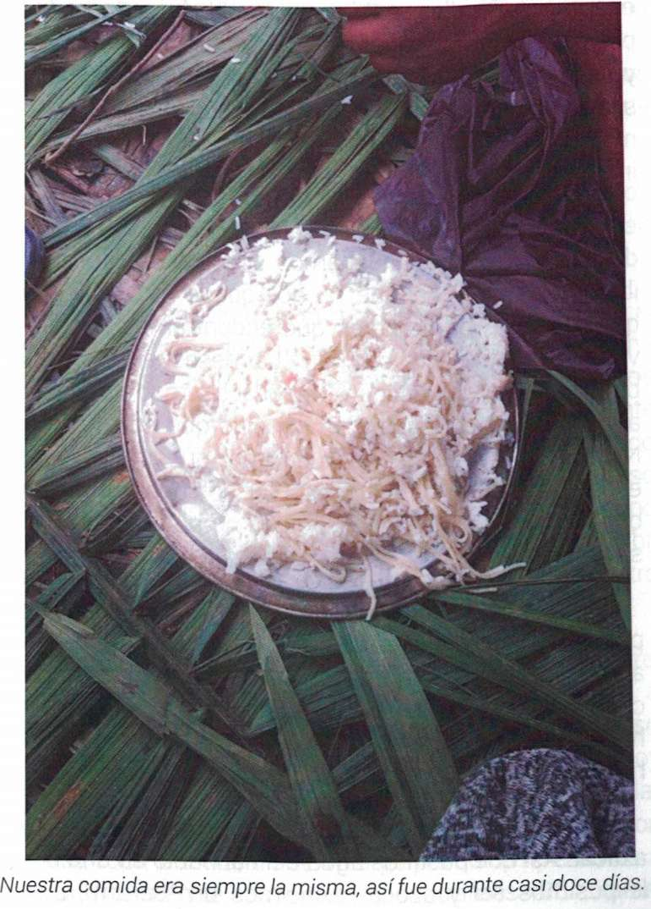

Mwen travay nan repetisyon.
Sa a gen anpil
Jwenn anba a:
(A) Twazyèm bouyon - ki sa mwen ap travay sou kounye a
(B) Premye bouyon - Sa a se yon tèks trè sal.
Sou objektif. Sa a soti nan lekti awotvwa pandan y ap tape.
Bouyon sa a itil paske li gen yon lang anglè ki sanble ak orijinal Panyòl la.
Li ta ka tradiksyon angle ki pi bon pase cognates yo.
Li gen ladan l tou frans anpil ak formulasyon anpil ki ta ka son akward nan lang angle,
men ki eseye glas Panyòl la. Epitou, tradiksyon sa a ka gen anpil erè.
Sa a se paske mwen pa t 'konprann li konplètman pandan mwen te li li epi li te vle sonje konfizyon an.
Ankò, sa bouyon anrejistre sa mwen tape pandan mwen te li liv la pou la pwemye fwa,
mo sa yo mwen tande nan tèt mwen.
(C) Panyòl orijinal la
Mwen espere ke mwen pa pral satisfè ak tradiksyon sa a jouk omwen bouyon an senkyèm.
========================
========================
I work in repetitions.
This contains many
Find below:
(A) Third draft -- what I am working on now
(B) First draft -- This is a very messy text. On purpose.
This comes from reading aloud while typing.
This draft is useful because it contains English cognates which are similar to the Spanish original.
There might be English translations which better than the cognates.
It also contains many phrasings and many wordings that might sound awkward in English but which try to mirror the Spanish.
Also, this translation might contain many mistakes.
This is because I did not fully understand it while I was reading it and wanted to remember the confusion.
Again, this draft records what I typed while I was reading the book for the first time,
the words I heard in my head.
>
(C) Spanish original
I expect that I will not be satisfied with this translation until at least the fifth draft.
============
============
SURVIVORS: CITIZENS OF THE WORLD
Pascal Ustin Dubuisson
To my son André Pascal Dubuisson Rodelo
==============
INTRODUCTION
==============
I, Pascal Ustin Dubuisson, son of Haiti -- a country where success is a challenge,
and the right to eat, to educate yourself, and to progress a privilege -- made the
decision to leave my country not only for a better future, but also for a secure future.
"As far as you want to reach, as high as you want to climb, everything begins with a single step"
In order to reach the goal, referred to in the previous statement, I took a grand voyage
so that I could make my life worthwhile.
The desire to have something better gave me
a strength and a determination that permitted me
to confront such a great challenge, one that thousands of persons did not survive.
This experience has taught me that, in life,
if you must dive into the darkness in order to obtain the light, you should not waver;
because the best decisions are often the most difficult to take,
because they always have grave consequences.
PARAGRAPH
In this book, I share a sad and sorrowful story,
through which I sought a reader to engage them with my experience
so that they better understand the external world and that which it implies:
its customs, abuses, racism.
Furthermore, I intend that whoever reads this book will be able
to differentiate between the surroundings where they live
and the shadowy ambient where they can not see with the naked eye.
(USTIN: UNCLEAR STILL)
I hope, in turn, that you understand, as I learned during this voyage,
that great opportunities are for those who are attached to their dreams,
for those who dare, resist, and never give up
=====================
CHAPTER 1: SURVIVORS
Citizens of the World
=====================
PARAGRAPH
From the moment we depart,
all of us who have decided to leave our places of origin
live dark, difficult, complicated, uncertain moments and
even though making this miserable journey felt like torture,
we can still say that we are survivors.
PARAGRAPH
The Republic of Haiti, a Caribbean country,
located on the Western side of the island of Hispaniola,
adjoining the Dominican Republic, has a surface area
of over 10,000 square miles and had a population of over 10 million in 2015.
(USTIN: ARE YOU OKAY WITH THE CHANGE IN STATS)
Its political and cultural capital is Port au Prince.
It was gravely damaged by the January 12 2010 earthquake.
According to The World Factbook, eighty percent of
the population lives in poverty due to climactic conditions,
and two-thirds depend upon agriculture and fish.
(USTIN: NOT CLEAR. ARE THE FISH && AGRICULTURE CONNECTED WITH THE POVERTY AND CLIMATE)
It was an formerly French colony and was the first black country to declare its independence in 1804.
Sadly, life expectancy rarely exceeds 52 years. Only 1 in 150 Haitians receive a salary.
Fifty percent of Haitians depend upon remittances received from relatives living abroad.
It is a country rich in gastronomy yet ironically its children live in
extreme poverty caused by insecurity and natural disasters.
Its politics are moderate.
As far as education goes,
Haiti contends with (TRATARSE DE)
a very intelligent and proud people with few opportunities,
which provokes Haitians to migrate
to diverse parts of the world
with the intention of helping their children better to prepare academically,
thus constituting the so-called "diaspora" of Haitians living abroad.
Since the 7.3 magnitude earthquake began at 4:53PM on January 12, 2010,
the country has confronted a chaotic situation,
with around 300,000 dead: brothers, sisters, fathers, mothers,
children, and friends lost their lives in this tragedy, considered a black day in Haiti.
(USTIN: I don't love the phrase "black day" (fecha negra) as a a pejorative. Can you change the phrasing?)
Some countries came to help,
although this led to malicious rumors about who received the aid money.
The only thing the Haitian people had to depend upon was God.
Haitians chose Brazil as the first country for seeking asylum and they traveled there in great numbers.
Thousands crossed the Dominican Republic, Ecuador and Peru,
to be able to reach Brazil with the aspiration of changing their living conditions.
From 2010 to 2014, Brazil was ranked among the world's largest economies
with its currency, the *real*, worth forty cents to the dollar.
Haitians valued this unstable currency even more by Haitians
because they had been so impacted by unemployment.
With a salary of a thousand *reales*, Haitians had to pay rent for their families, among other expenses.
At the beginning of 2015, everything began to change:
the economy contracted after the 2015 World Cup and therefore the Haitians,
unfortunately, began to lose their jobs.
Still people hoped the situation would improve and that things could change;
however, the dollar followed its course
and continued to resist the economic situation until the next year. (UNCLEAR)
The Haitians saw that the situation was getting worse every moment,
so they made the decision to leave the country in search of something better.
Their eyes turned towards the United States.
Not all Haitians had family members there;
nevertheless they made the decision to leave
just like those had relatives to receive them in that country.
It was possible to live in Brazil,
but the duty to help one's family was stronger,
so remaining in Brazil and waiting was not an option;
rather, one had to look for a better quality of life.
What we did was not going to change the amount of misery in Haiti,
nevertheless the support of ten dollars
would make a big difference for our parents
The majority of Haitians who live in Haiti
depend on other people who find themselves in the United States, Brazil, France, Ecuador, Venezuela, etc --
people who had overcome their economic problems, or at least, who were stable and did not need to struggle.
Before leaving Brazil, many saw that
it was necessary to change their nationality from Haitian to that of an African country
in order to be able to cross certain countries.
The first ones who went on the way were charged
with giving advice to the others and teaching tricks to avoid deportation.
Families, even though they were not physically present, traveled with you,
because thanks to their support and their small financial contributions of each one,
it was possible to take those dangerous roads towards the exit of Brazil,
to cross Chile, Venezuela, Peru, Ecuador, Colombia, Darien Gap
(the roadless jungle between Colombia and Panama), Costa Rica,
Nicaragua, Guatemala, Mexico,and the United States of America.
This story has been lived by thousands of
citizens of the world searching for a better life in the United States
PARAGRAPH
We mostly lived in South America, the majority coming from Brazil.
There was no way to calculate how much the voyage would cost,
it was not possible to speak of an exact amount because
everything depended upon the traffickers, better known as the "coyotes."
Peru was situated as the first meeting place for the majority of migrants,
who were not only Haitians; there were persons from between
the majority of migrants, who were not only Haitians:
there were persons from Senegal, Congo, Ghana, Pakistan, among others.
We were speaking different languages and came from different cultures,
but we all had the same objective: to reach the United States.
This period of coexistence gave us the opportunity to make new friends,
allowing us to create a sense of harmony, one that might even be called familiar.
PARAGRAPH
Chapter 2: Peru - Ecuador
PARAGRAPH
Money is always right
PARAGRAPH
A friend and I left together from a place called Canoas, located in the south of Brazil,
it was the exit route to cross fewer countries.
PARAGRAPH
We crossed Peru in three or four days by bus, passing from city to city
in order to cross the border of Ecuador.
We were very tired, but a great hope nourished our hearts.
In Peru we felt very uneasy because we were illegal, traveling with a lot of stress,
being careful not only around the police but also around thieves who tried
to take advantage of us in order to steal our belongings.
Therefore we used different techniques to safeguard the money
that we carried from Brazil; some used their shoes,
others their deodorants, others soaps and other personal items
PARAGRAPH
When we arrived in Lima, the capital of Peru,
we started to divide ourselves which impeded my group
because we did not want to continue without the others.
But not all of us agreed --
most were impatient to advance to the Ecuadorian border.
On this border we began to encounter human trafficking,
because we were not allowed to cross Ecuador without a visa.
Therefore, we had to pay someone to cross this stretch
and we began to contact some "coyotes" who could help us.
These people met us in the hotel where we were and
one of them assured us that it was going to go well.
These people are incredibly skilled at manipulating you
and making you to make you enter into a confidence
(AWKWARD BUT NEEDED FOR WORD PLAY).
We did not have confidence in them.
but neither did we have another option.
We had to try it.
PARAGRAPH
We knew a great number of Haitians who had tried many times, but because they failed, they were returned to
Peru.
Because the Ecuadorian police were so strict on that border,
it was not so easy to cross.
This was our first attempt.
We did not know how many times we would have to try,
because the police were so brutal.
It was helpful that many of the
"coyotes" had friends among the customs police.
They told us that everything was going to turn out fine:
we should leave Peru in the evening
but then the coyote decided that we should cross in the afternoon,
because in the evening the authorities performed more vigilance. (AWK)
PARAGRAPH
Eight of us carried out the voyage,
one of them had two cars
and a friend of his a motorcycle in front,
about a mile and a half away,
and he was in charge of communicating with his police friends,
who did not yet know all of us.
PARAGRAPH
After we entered,
he brought us to his wife's house to show us some things
which other Haitians, who had previously passed through there,
had left behind.
In an hour or so, they told us that it was time to leave for the capital.
The truck was ready to leave.
Most of those who were expected were already inside,
only about ten persons were missing.
Throughout the trip we worried because we knew
about the situation in Ecuador.
We did not know what to do with our fear of being caught.
We had a great deal of anxiety.
Nevertheless, we had to have trust.
Every day one brought with oneself one's own fears,
one's own dreads, one's own insecurities.
One of the things that fear can do is to paralyze you.
Conquering fear was not easy for us
In the movie “Rocky”, the main character said that
fear is a fire inside of us:
if we control it we stay hot to continue fighting,
but if we do not control it, IT will spread and devour us.
That much is very true.
For that reason, we were forced to control each emotion and
it seemed that each time a new one rose up in us,
we had to fight it.
PARAGRAPH
Many of us consider ourselves brave men.
Here, in this forced adventure, we discovered feelings
we had not experienced and which we had to confront to be able to continue.
PARAGRAPH
Everything was calm the night of the voyage.
There were no setbacks in the road.
The night was very long for us. No one could sleep.
When we arrived in Quito, the capital,
we saw one hundred migrants who had departed from many different parts of the world
The group I came with and I did not want to wait around,
knowing that we did not have any authorization.
We stopped a taxi to ask the driver
if he could bring us to the border with Columbia. He told us that this was illegal.
Nevertheless, he recommended a friend who could take us
PARAGRAPH
There were many "coyotes."
In each city we crossed, they benefited the most from
the earnings they received from people like us.
They were pleased to help us with the economic question,
not because they had a big altruistic heart.
They made us believe in things that did not exist
with the aim of making us pay them more money
For example, they told us that the police
would take our money and frightened us by saying
that they would telling us that
they would harm us.
This was just a way of forcing us to pay more.
PARAGRAPH
PARAGRAPH
When we took the taxi to start the next endeavor in earnest,
the driver knew where and how to get there quickly
to avoid the police.
It was inevitable that we would encounter one and so it was:
on the road we encountered the police.
They stopped us. The driver had told us that we should
speak French with them, because if not, we would have to return
to Peru, and we were already so close to Columbia
And when the police arrived, they asked the driver why
license plates had a different digits than those close to the border,
and the driver told them that he had only come up there
to bring French people to Columbia.
PARAGRAPH
The police asked for our papers.
We acted like we did not know how to speak Spanish,
so we spoke French and offered money to the officers
so that we could leave. Fortunately, nobody was watching
and they accepted the money and allowed us to continue

[PHOTO]
Barely in Peru, so many people were already so depleted.
They could find nowhere better to rest than a bus terminal.
[PHOTO]
PARAGRAPH
This facet was very complicated because we knew
that returning to Ecuador would just waste our time and money,
and we were only six hours away from Columbia.
On the road, we stopped many times
but fortunately there were no police in sight.
When we were close to the border,
the driver told us that he could not continue with us due
to police security issues.
He let us out the taxi and
told us that we had to look for a way to continue.
There were many people waiting there.
When we arrived to the border, it was all very strange,
we were very stressed and felt many unpleasant feelings.
PARAGRAPH

Chapter 3: Columbia
PARAGRAPH
In life you have two options: 1) go to bed and dream or 2) get up from your bed to realize your dreams.
And that is what I did.
Your humble servant took root in Brazil,
where he worked in a restaurant as a waiter from midnight until to 7 AM,
a job that paid 1300 reales a month.
I come from Haiti.
I was born in Port-au-Prince within a dysfunctional family,
formed only by my mother, a sister and a brother.
For matters of fate,
(AWK!!! things of destiny? reasons of fate? Out of fortune? Esp bc
PARAGRAPH
ends with "luck" and
risk/gamble is motif throughout)
we separated and I was taken to grow up by the side of my grandmother
who died when I was twenty years old.
When I was twenty-three, after staying around for only three years,
I decided to leave for Brazil to find my luck.
According to Wikipedia,
the border between Brazil and Columbia is a continuous 1,021.7 mile international boundary
that completely delimits it.
The borderline crosses 502.6 miles of river and canals,
and 380.3 miles of conventional borders, (LINEAS CONVENCIONALES?)
and 138.7 miles of waterways.
[footnote]
[footnote]
PARAGRAPH
FOOTNOTE:
(https://es.wikipedia.org/wiki/Frontera_entre_Brasil_y_Colombia,
accessed September 1, 2017)
PARAGRAPH
Some months before entering Columbia
we had to pay a lot of money to cross the border.
We spent between 300 and 500 dollars each.
The government of Columbia was one of the governments that,
seeing the arrival of so many foreigners from different nations,
took the opportunity to offer us an entry document
that permitted us to stay in the country
for twenty-two days or up to a month.
However, at that moment the men could not cross,
only pregnant women and children had this right,
and could cross the border without a problem.
All the rest were condemned to cross over a hill.
This mountain was like a cave of thieves,
so much so that each family that lived there
had a firearm as personal protection for themselves,
for whatever emergency.
This was their of taking care of themselves.
because the police had withdrawn so far away from this village.
PARAGRAPH
Crossing the hill took us about four hours, it was so long.
Some Colombians had good hearts --
even thought the citizens had to defend themselves from invaders,
without even knowing us they tried to help us to cross with their carts ,
but it was in vain because the hill was too steep (PESADA?)
and the carts could not climb it.
They, in order to help out the migrants, thought up a way to put people underneath the trucks,
or to put bags of trash or rice on top of individuals, but it was useless.
They were found out.
PARAGRAPH
Seeing what was happening, we all had a meeting to make a decision about what would be beneficial to our power to
arrive
There was not much to think about, we only had one road to follow, the dangerous one -- where, to start, you had to
pay ten dollars to the Colombian who was in charge. And so it was.
Unfortunately, we believed that this would be the only payment we would have to give, but no, on this road we had to
pay for everything, most unjustly, you pay for necessary things such as sitting down, drinking water, going to the
bathroom, resting.
Those abusive Colombians had mentioned to us
that they knew that the migrants were rich,
that without money, you could not cross ten countries
to reach the border of Tijuana.
In a few words, if we did not have a lot of money to begin with,
we could not have left the place where we came from.
Nothing is more wrong that this thought.
PARAGRAPH
As happens to all human beings in an unknown situation, suspicion surges within us; nevertheless we do not
show it. Haitians are very tough and foolish people. We have a gene that define us as strong, and not weak,
in the face of adversity, even our skin can resist the environment-- we can endure the pain.
PARAGRAPH
Luckily, this hill was not really a great obstacle.
We knew beforehand what awaited us,
but my race is very communicative
and all our acquaintances who had already
made the journey
had told us how and where and what
we were going to have to pass through.
That is exactly how we knew the roads, from the information which they gave us and we knew perfectly that
nothing would be more dangerous and difficult than passing the Darien Gap jungle in Panama.
There we would encounter truly different challenges
PARAGRAPH
It was a place where the we would have to pass through,
without question,
and where we knew that most of us would confront
their strengths and weaknesses, their securities and insecurities.
It was the place where undoubtedly
we would come to regret that we had left our apparent comfort
PARAGRAPH
Already signed up for the journey,
I delayed the group because I was unable to walk
because the climb was too very broad, (ANCHA? WHY?)
complicated and tangled.
I did not expect that this road would be was so exhausting and tortuous.
Even thought I was young, I felt like my lungs were going to explode.
I was never an athlete, so I was not in good shape and,
at that moment, my physique could no longer take it,
I thought I could not continue any longer.
PARAGRAPH
In the distance we could see several persons, so very far away that we could not call them.
Although they would not have been able to hear us and, moreover, we could not yell because we were out of breath
The only thing that would happen is that we would wear out our last strength
and would be unable to restore them because we had no water.
We had for gotten how long the road was going to be.
We felt cheated and angry because the guides --
maybe not to frighten us, we don't know, or through simple malevolence (incompetence?) --
lied to us,
telling us that we would walk for about twenty minutes.
Suddenly, they stopped us.
The “coyotes” did not want to advance because there were police ahead.
They abandoned us in the middle of nowhere, hungry and thirsty,
shamelessly,
without an iota of kindness,
telling us that we would have to continue alone.
PARAGRAPH
The path we followed was tortuous.
The time came when we believed that
the "coyotes" had prepared a trap for us and that
at any moment, they would turn us over to thieves
to take from us the little that we had.
Emotions shook like a wheel of fortune with incredible velocity.
We thought thousands of things,
among them all the ways we could die alone, in an unknown place,
where nobody would come to us to give us a decent burial,
because it would be hard for our families to find us.
PARAGRAPH
We thought about all of the possible accidents which could befall us to which we had no way to respond
Being in a moment of that nature, where uncertainty and confusion press down, made us unhappy with everyone.
However, despite everything our own demons were telling us, nothing like that happened.
Thank God.
PARAGRAPH
After a moment, we saw a truck. The sense of happiness we had was like when a child celebrates his first birthday and feels amazed with everything he sees.
Well, it was with this capacity for amazement that life returned to our bodies.
We approached the driver and asked him
if he could bring us bring us to the way out,
he informed us that the exit was very far away.
He kindly told us that we should wait for his return
ad then he would take us to the main road.
We thought for some seconds and reacted like when
a child opens their gift and it is not what they wanted.
We decided at that moment to move from there
because the road was neither very nice nor trustworthy
PARAGRAPH
Fortunately, after forty minutes walking, the van returned
carrying many potatoes and
the driver told us that we could get on.
In this way we arrived to the main road.
Imagine that we paid the “coyotes” for taking across a road
for six hours
when they did not walk for even a single hour.
They received in total more than 120 dollars for each one of us
and spent forty minutes with us.
PARAGRAPH
When we arrived at the main road,
the driver told us that he could not take us far due to the military,
and that he did not want to get in trouble.
We understood. It makes sense.
Who wants to ride with illegal migrants in their car
and go to prison or be punished for an act of compassion?
So we got off and took a taxi to take us to the migration office.
The offices were very close to the border;
nevertheless, we could not get there directly.
For that we had to climb a hill, almost six hours to cross.
By the time we arrived at the migration office,
we learned that the line was very long.
We needed to have a lot of patience
if we wanted to get the paper
that would allow us to cross our country

[PHOTO]
Despair was something that affected us day after day
seeing that you are on the road for months and
still cannot get to the place where you want to go.
Sometimes you do not even want to talk to your family
to tell them how the situation is, you prefer to hide the
information because of the shame you felt
[PHOTO]
PARAGRAPH
We rested and watched other people who were arriving on the same road,
but they did not have the same luck as us.
They told us that thieves had come after them on the road,
taking their money and valuables.
It was understandable that they came to cry,
because what they went through was so terrible
We all knew that, at any moment the same thing could happen to us,
that is, to put it coldly,
that there could be more tears.
USTIN: DON'T THINK I GOT IT RIGHT. WHAT IS THE COLD REALIZATION? MORE TEARS? NO TEARS?
PARAGRAPH
Migration gave us a visa document for thirty days,
but there were so many people that day
so the government divided us up into different cities.
After a long day, without eating anything,
some of us thought we should spend the night at the border
because the transit buses were downtown,
but nobody wanted to stay with us.
Because of this, we took a taxi
to bring us to the bus terminal and
paid for a van to Medellin,
with the intention to processing the document
for crossing the country.
Then, the border officer provided us a paper
that would permit us to travel to Medellin
PARAGRAPH
On the road, when we had almost arrived,
we ran into a group of soldiers,
two of them were inspecting our luggage outside and
the other two asked us if we had papers.
They did not really care about the papers.
They ordered nobody to get off the truck.
The told us to take off our shoes to verify that we were not carrying drugs and
two of the soldiers who were below took the shoes, money,
whatever they wanted
Nevertheless, we Haitians were already prepared for this, with our money hidden inside deodorants, inside soaps,
in different places throughout our belongings and our bodies.
PARAGRAPH
After taking everything that they could,
they asked us to calm down so that the trip could continue.
We saw no legal reason why they had detained us,
we only saw the injustice of their work
We had thought, innocently,
that they were there to help, but no,
theft was part of their job,
part of the illicit enrichment of the military.
During this year of migration, they were definitely doing very well.
Our courage and helplessness did not end here. (WHY COURAGE and HELPLESSNESS?)
When the van continued,
a gentleman looked inside his shoes and did not see his money.
He cried a lot, a truly exaggerated and very strong cry.
This made the others angry
We were all under pressure.
PARAGRAPH
This man maintained us that his money was in his shoes
and we began to have doubts because there were so many
Colombians in the bus who told us that those policemen
were pure thieves.
We knew our rights and we should have gone
to a police station to file a complaint,
but we did not have any status in the country
and we were too afraid because
we thought they were to deport us if we went.
PARAGRAPH
It came as a surprise and
a regret that we got so angry with this gentleman for crying
because when we arrived at the city and
got out of the van to open our backpacks,
we realized that, in some very skilled and perverse manner,
they had robbed many of us of money, clothes, shoes.
Immediately, those affected us began to cry
and quickly tried to make a barrier to stop
the bus, but the result was useless.
PARAGRAPH
My friends and I had another way to hide the money,
so this time we were not affected as they were were
Nevertheless, I was sincerely very sad to see my
How could they continue without money?
fellow travel suffer.
Through our good or bad luck, we could continue and so we did.
PARAGRAPH
At the same time, we were also annoyed with them,
because even though they knew what we would be exposed to,
to the abuse of the authorities, they not take proper precautions.
We discussed with them that it was possible to put their valuables
in their backpacks and not in their wallet,
where the police are not authorized to put their hands.
After this bad experience, we took a taxi to the migration office.
When we arrived, he had to wait a moment
for them to speak with us about the document they were going to issue.
PARAGRAPH
With all that we had lived in such a short time,
we hoped and blessed God, thanks to whom
there still exists good people
who do not mind if they are criticized or cursed
who give food to whomever needs it,
and we needed it because
we were dying of hunger and thirst.
God was showing us his care through these people
who did not know who we were nor where we came from,
who might not speak our language,
but who let themselves be guided by What
in order to give what little they had to the migrants.
With such luck we recharged the batteries
to be able to continue with what we lacked.
PARAGRAPH
Although we expected the immigration officers to see us,
they did not receive us.
The authorities told us that we had to return
very early the next day
and also offered us to stay in
the country, saying that they were going to give us many opportunities.
However, nobody wanted to remain in Columbia.
It was to early to make a decision like this.
The goal of reaching in Columbia was to have that official stamp
that would allow us to cross the country to enter Panama.
There was no time to rest.
In this way, and with a bit of encouragement, we went directly
to the bus terminal to buy a ticket
which brought us to the next city, Medellin.
PARAGRAPH
While we were in the bus to go to Medellin,
we took more precautions due to our experiences on the previous trips
The bus drivers seemed to receive a commission
from the restaurants where they brought us,
because they were very expensive restaurants
and they stopped there every time.
We wanted to save our money,
so we did not enter , only bought whatever
minimal thing needed for survival.
Half of us ate, half of us drank, and half of us slept.
PARAGRAPH
We reached the city of Medellin at night
and went straight to the bus terminal to leave for Turbo,
the last city before entering the terrible Darien Gap.
Turbo is one of the cities where we felt like we were in Haiti
because its population is dark-skinned
Here they did not look at us like some exotic creature or some freak.
We felt at home, because we did not look like foreigners, we were all the same
Some of the Haitians who came to this town did not stop to rest,
but instead took a boat right away to Darien Gap.
Error.
For this lack of reasoning and wisdom many wound up dead
or sick due to physical fatigue, and had to
return to their place of origin.
PARAGRAPH
Everyone knows that the jungle is a dangerous, deadly place,
where you must walk a great deal and must guard yourself
against multiple dangers
However, many did not heed the warnings of our brothers
who had already crossed through there.
In order to enter the jungle, one must first rest
so that you will be at 100 percent, because the Tapon del Darien,
also known in English as the Darien Gap, is the swamp-filled jungle,
located on the edge between Central America (Panama) and South America (Columbia).
This area is still as wild as in the time of the Conquest.
Only that now it is ravaged by armed groups,
assaults are the order of the day and women are raped,
while tropical illnesses like dengue or malaria are at the door.
What this means that it is not pleasant to walk through there
PARAGRAPH
If it not I am mistaken, one has to cross one hundred miles.
My group and I, using our common sense, decided to stay three days in Turbo
in order to feed ourselves well and
to regain our strength, resting so that we would be able to continue.
PARAGRAPH
We were not ignorant of the place's dangers.
We knew beforehand that, if we were not aware,
would were not going to survive and as a result that we would not
be able to reach our next destination: Panama.
We heeded the advice of our friends who had already made the journey.
They explained to us that we would have to be patient about leaving.
If not, we were not going to get out of there alive,
due to the manifold threats
PARAGRAPH
We followed the advice and went to look for a hotel.
We were thirteen Haitians in search of a place to rest.
Some persons opened their houses and rented us some rooms.
The people were very kind to host us because the hotels were very expensive.
Although we found some cheap ones, but they did not have a television,
and we were looking, not only to rest,
but also for some distraction.
At night, we had a meeting to plan the voyage.
We all had to share what money we had
in order to buy food, water, and personal items.
PARAGRAPH
The next morning we divided up into groups,
each one of us with our own task to do.
We had to go to the market.
The day was too hot.
It was a Saturday and we felt exhausted by so much heat.
When we returned, we made a lot of food, joked around,
drank a beer and at night, we went to sleep early.
These moments were pleasant because they made us forget the suffering which we had gone through.
PARAGRAPH
Sunday was a special day because we laughed as much as we could,
from the morning to night,
and so we spent the day, distracting ourselves.
Monday was the day to leave.
We went early to buy tickets and some boots,
in order to be able to cross the mud which we knew
we would have to cross, because it rains every day in the jungle.
We prepared our backpacks and necessities;
the departure time was ten in the morning,
the longboat would leave at this time and it was not going to wait for us.
This longboat was a legal form of transportation , under the control of the Navy.
It transported people to Turbo in order to buy shellfish.
We were forty persons, mostly Haitians and Cubans, in the longboat.
We all put on life jackets to prevent any possible accident.
The trip lasted two hours
PARAGRAPH
There is not a living being who does not feel afraid
when confronted by danger;
courage grows from confronting it and acting brave.
In this moment, our strength was our family
and what we could offer them in the future.
That is what motivated us to continue.
PARAGRAPH
We had no aim in mind other than making money
When I saw the sea and the reefs,
I thought that I was crazy,
because I was endangering my life in this voyage,
and I asked myself whether it was worth the pain
to endanger myself like this.
PARAGRAPH
The sea was so rough that
even the man who thought himself strongest
broke down from the fear provoked
by sailing in these waters.
It was a terrible sensation. Your heart beat speeds up.
Your blood pressure goes up and down.
Thoughts began to play with us again.
Suddenly it came to mind that
it would be better to lay down in the river and end everything.
The truth is, if you did not control your mind
you would wind up crazy.
You needed a lot of mental strength to not go insane.
But thank God we left those stormy waters alive.

[PHOTO]
It was a pleasure for everyone
to go see their friends who were sailing in this little boat.
Around 40 persons were in each boat.
This was the beginning of an adventure
into the great and deep Daren Gap
[PHOTO]
PARAGRAPH
We were all afraid to start this journey.
However, we had to use the fear which ran through our bodies
defensively and to continue despite everything.
This did not prevent us from
continuing to dream hopefully
about reaching our final destination,
independently of our current situation
PARAGRAPH

PARAGRAPH
Save yourself, whoever can
PARAGRAPH
For us, Darien Gap was the most horrible part of the game;
we tried to be cautious and to take the things calmly
if we wanted to remain alive.
We knew that we were going to walk for several days
through a very risky place.
When we reached the beach shore, we met many Colombians
who were waiting for us to
guide us on the way to Panama.
My group was overloaded with several suitcases and food,
while other groups, by luck of the draw,
brought barely anything.
The guide took me and my group to the front
due to all the things which we brought.

[PHOTO]
Before taking the way through the forest,
everyone must give their paper to the officials
when they arrive
to validate their voyage into the jungle
-- the way to erase the evidence that
you are going through these places,
in case that you stay in the forest.
[PHOTO]
[PHOTO]
This road was filled with women from different nations.
There were also strong women, as many as the men!
[PHOTO]
PARAGRAPH
During our first hours on the road,
everyone began to converse about how to calm down, but fearfully.
There were good and bad parts of knowing about this journey from other people.
we were already in a state of anticipation
because we already know the place's dangers.
Walking was difficult because not all of us
had the physical constitution to keep up of the guides,
and at the time,
neither could we abandon those left behind.
since they were vulnerable people, such as women,
some of whom were pregnant and had kids;
The only one option was to wait for
them to line up with the group
and then to walk all together.
We crossed the first mountain in an hour and,
when we reached the peak, we saw a gorgeous landscape:
there were cows, donkeys, horses.
We asked ourselves how they could have gotten there,
thus there was no way could have gotten there themselves; (???)
there were not even houses
PARAGRAPH
We could appreciate a very calm river
everything seemed to be fine.
Apparently, the guides knew to where to take us
and had everything planned
As a thing irregular and outside of all logic,
we came to rest in a place in the jungle
where there were tents, music, and beer.
It appeared like a place for a party, for it was already six in the afternoon.
We were very estranged by the panorama we saw,
but at the end of the story,
it was their business.
We tried to have fun in this place,
but unfortunately the prices of things were very inflated.
Sadly, they abused migrants:
this was the only place where one could get something to eat or drink.
A simple bottle of water could cost up to two dollars, if not more.
They mistakenly believed that we were carried rolls of bills
PARAGRAPH
The group consisted of one hundred persons.
We decided to camp out for the night.
It was no five star hotel.
We were in the outdoors,
so
some women left to cut wood for cooking
and the men, enjoying the brothel that was a few steps away
to go drinking and dancing
I joined them and we went to "have fun."
Incredibly, after what we had lived through,
in the midst of this environment,
we could be distracted momentarily.
When the meal was ready,
we all sat in a circle for dinner,
Afterwards we went to sleep and allowed the night to pass.
That same night, the guides tried to prepare us psychologically,
telling us that the first days would be the most difficult.
It seemed like they were unaware that we were in contact with people who
who had already passed through this terrain.
PARAGRAPH
Again we were waiting with anticipation.
It is obvious: who is not afraid of the unknown?
But at least I was not inclined to give up and go back.
Once you start a project in your life, you must use
all of your energies to finish it,
even if you do not have any.
You do it because you do it.
Only one thing can make your dream impossible: giving up
PARAGRAPH
The rain started at ten at night and
we did not have any way to cover ourselves.
It was very terrible for us because we were not in a protected area.
We tried, as much as possible, to cover the children who were our priority.
We covered them with plastics, backpacks, and so on.
It was raining every day and
it was going to continue,
because that is the climate of the jungle.
Due to the rain,
the mountains became unsafe because
anyone could suffer an accident on the wet slippery ground.
PARAGRAPH
Because of the prevailing weather,
many were desperate to return,
which by then was no longer possible.
With such luck ,
they had to take strength where they could
because we were warned that once we started,
we could not return.
It is like gambling: you risk it for all or nothing
That was our reality.
With all the sorrow, the cold, the exhaustion, the wet food, the wet clothes, it was impossible not to
regret of having left our place of origin.
PARAGRAPH
At five in the morning,
we prepared to continue through the Darien Gap.
The guides were grumpy, bitter, angry people;
it could even be said that they were inhuman.
They had no patience to wait for anyone,
they told us that we would start to travel at six in the morning.
They spoke with us to warn us
that we were going to cross a mountain
that would take eighth hours to cross
and that we should not even think about touching any tree or plant,
because they could be very dangerous for us, even deadly.
The plants were filled with thorns,
we could not support ourselves or rest on any of them.
The animal which we had to watch out for was the cobra, because they were abundant here.
There was no possibility of staying somewhere along the path.
WE had to travel non-stop until the end,
due to how many savage animals
we could face.
Therefore, we had to continue walking
until we reached the other side of the mountain before it grew dark.
That was the plan.
[PHOTO]
Often, in the afternoon, when we were tired of walking,
we rested, and the women prepared the food.
[PHOTO]
PARAGRAPH
Due to the rain of the night before,
our bodies were wet, tired and sleepless.
We did not know how
we were going to be able to continue like this.
Nevertheless, we prepared to leave and as soon as we could,
we prayed or invoked, (REZAR / ORAR)
in all different ways
according to our faiths.
Our trust was in God because he could sustain us on the road.
PARAGRAPH
I just observed people
and realized that many were traveling alone,
without friends or family members.
Although there were times in which one --
according to his interests, even if he did not want to --
thought selfishly about continuing without going back.
I am not going to say there were not moments
during which we all needed each other,
and it was clear that we would help each other
and we felt that it was out of the place
to try to ignore totally the situation of the other.
AWK ABOVE!!!
PARAGRAPH
After five hours of travel,
we asked the guides to allow us to rest;
the children were already exhausted
and our pace was sluggish
because the ground was wet
and that made it more difficult.
We were able to rest for only fifteen minutes,
because we only had eight hours to cross.
The mountain was the border of Columbia,
the jungle was located between Colombia and Panama
and that day's objective was to complete
the mountain crossing and to reach the border of Panama.
PARAGRAPH
After those Five hours of travel,
we realized that we were not the only ones on the road.
It touched me to see the people crying desperately,
asking themselves how they are going to continue --
people who already gotten further ahead.
The mountain was very steep,
it was impossible to see the peak.
My friend and I rested between fifteen and thirty minutes.
We were confident that we could reach it, because
compared to the women and the children,
we were in better shape.
them, thus buying us with the women and the children, we would have a better condition
[PHOTO]
The men took the responsibilities
for carrying all the suitcases
so that the children and the women would be
free as the air,
with the goal that they would not delay the group
[PHOTO]
PARAGRAPH
On this mountain we saw death, impatience, desperation, agony.
However, it strengthened the faith of believers.
During this journey the strongest men helped the women,
the children and the men who were vulnerable
That day more than one hundred people crossed by the mountain range.
PARAGRAPH
Emotions and heart palpitations were very strong
due to all the pressure and the stress.
At that time, we were close to the peak,
but at the same time, the traffickers informed us that
we were still six hours away.
We did not have the option of camping in the jungle,
so they asked us to hurry up our walking or running.
Without wasting time, my group and I followed the directions as well as we could.
It was just at that moment that I felt the most defenseless, fragile,
lost in cruel and very unstable thoughts that came and went
For good reason, you worry that you might
never see your family or your friends again.
Inside myself, I battled with my own demons.
I told myself that at any moment
a wild animal would jump on top of us,
because each howl sounded nearby
and at the same time very far away.
I did not know if you have ever been to the jungle,
but it was hard to hear those roars and
to think that everything would be fine.
PARAGRAPH
The sounds were varied, of all types of animals,
so many that we could not identify them
The sounds were so very loud that I guessed
they were lions, tigers, jaguars, spider monkeys, pumas,
or, well, the triumphal entrance of a cobra.
[PHOTO]
The lower part is a mountain range
that took us six hours to climb
[PHOTO]
PARAGRAPH
Here is just when you pause
and you start thinking about the importance
of the things that you posses.
In this instant we were all carrying money,
but we could understand that it would have no value there.
We had moved from our apparent stability --
in my case, from Brazil, where I thought a lot about
blessed money,
giving it significant value,
and now money was not worst anything.
What good was it to have money and to not use it?
What good was it if you could die?
The Bible says that the root of all evil is the love of money.
Well in my case it was.
I traveled the world looking for dollars
and just for dollars I could die.
How ironic and cruel.
PARAGRAPH
There is a character named Don Ramon,
from the famous Mexican television series "Eli Chevy Del Ochoa"
(The 8 Year Old Kid)
who said very assertively
"I might not have a single peso in my bag
but I have a smile on my face,
which is worth more than all the money in the world."
How I longed to have a smile that is worth gold
How difficult it is to give things their true value and
to learn to value them differently
based on your experience
This could be an advantage, depending on how you see it.
PARAGRAPH
We were going as fast as we could
With my feet exhausted and powerless
due to such a tortuous road,
I carried my bag on my shoulders,
thinking only about how this would all end.
By the time we reached the foot of mountain top
seven hours had already passed.
It was the Panamanian part of the Darien Gap.
After thirty minutes of walking on the foot of mountain,
we began to hear many more noises.
We thought that, fortunately,
they were Panamanians,
but no, they were also migrants like us,
Cubans, who informed us that
we were about to arrive at a refuge, the first in Panama.
PARAGRAPH
When we arrived at the refuge was in bad condition:
the earth was damp and covered with a lot of stones.
PARAGRAPH
There we met the people from Ghana and other parts of Africa,
Cuba, Pakistan, Brazil, Haiti, and many other countries.
Before entering we were asked us to make
a line to get a number,
which would as our registration and our exit pass.
There were many people ahead of us.
This wore down our patience,
even though we honestly did not have any.
I got the number 328.
It was terrible to have to wait so long.
They called 50, 80, or 100 persons a day, but not every day.
The situation was very depressing and hopeless.
Because we did not have freedom of movement,
everything we thought about doing
we had to inform the soldiers, who were
the ones who decided how best to manage the place
That is, strict and rigorous control was evident.
PARAGRAPH
After they gave me my number,
I took time to reflect upon the people who stayed behind.
It was not possible for us, as much as we tried, to all come together.
I was worried about a friend from Brazil who came with me.
He made the decision to stay with two women
who were brought a girl.
It was a very altruistic act, disinterested on his part,
for which I admire and respect him.
PARAGRAPH
At around eight in the evening we began to see people arriving at the refuge.
It made me so happy to see my friend come in.
Although it broke my heart to see him arrive in tears
along the other people because they
could not believe that they had made it.
Who would not feel terrified of staying alone in the jungle, without protection.
It makes sense that you would get emotionally overwhelmed
with joyfulness and gratefulness for getting out alive.
PARAGRAPH
The soldiers were in charge of giving us rice and oil
so that we ourselves could make our food,
because we had left in the road the food that we had brought.
This was not so disagreeable; it was not a normal meal,
but it was enough to alleviate the hunger.

[PHOTO]
The first refuge in Panama.
This place was fit for pigs
USTIN: DID I UNDERSTAND CORRECTLY? AWK???
[PHOTO]
PARAGRAPH
Those moments were irritating, annoying,
because there was no place to sleep.
You yourself had to come and make your tent on the
damp group and on the rocks
It was atrocious.
Because not only was the weather cold,
you could not hide yourself from the rain.
The suffering continued.
When everyone was looking for a place to set up camp,
the soldiers began to shoot bullets in the air
so that the wild animals would not approach us.
, the purpose being to scare them away.
The climate of the jungle is tropical –- rainy;
As soon as evening approaches, the rain comes.
This is why nobody is able to sleep,
because the tends we made for refuge
were made of cloth or calico (MANTA)
and functioned only to cover us from the sun.
PARAGRAPH
Obviously the children began to cry
but this was the least of our problems;
the real problem was that some
savage beast could devour us.
Therefore, in this situation,
we had to put our trust in the soldiers
who were stayed to guard.
The night seemed endless.
PARAGRAPH
We assumed that, sadly,
there were still persons who had remained in the jungle.
Wherever they were,
their situation was unpleasant.
I could not imagine how they were doing.
In the morning we began to see some of them arriving.
They came with many injuries to their heads, torsos,
hands and legs.
Despite this, they were happy to
find a place where they could, apparently, rest.
We only helped them out with setting up their tents,
but they were extremely exhausted.

[PHOTO]
When we came to this site,
we had to get something to eat before it started raining.
That was the situation.
[PHOTO]
PARAGRAPH
In the morning, the only thing we were waiting for
was for them to start calling the numbers that could
leave that day, which made us impatient.
As I already knew that
my number was going to take a while to be called,
I stayed with my friends, chatting,
watching the exit route beforehand
and not waiting for our turn.
We observed and observed and observed.
As a first option,
many Haitians began to offer things of value to the soldiers;
everything they could:
tennis shoes, shirts, bracelets, necklaces, rings and money,
anything that might allow them to leave,
even at nighttime
PARAGRAPH
My friends and I were smarter.
We looked for a pen and paper of the same color
with which they wrote the numbers.
We made twenty numbers and we tried to use them.
We did a first trial run,
writing out five numbers for five friends,
with the result that they got called and exited that day.
Thanks God the soldiers called one hundred person persons
that day
and those five numbers entered.
Thus we confidently declared: we will leave tomorrow!
PARAGRAPH
The day was very slow, very heavy, very tough.
As you can imagine the ground was not comfortable at all.
PARAGRAPH
At night, a Haitian invited me to go me with him.
because he had very daringly paid a soldier
to let him go beforehand.
It was a tempting offer.
However, thinking carefully about it,
I told him no,
that I would rather wait for the number that
I myself had made
Everyone knows that traveling at night
is extremely dangerous, completely unsafe,
due to the kinds of animals that one could encounter.
Yet he did go.
This was an example of why we should not give into our impatience,
because this was a very bad decision.
PARAGRAPH
At the same time,
I saw a group of Haitians who were yelling very loudly,
who shouted that there was a lion.
That was when we all started to run.
No matter if you had a children or wife by your side,
what mattered was saving oneself.
Women left their children behind and
husbands left their wives behind
in order to save their own lives.
Everyone started running, screaming, crying out to God or
to whomever they believed in.
The soldiers began shoot bullets into the air in order
to frighten the lion.
PARAGRAPH
After this scare,
I saw a friend who had fallen and
hurt himself on the way.
Suddenly, blood began to flow from his mouth
Along with him was an 8-month pregnant woman
who was also injured.
They were not the only ones.
Many people got hurt and needed medical attention.
Luckily, they were transferred to another refuge
which had helicopters that brought them to the
city to be taken care of
PARAGRAPH
Those nights were very long and
you spent them without sleeping,
just thinking that something might happen.
It was best to keep your eyes wide open, for anything.
PARAGRAPH
On was the second night, early, after eating something,
the soldiers began to call the numbers.
This day they had a list of 120.
Thank God, my friends and I passed
with the numbers that we had made.
We were happy for our great accomplishment
and because we were not discovered.
We needed to walk 45 minutes to reach another refuge.
The soldiers told us to walk at the same pace as the slow people
so that we could all reach the second jungle refuge together
without any problems
PARAGRAPH
We 120 people began to hike to this place,
better than the previous one,
due to the ground was in better shape,
at least water wasn't pouring all over where we were staying.
Our journey was relatively quick.
We thought that were going to see houses, cars,
other people around here, but no we didn't.
Our patience became exhausted and
we thought that we had arrived at a community,
but nothing could be more wrong;
this period was much longer than we thought.
(I DON'T UNDERSTAND THIS PARAGRAPH)
PARAGRAPH
When we arrived at this refuge,
they organized us into groups of four
to put up tents where we would stay while we were there.
We made the tents with tree leaves,
which would only serve to cover us from the sun
As we arrived early,
they gave us time to cook;
it was the same: rice with oil, river water and salt.
PARAGRAPH
The numbering system was the same as before,
but with a little bit of skill and cleverness
we would be able to leave early.
We knew beforehand that, if we could not forge numbers,
then we could bribe some soldier discretely.
By the same token, that night
they called some of us to continue on the way,
because we had paid them for the favor.
Payment was not necessarily money, but antying of value,
as I have already explained.
You could give fifteen dollars or you could give your sneakers,
your dress shoes, or whatever else you could.
Unfortunately it was not possible to forge numbers in this place
because they were not written with a pen on paper,
but instead with a marker on a carton.

[PHOTO]
This was often our food:
a mix of rice with noodles, salt, and water
[PHOTO]
PARAGRAPH
This location could count on a helicopter
to transfer sick people or pregnant women
or women with children, in case it was necessary.
On any given day, there could be two departures or sometimes none
like on the weekends, when there were no flights.
Here the waiting time was uncertain,
we had no choice but to try to arm ourselves with a lot of patience
because the waiting times could be long.
[PHOTO]
They let us sleep in the forest
without any type of hope
We had no right to make a decision.
Our words had no value.
We were punished very often.
[PHOTO]
PARAGRAPH
Unfortunately, because we were men we were not allowed
to travel in the helicopter,
due to the prevailing idea of masculinity,
a mistaken one,
as a strong and enduring (stable? -- i think it has to do with medical, so find a different word),
but under these circumstances both sexes
underwent the same deprivation, the same needs,
the same adversities,
and we all found that it was enough to make you cry.
Crying allowed us to express our pain.
We also grew tired, we also got weaker,
we also broke down.
Under so much pressure there was
no manliness to take care of. (???)
What we felt we expressed through tears.
However, I imagine that,
if any of us were in a grave state, (had a serious condition? no because also injuries? WEAK)
they would indeed use the helicopter for
humanitarian reasons
PARAGRAPH
We continued walking and
they told us that the quickest way to leave
was to construct an improvised boat,
which they -- the soldiers -- would put to sea.
With force or without, with hunger or with thirst;
they indicated who was going to build it
I supposed let themselves get carried away with what they saw in us.
(CONFUSING LAST SENTENCE)
PARAGRAPH
Right away my friends and I hatched a plan.
We began to investigate who among us had markers
and who could acquire a carton,
thus that we could go back to forging the numbers
so that we could leave before the group
that we came with
We did all this in secret, very privately, because,
if we didn't, the others would ask us for a number
and we would be found out.
PARAGRAPH
That afternoon the soldiers organized a swimming competition.
People of all nations entered the competition:
Cubans, Nepalese, Haitians, Africans, etc.
Whoever knew how to swim could defend their country.
This game was an very ingenious and recreational activity(AWK)
that made us forget momentarily where were.
For those instants, we thought that we were real a community,
in the midst of a reality that wasn't ours.
PARAGRAPH
The Panamanian soldiers won the competition,
with their physical condition and their adaptation to the environment.
Also they were not as tired as us.
These moments of distraction were very satisfying
PARAGRAPH
This night it rained very hard,
We thought that the soldiers would stay with us to guard us
but it wasn't so: they left the place
There was not as much danger as in the previous refuge.
A group was escaped in secret because
they felt like they were free
There were no soldiers around so
they took to the road.
However, one of them was in for a surprise
While a soldier was doing his business
a considerable distance away,
he encountered the Haitian and beat him brutally.
Very savagely, he handcuffed him and put his head in a bucket of water
In addition the brutal beating, they tied him to the tree
so that we could see him there the next day.
=====================
FIRST DRAFT
=====================
PARAGRAPH
THis occasioned that all of us got angry and began to fight and to discuss.
Out defense was that we were not slaves or prisoners to be treated in this manner.
After this the menaced them, telling them that if they do not cross, we were going alone, and that if they
didn’t appear to have the power to shoot us, well they were not going to detain us.
Therefore, the soldiers considered our words due to that we were more than them and very intelligently each
two days began to order more than one hundred persons to calm us.
PARAGRAPH
Like there was mentioned before, we were of different countries and each country searched for its own benefit
and its own manners to go to is before their turn.
We give account that the Cubans and the negaleses were organizing escape themselves in the boas which they
had constructed in accord with the soldiers.
For that which, we flew all the night because this would not pass and they would detain them in case it
occured to grab them in the street
PARAGRAPH
In the other place we waited was that which was authorized the __________ of people who could gross.
It could be one hundred, but ________ said eighty and they were right they won, costing them twenty.
THe haitians were very attentive at the eleven ??? and, despite the tricks which we did to ______ our
destiny, in this case we asked that we were ______ the exits
PARAGRAPH
The plan which manipulated managed the soldiers wahs a fight, one that would not end like they thought.
Between the 100 that ____ were more haitians than cubans or negapiese.
THey knew we knew the number.
They did not pass of the ____ persons, but only crossed the persons who were having worked on the
construction of the boats.
______ was like eighty.
Nevertheless, we took opportunity in crossing with them.
PARAGRAPH
THey left us on the balsas and the only who we knew ______ that we should follow the river.
Here it was impossible to get lost
PARAGRAPH
Le information to someone because he did not have anything.
The indication was to continue; the only thing that we had to guide us was our instincts, following until we
arrived at a pisar ground of earth in search of ____ somewhere would find an indigenous tribe.
Before leaving the soldiers told us some recommendations; they told us that we should follow the river to
arrive at a parada and that we should wait there for one or two days.
How then still we did not have to live them in charge of giving us energetic drinks and cookies.
PARAGRAPH
Everybody was happy to leave, but we ignored still that which confronted us.
In our group there were many children, who egotistically we believed in existing beforehand and advancing
quickly, bt we did not do it because we knew that these women and their children needed our help.
PARAGRAPH
During this travel, we observed the faces of the persons, faces that reflected sadness, desperation,
depression, fear, insecurity, inceridumbre; it was very disquieting in this panorama.
ALready menaced we decided to leave at eight in the morning; it was a sunny day, but to cross the river -- as
have been many enramadas -- appeared at night.
It was not a river that we moved with calm, it was much more impetuous that which we could imagine
ourselves.
The current went som strongly.
[PHOTO]
A rest in groups, independently of the company.
The nepalises had more fears than the others; despite this, they were fraternizing with the different
peoples
[PHOTO]
PARAGRAPH
There was a funereal silence, whatever sound was very perceptible and disturbing.
Each one summed in their own thoughts, each time some prayed to god, others thought of their families or if
they left with life in these waters which appeared interminable.
We could not estimate with the exactitude how much time passed there and if we achieved at leaving without
problems.
We surprised a lot and it gave us animation of power to see that persons who had passsed for here had taken
the time to put marks on the road.
There were some branches of cloned hung or shovels with takings which were going indicating where to
follow.
That devolved to us the soul of the body.
PARAGRAPH
THe river had no end, and as there were many children with us, to this of the two in the afternoon we stopped
and decided to do a short rest on the foot on a mountain, for afterwards to continue the crossing of the
same.
EW arrived on the other side in back at five in the afternoon.
Unfortunately, some women brought some food with them and started to recollect that there have been that
which in times primitives, when all share the alimentation.
Here we were as we could eat all the afteroon
PARAGRAPH
We decided to rest and sleep there.
Right away we began to perceive a fetid odor, we did not know from where.
In two minutes of the mountain we was encountered a CHOZA which was constructed -- I imagine -- by some group
which had crossed before; no matter, we did not come close to that.
There were like ten in the evening; some of us decided to sleep on the corner of the river and others a
little bit at a distance, but right away there came a tornment and nobody of us moved from our places, but
equally we did not have a way to cove itself with water.
We began to hear the river more strong than we had heard before on this trajectory and this gave us
account
PARAGRAPH
To that which was under subordinate to the level of the water.
En this moments, it was when the women with their children began to run ALEJANDOSE, therefore we did not know
if the river was going to subordinate more or until when it would subordinate.
We saw that the women tried to get down off the mountain in order to protect their children was a desperate
seen, but they could not walk due to that which the lodo did not permit and when they intended tried to
shout to the SUELO with their cries.
They never forgot I will never forget those faces of terror, fear, and frustration.
All beagan to claim to cry out for got with desperate gritos yells, crying at an equal way as the
children.
We saw them defenseless without power to express that which they really felt, hurt.
It was not possible to tell them that nothing would happen that they had seen everything.
It was things that, even since the time that is not yet remembered, in its iterionr sugged like terrors that
i do not are unexplainable
PARAGRAPH
We remembered that the soldiers had told us that there was a day or a day and in the middle of the road, and
we would carry about a day, that we should try to calm ourselves, dram ourselves and breathe with the hope
that in half a day we would rest.
Nevertheless, with the torment and the lowering of the river we can to doubt that if this method half day
could convert itself into a complete day more.
The torment that took us like of one of a nightmare; the men were protecting the women and observing that the
river was lowering.
Around three in the morning, the river lovered, howelver, not to the live that which it had been before.
WE noted that ran much walter dirty, that which impeded us to see the bottom and to know where we put our
feet.
PARAGRAPH
The women had gone down the mountain to protect themselves from the river, lowered themselves to sleep on the
ORILLA after that which lowered the level of the water.
THe four of us went to sleep.
At the six we started to prepare ourselves to cross to begin the road until our new unknown destination.
We did not have food or water to drink, nor any kind of alimentation for the children, We began to think how
we were going to make in order to cross, we had a lot of terror.
The water was filthy and very cold, but difficulty it could be elected another option, the only was to cross
and drink in it
PARAGRAPH
The worst was the case that the majority of us did not know how to swim.
There were only two men who know, but they were not disposed to expose their lives.
Under these circumstances, we took the decision to put a foot in the water to know until when we could arrive
and in what it could do it me go or below.
I do not know how to swim, but I am conscience of how not to die ashamed or wet, therefore i learn how to
float, just as to leave on the lload, the water was completely freezing.
To someone it occurred to them to say that we were looking for a place were the current was more rapid,
therefore we discovered that , between more calm, more dangerous.
This was ran we ran in search of a place where the water ran rapidly and all of use took of the hands and
began to cross linked together, in this place there were rocks, also that did not was for below, the water
that arrived at the belt and it was in this way that we could do this.
PARAGRAPH
THe hope that came to us and went away.
It was already in this step where we did not see a single signal of orientation, neither a towel hangeling,
nor a piece of clothes, nothing.
Newly we serged with desperation in our mint.
THe truth was due to one did not have much control of oneself so that you would not go crazy.
Your mind and to be very strong to resist it.
We walked some two hours by the river linking arms, to give us an account of the road that we had taken not
was correct, this that found we regressed and searched for aonterhte.
In this scenario, the things pushed themselves complicated, because it was a road very stretched out and the
steps that should give were slow.
There was not a way to tie us one to the other, therefore we occupied the hands for the power to link us
together the tree limbs and the power to cross.
We gave steps slow, caring that our feet do not remain atorado in the river, because the bottom was not
anything secure.
CABIA the possibility in that which we waited was trapped for here.
PARAGRAPH
We watched cared that the women and the children, well there was a moment in which we took the value to cross
first the most tall.
After this, there were the more tall than me; when they passed the most tall the water came to the
cuello.
There were men of medium stature, like those that took arrived the preoccupation of which someone remained in
the road wet angry AHODAGO
PARAGRAPH
TWE had the ingenuity to AMARRAR branches of trees to the arms and unite ourselves to them so that we did not
lose anyone, and that was the manner in which we could cross, fortunately everybody lived.
At the far away we could see a towel clinging to a branch, that way we could breathe an air of new hope.
PARAGRAPH
Like at some three hundred meters we saw a group of people and started to yell at them and hell and them, but
they did not hear me.
Therefore I went back and told the others, telling them that they were outside there were them; probably we
would find food there.
THat we accelerated the pace to arrive there.
There they had a capr which lived a guade, the people who were seated resting.
When we arrived we asked them the person responsible if we could remain there and rest and if they would give
us authorization.
THey said that they were waiting for other persons for the power to realize their voyage, until that only
realized an exit for the dia.
I dialogue with some persons and they informed us that they were awaiting a guide who had gone to look for
food for them
PARAGRAPH
To arrie the guide said that the road that followed was one of the most risky and that there was no manner of
crossing it the mountain, of such luck that we were going for a river.
It cost fifty dollars per person.
We waited still a bi to see if arrived more people, but we did not have yet more the patience and we asked
that, please, we could continue.
Accordied to leave before to eat the bananas that we had harriend, those which we cooked in water with
salt.
PARAGRAPH
At the beginning it was only a supervisor who went with us, but after thirty minutes we encountered an
other.
THese ultimate remained behind the people and the other in front with the intention of vigilating that all
continued the same the pace.
THis tremendous personage cost ten dollars to carry the backpacks of the persons.
I said to us that we would walk three hours to arrive at a river with four points.
The CAUDAL was very long -- I said -- very, very long.
TO corss it you had to go very slow and at the time approximately to traverse it was seven minutes.
TIs was the advertencia that one of the guides gave us at the beginning of the travel.
We arrived at a point in which , to cross the CAUDAL, we had to form a line.
WE passed LAZOS for our body so that, if anyone tripped, all of use would be hanging, thus that the riachuele
had many rocks.
It was very risky
PARAGRAPH
WE could not one could not go pressured, it had to that to take the trajectory very pausingly.
The subjects that guided us helped us to cross only because they did not want to follow us in the line,
therefore they did not ignore like us the implicated risks.
WE were afraid of dying because the CAUDAL was very deep.
It could be said that we liberated it, ant at the ending we rested like five minutes.
The guide explained that still we lacked two hours before arriving at a village surrounding of about forty
inhabitants.

[PHOTO]
Despite all the difficulties encountered, we enjoyed the mountains, joking, laughing, making questions
ridiculous.
All this was a part of the unforgettable environment
[PHOTO]
PARAGRAPH
This river was an incredible experience.
The current of the place where we could cross was not too strong, it looked tranquil, calm, we did not
advance brusquely.
We crossed with success, thanks to got, When we arrive, some of them were agotados, exhausted, the people
wanted to accelerate the pace because the supervisor of the voyage that we lacked -- according to him ==
like two hours.
PARAGRAPH
For the first right away a friend and I occupied a time to cook an spaghetti that the had and we made fire
uniquely and put salt.
WE ate spaghetti and continued.
PARAGRAPH
Far away, we could see that began to come the people who were remaining outside, like that the then wer had
or did equipped with them.
Morea ahead, wesaw the people who were on the commencement with me and had also equipment with hem.
WE encountersd with a river of three points and those caudales almost none could be crossed.
THe interesting thing was that there was too much calm in the water, more than in the anterior.
THese rivers suelen to be deep, to be said that when we were clam they were the most dangerous.
He who know how to swim did an inspection to the river and when he returned he said it was very dep.
Due to this we started another time to realize strategy because no for us was possible to cross.
Wemade a line.
For those moments to me I lack the patience, for the most, a friend and me left the group.
When we left them and they started to cross, we told the story of the other four haitians who had also left
the group, but by accident.
I remembered well to see a man swimming under pressure in search of rescue of the water a baby and two
women.
By fortune he could rescue them, but it was not possible to rescue at everyone that we saw in danger.
At far away we saw another woman who had moved away from the group for the same reasons of impatience and put
herself in the current.
Luckily she could leave and floated and when it put to take at cry and to laugh at the same time, it was
something very strange for us to observe them .
Securely we cried and laughed with join because it did not know AHOGO.
Until equal it could be been for the same nerves, given the experience it took in those moments.
PARAGRAPH
To arrive at the land gave us account that there were not mountains nor hills to cross, only terra firma and
plana.
We started to walk and we felt a strange sensation, again, the a smell fetic appeared to be like the smell of
a body in decompositions.
We felt death.
One of us went to inspect to verify if we were right.
Unfortunately it was certain, we found a dead Cuban.
To see him we remembered him.
In his moment he came to speak with him and his girlfriend.
SHe also died; both drowned.
Many died in this river, all those who passed here drinking of these waters of necessity.
More further ahead we encountered one of the Nepales, died tragically; he remained acostado by a rock, giving
the impression that he had given against her to kill himself.
To see this panaromana so dramatic and depressing thinking that they were having to remain without force to
continue an to thing in which they waited for us, that they already not neither had animation life.
Called for a good while for this disagreeable recounting.
PARAGRAPH
WE fell on the account that the guides had lied to tellus that after two hours we were not going to walk any
more.
It was around six in the afternoon and still we continued walking.
The group remained behind us.
My friend and I already did not want to remain ourselves in the jungle for more time, we arrived at a point
where we turned to see another mountain and we said we would cross that way, but it was not yet were
disposed to cross by the river because of the insecurity which resulted.
We had seen many deaths on the path and we were -- for the moment -- disposed to cross another mountain if it
was necessary.

[PHOTO]
Our food was always the same. It was like this for about twelve days,
Nuestro comida era siempre la misma, asi fue durante casi doce dias
[PHOTO]
PARAGRAPH
After two hours we encountered another guy on the mountain; they were seeing themselves with much force to
continue, but me no.
We arrived in a place where one could talk and nobody could hear.
The sounds of the animals were heard very clearly: we heard the macacos, they were very big.
The place was so beautiful that it gave the impression that you were close to god
PARAGRAPH
To fall the reality and see the height that were the mountain give we give that yes if we continued walking
and without water we were going to die.
This was, it was this, there did not remain another option more than to return, the men who encountered did
not want to go back, yes we did go back ourselves.
The desperation is not a good counselor conselation, we encountered ourselves desperate to not make us not
analyze well the things and to decide something which not is correct.
We could have died for our necessity.
To this men we did not return to see, one could imagine oneself that they died in the street because they
could not survive without water
PARAGRAPH
With the small forces that remained to us we returned, for this it already was the eleven at night when we
arrived below.
My feet were so hincados, maltreated and tired when I took off my shoes , it was something that should have
done because after that already did not enter to me, because it did because the pain muscular that there had
was a little tolerable.
PARAGRAPH
Fortunately my friend broughts some cookies crackers, salt and sugar, There we count take water of the
riajuelo in the bottle that we took the salt and water and made a serum , which in our country is the
equivalent to a SUERO .
WE drank it and ate the cookies and make a fair to ahuentar the animals.
PARAGRAPH
Here where we were there was some people sleeping.
In the morning we spoke with them and they told us that there was not another more election than what
happened in the river, because if we went by the mountain we would have died.
WE lifeted ourselves up and arranged ourselves to leave.
We started to leave, I took to make them without shouse because of my feet HINCHADOS
PARAGRAPH
For disadventrue, for that there were hours still we were not all together, there were men who continued
behind who and were not having climbed
PARAGRAPH
The plan was to leave the most early of the jungle, We initiated a road at five in the morning and at ten in
the morning we topamos with a dead man, whom we had seen before entering the jungle.
I remember perfectly that this haitian man did not want to wait for his number when thre were with the
soldiers; that is to say, surely I think that he could himself, nothing more doubtful.
The human being always is going to occupy with other human beings.
The feeling yourself habil in a place that you do not know is equal to want to swim among sharks.
PARAGRAPH
He there was itself escaped.
And I thought he died of hunger, but he gave the impression that only he felt himself to hope or to wait for
death.
What so much could have passed through his mind.
This man should have suffered much, I am sure that he took time to speak to God and arrange accounts with
him.
It could be itself to think that this is because he was in the clothing put.
It did not look like he was beaten.
I started to look for money inside his clothes and found 400 dollars.
I was sad to see how ended ______ of his desperation and little patience “THe desperation is the smallest of
our errors” Said the Count of Lautreamont.
Definitely all that had passed for this process; and none with success

[PHOTO]
To leave at this place, it was to be sure still.
WE had around three days in the house of the __________
[PHOTO]
PARAGRAPH
Nevertheless, to earth we were terrified at the cruel reality, this man was not going to occupy this
money.
I left myself with a part and another haitian with the other; we determined to give it to use when it was
necessary.
Another friend took his sneakers.
After this bitter tried to continue on the travel.
Ahead we saw a fellow who was crying all by herself.
It was the woman who the river was not lifting, she that had that strange reaction of crying and laughing at
the same time.
He said desperately that he was very hungry, we did not know how it was to have progressed so much.
We walked for about ten minutes more and started to see banana trees and horse dung, that which made us think
that we were already close.
PARAGRAPH
The bananas were fallen and with the hunger what we tried to be manna from heaven for us.
Even with our desperation to eat we took time in order to orar pray first, thus for ourselves was a truthful
benediction.
It made the fire, we put the bananas to cool in the pot and we aid it with salt.
We turned to take water from the river in which died our fathers.
PARAGRAPH
We thought that if God would not allow that the water which it made to hurt, did not are going to abandon
this occasion.
When we ended eating, we allowed the peels of bananas fallen in the ground in order to serve as a guide to
those who came after us.
PARAGRAPH
After thirty minutes we met a man with a horse and we asked him what at how much time it was to arrive at
terra firma and he said one hour.
But that in order to come to arrive we had to pay it the road to horse, this was his way of earning
money.
As knows that more than one were going tired, descalzados y desatados physically, well, thus this was his way
of living.
I was one of those sick physically, i did not know if more or less than others, but the ventaga is that had
to pay.
Paid twenty dollars that I paid to carry me and carry my friend with me.
PARAGRAPH
THe rest of the group asked: And us in what are we going to go.
And I told them that we would walk.
THe group did not want to remain alone after that they saw the misster, thus that did walk in the pace of the
horse -- almost running -- with the little force that remained in them.
PARAGRAPH
Another horse arrived with the misses.
It was a woman who was paraded in a road with the feet very grave, as if they were have been fallen on a
mountain .
She could not walk.
There that there were some friends who paid for a horse so that she could travel.
After that they carried us, they returned for her.
Thanks God that she did not die on the road and that hoped half a day so that the horse could return to
encounter her.
When I arrived, the soldiers gave him a space so that she could one could cure one self and bathe oneself
[PHOTO]
After having encountered our first town in Panama, my feet was in a critical state.
I felt blessed because it was one of the least affected in comparison with those of the other persons
[PHOTO]

[PHOTO]
Both my feet were insufferable, only remained on a corner, ____ almost two days like this.
[PHOTO]
PARAGRAPH
WHen I was there each one of use had a small history to tell: there were some who lost friends in the
forests; some who were seriously injured, including those who had arrived without their children and others
who arrived suffering with them.
The question was behind each face, behind each smile FINGINDA< of each look lost, behind each tired body, we
anteceded a triste sad history.
PARAGRAPH

PARAGRAPH
Injustice, Abuse, Racism
PARAGRAPH
The _______ re considered as refuges for migrants.
They are done as here, whatever were the conditions in which one could sleep; but you had to buy food and
rent a HORNNO bowl to eat.
It said a saying for there that “A glass of water does not know it is nothing to nobody”, but under such
circumstances this there does not apply; the water to drink we have to buy it to .
It is definitely was one abuse, but it was not we were not in conditions of make protests.
We traveling were and this was not that which truly mattered to us, inasmuch as the others, we knew that we
had protection from God in these places
PARAGRAPH
With knowledge of the cause, to all it was assigned to us a number; each day they wrote it on a paper of
different color and shared it.
Eah group of beforehand knew that there was a time to wait and if you were not disposed to wait, well, you
look for another way to pay secretly for the power to live in balsa, under your own risk.
PARAGRAPH
Fortunately in this refuge they began to know my first friends, since already there were at the point of
leaving.
I knew them very last == one could say == because they left before and followed me feeling alone.
It was a feeling that did not abandon you.
Loneliness is part of being a migrant, associated with sadness or depression.
Of such luck that you could do, in these cass, good and in others no.
Because I experimented in my solitude it made me strong.
It confronts me.
Thanks to it I am more attentive to the details, began to know my strengths and my weaknesses.
In this manner that I learned things about me that I did not know and did things in some moments that I
thought I would have, llamen calling them good or bad.
To that which I am going is that the solitude also there is that gives it its value.
SOme times luck to be necessary, over all when you learn of it.
PARAGRAPH
In the evening all the world tried to contact their families.
NOt all of us counted with this opportunity to dialogue with us, also that who could approve aprovechar the
areas where there were even outside little signal.
It was incredible that since this desire to hear our fathers, sons or children, the soldiers made us pay! The
avarice of the human being does not have limits of the heart.
All depends on money.
Here the money was everything and nothing, to the see?
PARAGRAPH
Alexander Dumas (Jr.
) said that you should not estimate the money neither in more nor in less than it is worth, because it is
good you serve and a bad boss
PARAGRAPH
To the soldiers did not import our lives of us; they obtained what they wanted and that was everything.
Money could not bring us doctures.
Unfortunately the children were almost all sick and needed attention; it was logican that the fathers got mad
and made some of us to reclaimed respect.
Nevertheless, we shoul dstart to take caroe of ourselves among ourselves , because the soldiers, listos,
wanted to have sex with the Haitian women.
Here is is worth paying with that which it could be and it is no acceptable to judge what other people
do.
But yes, some of them had sex so that they were allowed to pass rapidly.
It was obvious that all of us wanted to go and to leave this place them most queicle possible, believeing
falsely that we weree better in the following camp.
Also beliening innocently that in the othr place, they would take less money from us.
It was the inverse we believed that we could plan out proposal.
Like more far away from the reality, better, for the moment, was to leave here and try to forget these
episodes
PARAGRAPH
It was absurd to consider staying here, well then clearly it would not complete our objective.
THe soldiers erroneously believed -- or at least they showed -- that we were in this chaotic situation for
our taste, and that we spent our money as if it was paid in a cross vacation of summer, something very close
to our reality.
PARAGRAPH
IN Panama, each mistake counted, each error committed markedus in a brutal manner and threatened to make us
return to the jungle.
Nevertheless, we maintained calm and hat the llanto, therefore we were not in conditions to gastar our
energies fighting with them or dying of courage.
THe best was to focus ourselves on that which awaited us inside the jungle.
We had to avoid problems.
Haitians are violent, necios and testarudos; difficulty, very difficulty, they maintain their mouths
shut.
Heree, under this environment, we had to learn to maintain silence.
They had weapons; we did not THey were at hand, us no.
But we had something which could not control itself when the lack of respects overpassed certain limits.
THat which those who do not interest themselves much to maintain the calm for their physical and mental well
being and who do not want to obey the orders of the soldiers, hidden during the night without having fear of
anything.
PARAGRAPH
By luck, I did not have any altercation; the only that derised was to avoid whatever type of injury or
unnecessary suffering.
My was better to control my character and to be known the padecer the consequences, that did not was nothing
leves.
Sometimes, the pride could be good, but in this case to use it in against yourself was not anything wise.
THe human being acts, the majority of the times, for impulses, do not think of things, do not analyse, do not
reflect, do not meditatie, and for this they put themselves in problems.
THere to think and to think well, to be very valiant.
TO know that to decide and how to act are decisive.
You have to make them think that the temias, give them a false respect.
It is fundamental to survive before this type of person.
We make ourselves feel like enslaved, we were given ordered we could not ignore.
TO maintain the control of themselves was a key in order to continue advancing.
In occasions you had to do that another person thought that the supports that you did and that did to
appeared intelligent, even though the intelligent one was you.
PARAGRAPH
You have to convince it with your attitude that you marit respect and that you have control.
That is the daily game.
PARAGRAPH
Despite all this, nobody knew that the majority of us were haitians.
THe Haitian nationality was not acceptable; if they discovered a haitian passport, you were deported.
In order to avoid all the world said that you were from the provenance of Congo, of Brazzaville
PARAGRAPH
In this terrible place I spent four days without talking, only observing and eating my suffering.
The day that I leaved here I finally would be able to smile.
But here nothing would end everything, the worst was to come because in the next town everything would be
even worse.
Since this, we tried to pass an agreeable time.
In that which was respected to me, I was not going to allow these problems to impede me.
Many of us were anxious to go, because we remained to arrive before the US elections.
SUpposedly that who wanted could go, but nobody was so crazy to adventure himself alone, even though taht we
know that in the forest there was tricks.
The soldiers rained camp in a dirty place and with mosquitoes, with the goal to avoid that any people were
able to leave.
THey were evil! How is it possible that a human being could make fun of the tragedy of another human being
equal to him? THey enjoyed their evilness.
THey weighted that hey were inanimate, treating to improve the environment, playing football, baloncesto;
some of us drank alcohol despite that it was prohibited.
The days passed, but everything was the same, with the same modern slavery, without rights.
We could not remain ourselves in the streets.
If we asked or suggested some of them would oppose us.
PARAGRAPH
One of these days of despertar, i went to see if there were some gifts that favored us.
I examined the persons who were at my alcance and I noted them happy, the soldiers said that there were two
hundred leaving this day.
I put myself content because i was within this group, thus that I put myself to prepare my things in order to
wait for the soldiers but all this resulted being a bad joke.
They made and said so that the people would come en gana.
It was person truly detestales that played with our emotions.
That people without hearts do this to women and children who do not have names.
To see how they enjoyed this joke like so much sarcasm is that which made it a valorar who is.
One could make oneself angry, but without doing anything.
We were obligated to wait the following days, rogando to god that he would not make to us another joke.
PARAGRAPH
THe next day we saw that still were inspecting around here, despite being accustomed to be here all day
long.
We started to proccupy after that which passed approximately an hour.
THey asked us if they could join with us in the point of inspection that was on the road, we did not do
nothing.
We did not want that we would they would take us for idiots one time more, and regretfully, they came along
and all of us began to look for our belongings.
I did not have any more my watch, a short pair of pants and a shirt; they took the RANGO and my number, that
which I have already been mentioned.
I emparked while we were waiting among the others, the rest of the group began to make a racket roar of
euforia.
We were very happy to leave but the adventure still was not over.
Despite everything, we were content to advance with the end of finding a place where we could buy clothing,
because we still had none.
We arrived at the sixth refuge.
On the line to enter, I crossed with two of my friends.
WE arrived together because one of them HUY and fell in trampa.
It wounded him and they took him around three days.
PARAGRAPH
In the forest without food.
It is INAUDIOTO that you they who paid to injure him! In not a single moment did they should have seen us as
prisoners.
They were filling up their pockets at our expense.
How was it possible to receive punishment for wanting to follow our plan? FOr wanting a better quality of
life! For searching a better sustenance for our families! THis was truly incomprehensible.
PARAGRAPH
In this new place we did not control anything.
It started to see the light and everything started to go better.
There were some who had weeks in this place because they wanted to sell their cards and some there did not
have patience.
Me and my friends bought the numbers of those who were marching the next day.
We spend only one day in that place.
WE wanted to move ourselves the most rapie possible with the idea that to ALCANZAR the friends with whom we
initiated the voyage.
PARAGRAPH
At eight in the morning we had already worken up, but we could not cook, because that which we bought food
from an indigenous native indian seller who knew how to prepare Haitian food.
We were on the line, waiting under the sun for an hour.
Everyone was impatient.
TO see that the BOTE with the “coyotes” did not arrive, we asked if there was some problem and they told us
that we had to wait another day.
THey saw the things of good quality which had with us.
We offered good food and objects of bad usage in exchange, as if they did not know they value that they
had.
We did not insult them because we remained safe staying there, but at LEGUAS they could note that we were not
YENDO very well, thus they did not see any reciprocity in us

[PHOTO]
Since there was a negotiation, nobody had a problem in paying between ten or up to twenty dollars to get on a
boat after llevar taking so many days walking.
Aways we were looking for a manner to make appear the road more rapid or easier.
[PHOTO]
PARAGRAPH
Finally the boats arrived.
WE did not touch to pay, but even this, the “coyotes” made that everyone paid.
It was the last boat that which we had to lower in the river.
ALl were impatient to arrive at the next place.
THey had told us that there everyone would have a bed, food, and potable water.
Definitively at these heights of the partido already we did not believe; everything was a mystery for us; we
did not know what we could wait for.
Above the BOTE of water of the river it seemed it looked tranquil but it was dangerous.
There were all types of beasts, but none had seen even.
One was believing that which one was told and according to us already were psychologically prepared to avoid
problems
PARAGRAPH
From afar we could hear voices, those which turned us made us more impatient.
PARAGRAPH
In one of the refuges more grand than we had encountered.
TO the men single it served always as the last, the wich occasioned that the single men and women looked for
partners.
FOr the good of both, to the partners gave themselves the numbers more small.
Some looked in a different manner, for example to enter into a committee of food and cleaning.
Some took this decision, but my friends and I wanted to see another possibility to go ourselves more
rapidly.
WE wanted to pay, because at the length of the route of Panama it was had been money always passed first.
WE did not have a better way, this what we wanted to intend with what we had.
WE had planned something with the soldier in charge of verifying who left all the days of the refuge.
THe gave us a cite the next day and did not we talk with anybody of our plans because we wanted ourselves to
go without anyone who would know.
THe next day we prepared to leave.
It appeared that the plan would result well, but it began a discussion with the soldiers and this caused that
non a single person could leave.
PARAGRAPH
At the end we waited for our date turn, the days passed and everything remained the same.
In this refuge, we could benefit of the attention medical, like vaccination, because we had passed days and
nights very bad, with many limitations.
WHat we desired was the power to speak with our families.
WE had to look for a ALIADO in order to find signal and power to recharge our cellphones.
One paid, but in such a way that we had to make a line, that which all the vendors were available only until
six in the afternoon.
The persons could not leave these places.
We could remain ourselves in these places.
We could remain in the ORILLA of the river until the time that we wanted.
One night a Haitian took a bath in the river, he submerged himself in the water and never returned to the
surface.
For this reason the people abstained from submerging themselves.
PARAGRAPH
At the far away we heard a car coming, that which had brought us; all of us stood up to see what was
happening.
It was managed by a Haitian
[PHOTO]
METETI was one of the shetlers most important in panama, because it was in where they gave a vaccine against
fever and infections.
All of this was thanks to the red cross.
[PHOTO]
PARAGRAPH
THis despairing Haitian did not want to SIQUEIREA speak.
We thought in something that could have happened, but it was he who looking for us.
This person came from the last refuge, called “20 Days”.
It was a very big refuge.
HE told us that he no longer wanted to stay in the 20 days there and had brought a BRAZALEWTE.
There one not used cards, only BRAZALETES and the number of the BRAZALETE belonged to a man who had died in
the refuge.
He knew it and can been discovered, therefore they threatened to deport him; but hi ROGO, already that hose
had returned to the three refuges in which still there was.
He told us that here there was not life and that the heat would kill us.
THat there were sleeping in CARPAS and the soldiers who were watching were numerous and they were until very
late.
THey ordered us to make our beds and thus we did it.
The next day, like all days, all of us ENFASCAR in an activity; some hoped waited for friends or family
members who had ____ for the river, with the hope of returning.
Those who were going to arrive made the line for the vaccinations.
Others washed the baths and they were assigned different tasks; it was like a law.
Like at two in the afternoon some small boats arrived with other persons, one of them was wounded with
gunshot.
THe result was that this subject was in the road, when they were attacks by two natives who had firearms;
they retreated, but to run one of them received a gunshot and who attacked them fired upon them.
It was more than fear than the evil, but he survived despite everything.
PARAGRAPH
Some people said that it was living because God exists, the only true god.
OUr religious antecedentes is not good; we all know that in Haiti there exists a spiritual terrible fight
between good and evil.
That which does not make you a witch voluntarily, that makes it obligated with finality to obtain a monetary
gain for your labors.
THe foodoo has one of its principal centers in the city of my bearth.
Haiti is the only country in the world that was consecrated to Satans.
The first time was in 1791, for 200 years, for that which it was the first country to obtain its
independence.
Afterwards, in 2005, it newly realized itself a pact with the demon for another 200 years.
The place where this has come a series of well known catastrophes for the country
PARAGRAPH
That is, he who is not christin is satanic.
Securely in the road there are many who have made pacts or sonsigned their lives to some spirit and the
Chistians to Jehovah, the God of Israel.
Out of luck, the majority of migrants are of the religion baptist.
PARAGRAPH
THe next day, in the evening, was my exit.
As I then wanted to come me, I woke up at eight in the morning, first to bug a coffee by the river, put on my
backpack on the back and reunite with my friends, who were being cited for leaving this pace.
There were two buses, waiting only so that they would fill up in order to live.
THey started to write down our names.
The first bus was almost full with sick persons, while that in the other had to pay until for a baby.
Finally, they arrived to my group and we got out, happy like each time that we left down one place in order
to go to another.
We paid the conductor before we left.
We should have gone to a Somali and Nepali refuge, in which we lasted spent duration twenty days, with spaces
which weren’t too big, but they forced us to stay there.
PARAGRAPH
In this refuge, there were not sufficient places to sleep and the bathroom was very dirty.
SOme of us did not use it.
THey vigilated that all reposed in order to do their necessities.
We were under military control all the days, and newly without a single right.
It was surprising how it is that one was paid to be maltreated.
Totally illogical outside of the place, That we ourselves were paid for this? THis thing Was
unbelievable.
PARAGRAPH
They offered us the same little plates, white rice with whatever salsa.
For more than one wanted they encountered it the taste of the food, but for no place.
But not the way, we accepted it.
There waa a Haitain chica lady in this place who sold prepared food with the classic seasoning of the Haitain
cuisine.
But only this food it could be consumed he who could pay for it; while those that could not, had to eat that
which was given it the refuge, even if it was horrible.
PARAGRAPH
We could not make another thing than we felt and hoped, here the patience was practiced very much.
The guards accompanied us to the supermarkets to escoger what we wanted, but under their strict rules.
We could not buy alcohol or certain things that we would cook with the rice.
They for the incredible that appeared, until they determined it to one until that bought.
We wanted that one bought cerians, milks, sweets.
We had the impression that they who brought us to those place did not the got preoccupation towards us, but
that we would remain money there.
They said that we were rich, if we could pay so much for this voyage, therefore we had money.
In general, it was thought that the people of the countries for those we who crossed.
PARAGRAPH
Those who had luck could accede to the commercial supermarket to prepare them for the final phase of
Panama.
In the “R20” -- at it was called the refuge of 20 days -- it could be bought carpas, small materials, and
other accessories for the intention to live a moment of peace in it.
PARAGRAPH
We spent It passed some three days in this refuge.
In the night of the third day, some of the other Haitians and I took the opportunity to converse with a
soldier, with the much cautela expreed to us his discomfort and told us that he was conscience of that which
they made us to suffer and the panamanian government was very hard on us to not show we show not any signal
of respect.
He spoke to us a lot to our favor, that included we wanted to sit down, but he did not want to get up
suspicious; in the end of stories he was one of us.
Furthermore, he told us that the worst was to come.
In this point only we confirmed that there was not a single country that respected us; in each country we
passed through and that passed treated us and treated us very badly.
We learned so many things in the afternoon which we did not want to go to sleep, but we had to leave in the
morning and we needed to sleep.
PARAGRAPH
The next day there were some 200 persons in two buses RUMBO the r20 It was this moment when I could
PERCATARME of disanimation of the Haitains who already made the things and lived without importing to them
their luck.
PARAGRAPH
In this refuge, you are they are not going to believe it, but it was a real life of GUETO.
In the tinterece they gave usa number as a PULSERA to identify us.
THose who go in pairs could benefit of a matriculation temporal, who the others had to look for their own
ways of sleeping on the carpets mats of plastic.
It was not more than a small space with amat.
PARAGRAPH
Two thousand or more refugees were in this camp, baptized with the name of the colonies most popular of Port
Au Prince, There had included an airport and a place where the autobuses parked, Petionville, the block of
the best constructed refuge.
Teh floor wasLISO, the mats CARPAS well arranged.
This block was dominated by the ancients and the elders of the encampment; the colony was called Puerto
Principe and it had a great value.
It was the central block, located close to the Cross of Bouquets, and its road had connection with the other
blocks.
PARAGRAPH
In this zone was common the suicide and the numerous markets.
This block was baptized thusly by the soldiers imedided to the persons sleeping here, already that the
bathrooms were washes each two weeks.
THe center was the most interesting, the places of games of AZAR most popular of Haiti, Before, Before, Poke
Palé, Albou, Pénalité, Centurion.
It was truly a life nothing easy, in which the Haitians should take their opportunities which they were given
by the soldiers to go to but at the supermarket and spend their money buying and reselling.
There they had a market in the middle of the center, and the friends of the officials also obtained
permissions to come to sell food prepared in their carts.
PARAGRAPH
Everything was planned.
At three in the morning, fifteen carts came to the center and sold spaghetti and plantains, or with chicken
and salsa.
Also they had theith shops in the refuge.
Nothing was free, even for recharging your cell phone you had to pay.
Also it was sold food for the young people jugaban apuestas and others put themselves to send in the streets
of the refuge things like refreshing drinks, despite this, we had everything to divert us each afternoon,
after the midday it was arbed the ambient.
One of them organized themselves to form a musical band (RaRa) and others reunited to enjoy the presence of
god realized in their religious reunions.
The question was that we were all occupied.
PARAGRAPH
Since the day in which pushed to the feet in this camp, I felt that there would not be peace.
I was touched to see that a soldier left with his motorcycle to look for a Haitian in order to beat jim where
supposedly nobody had seen, very far from the fant.
WE were disturbed without knowing what had happened to the young man.
AN hour later, the same motorcycle returned with they young man all bloody, and rapidly the Haitians rebelled
in the bases.
THose who saw those actions left running behind the soldiers, throwith beers.
It itiiated a rebellion.
It looked like a movie, but it was the reality in which each one of us lived who had finally arrived at the
frontier of TIjuana-San Diego
PARAGRAPH
I have commented that the Hatian is violent by nature, he carries it in his genes.
The badly theated are the worst for us, more even if they do not have a justification.
Here we were many and we could defend ourselves among others The majority with the face sold, with licks and
rocks as weapons, walking toward the Red Cross and the military base to ask for justice.
For those soldiers already had left the encampment.
There was not a single soldier, only those who were in the bote and those who were around the buildings.
We fought against the barriers to try to leva, but all the exits were closed because they knw that we were
going to stay here.
That which more exactly us was that after crossing the beat us they remained with their money
PARAGRAPH
Migration was an institution which was in charge of the refuges.
THey came to ask for peace and said that they were replacing the young who had not yet left.
We did not want peace, only but our justice.
THey promised us that they would con those officials and investigate the reason of this act of injustice.
With everything these words finally we calmed ourselves and asked that they BRINDAR us care and that they
make changes in the style of life.
All was reduced to one thing, that they treated us like human beings, that they feed us well, that they no nt
we take that use our little money on food instead of using it in our voyage.
That they respect the refugees and that they respect the names or numbers on the list of the persons who were
being sent to Costa Rica every day, without they being sold the places.
But all remained in pure words, nothing changed.
Nothing was modified.
Our illusions for thinking this.
HOw to change a style of life so corrupt?
PARAGRAPH
They fed us with food that not even our domestic animals would have eaten.
Two plates a day, after the sounding ringing of the alarm so that we would each one would form a line.
THey were given fights for places, thus that it was obvious that all we wanted to eat and it was inevitable
that they armed oneself to battle for the food, thus not all ALCANZR rose arrived.
THe mindow for women beings and children here was enviable, because they were those who had priority.
Some women benefited from this opportunity by being to do the line various times, already was because to eat
a friend or so that their spouse could have two plates.
At the giving the count of the soldiers of this practice w had to take pressure of the most security of the
line.
One tlink that almost 500 persons, to whom they were served two spoonfuls of arise without oil.
THe smallest were the first to have diarrhea.
PARAGRAPH
For the other side, the rest of the people involved themselves (INVOLUCRO) enriched themselves in games of
chance to pass the time and to buy food less one time per day.
PARAGRAPH
In the refuge there were only black people, but from different countries.
THe most notable were the haitians because they had total control of the terrain.
If you wanted to leave the most rapidly possible, you had to buy a BRAZALETE of a haitian or through other
means.
ALl had their little secret or manner of gaining money.
You could not imagine, but there it was given in reality a life of GUEO.
There were some who knew how to cut hair and used their talents to cut hair in order to leave.
This included the women haitian encountered as passage the time doing manicures, pedicures, LOCKS TREZANDO
the hair or doing other things.
THey the women, equal to the men, looked their own methods.
THe children at night also converted themselves into commercials selling bread and milk to help their
parents.
SOme who did not have anything useful, found a place fresh under a tree to relax themselves, to play dominoes
or to have discussions of politicals of all the countries.
ALl occupied themselves with something.
PARAGRAPH
On the road we had lost a friend.
THe encampment was the ideal place to encounter him yet that nobody could be alone in this refuge.
You had to have a friend in the encamplement because it he will share with you one of the rules of the
place:: if you do not the life serious very complicated with all the dangers that were present there.
Each one had his team.
PARAGRAPH
Some of my friends arried at the airport.
THey went to see if they knew someone inside of the new ones in order to help them.
TO see us we made ourselves very happy much, tat really our emotions we got very emotional to have
encountered.
WEre ere very happy to reencounter with old friends, a member of the family or a spouse.
My friends lived in the place with much sun, where lived the most old.
All of us had a plan, but always the same objective: to use our intelligence every day to acquire a place of
food and to buy a packet of cigarettes.
PARAGRAPH
THose of our clan during the day played games of chance -- like Before Albou -- listened to music and sold
cigarettes.
Others vigilated the arrival of the carts that transported the food to sell.
All those who did not want to make the line for obtaining the free food were obligated to go to the center of
the city to see the commercial merchanges.
We had other options.
With the tropical sun it complicated to realize works in order to survive during the day.
As soon as we ate, we realized that all types of games to go us to relax under the trees.
WE took an autobus that brought us towards the current of the water.
THere there was water potable to drink, wash ourselves and wash the clothes.
At the end of the day, all of us started to prepare for the soccer.
I include the soldiers took their places in the camp to assist the game.
THe africans formed their teams and the haitians formed theirs, giving them for the general a PALIZA ,
Between 600 and 700 persons helped out, and played with pleasure and mutual respect.
In the night, all the world made a brigade of vigilance to supervise in which ones that wanted to go to their
secret places without that the soldiers detained them.
One night, when we vigilated we felt sensations a movement, it was a person who had escaped.
They had paid it to a haitina who had direct contact with a chief of the command.
She obtained a percentage for each person that was referred to the chief, because it was discovered and the
chief left her alone in the GARRAS of the haitians.
It did him ad.
Some of thems Even did not want sadly because they knew that all of us had to treat to gain money in whatever
manner possible and that was hers.
THe woman was molested bothered, her behavior was lamentable and in reality only tried to calm the persons to
they make us to do it the damage
PARAGRAPH
Each time that someone wanted to get up and go, they ATRASAR the numbers and we passed more days in the
refuge.
If the person bought a BRAZALET, it wanted to say that it had covered the place of the person, because not it
not had a single problem with this type of practices.
The pregnant women or who had children tasted the privilege of their first passing.
If they arrived one day, the next day they could go towards Costa Rica.
Each day daily there were sent one hundred persons but it the soldiers sold thirty places of those one
hundred, theremore thrity people had to wait two more days.
And if arrived fifty women with children, therefore fifty persons lost their places and waited two days more
in the refuge.
For this reason they made a decision.
T was said that, if the children had had the value valor courage to cross the Darrien Gap, therefore they had
the valor to wait for that which was necessary.
Furthermore, in reality we did not have to wait too much, stil that the women who arrived many came pregnant
or sick, for that which, in time to leave for COsta Rica, they were brought to the hospital
PARAGRAPH
Each day that passed was more close to leave of this place.
I counted the days.
I am a person nervous which it due that to be always in movement and wanting already to travel, to advance on
my project.
I asked how it was possible how was Costa Rica in comprasion to other countries
PARAGRAPH
The arrival to Costa Rica was at night; it was immposible to make the transmits at these hours, this that we
had to wait on thei frontier of Panama until they opened the offices of migration to Costa RIca, where
logically we had to make the arrangements neccesarry to cross the country.
THe ideasl was to arrive between a week to have the opportunity to pass early; on the countrary, if we
arrived on Friday in the evening, we would have to wait until Monday.
PARAGRAPH
PARAGRAPH
THat night on the border was an unforgettable experience.
ITw was supposed that legally we were that were per had permitted to cross, but we knew that the police were
not going to say nothing if we did it.
We have discovered forms easy of the to break the rules without causing disorder.
Between the two these two countries was a commercial plaza that touched a point of Panama and another of
COsta Rica.
We discovered that ton this border there was no form of restriction.
Strangely the border had a free market
PARAGRAPH
The people who already had previous knowledge of how was the situation crossed without problems.
Sme friends who already had arranged their paperwork arrived in the evening at the border in order to see if
they ahead up above arrived friends of family members, with the intention to explain them how we could cross
without nobody that would see us.
Almost all the activities in the night were realized in costa rica, for that which nobody wanted to remain in
the territory of Panama.
PARAGRAPH
After a voyage so agitating AGOTADOR , nobody wanted to sleep on a piece of carton in a parking lot.
Almost everybody crossed Costa Rica in search of a hotel or a friend who already was accommodating himself in
order to pass a night or the weekend.
[PHOTO]
Each morning approximately one hundred migrants waied in front of the border of Panama and Costa RIca at what
they say the 8AM , with the part of the Costa Rican migration, for the power to cross the country.
[PHOTO]
PARAGRAPH
WIth respect to me, the evening was very pleasant (PLACENTERA), due to the that I found encountered many
friends who I had not seen for much time.
TO celebrate the encounter, we went to a club which was to be found outside the city and we passed a night
with beer, cigarettes and women; with that which we had lived we could not ask for anything better.
THe only thing that we desired after such adversity was to distract ourselves.
Nevertheless No obstacle, during the night we turned ourselves around in order to go to the borner and to
corroborate how we walked the things for there.
Many of the migrants from the rest of the group took the decision to wait at the others at the border, but
they were preoccupied because we had already waited for a long time.
WE decided to remain in time in exchange for rather than going there to enjoy divert ourselves.
At the end of that night my friends brought me to a hotel where they were staying in order to be able to
sleep, at knowing tha early I would have to wake up in order to go with the group.

[PHOTO]
The border of Panama and Costa Rica, after one night without sleeping.
Other immigrants already had their papers, coming to offer refreshments soft drinks to their friends and also
to some strangers
[PHOTO]
PARAGRAPH
At six in the morning of the next day came the soldiers.
For these hours all already of us were they were us in the parking lot and they started to pass clean.
After passed the list we they gave us permission to go to buy things to eat, but it was prohibited that
someone more who was not outside the group that was coming close to us.
A thing illogical within the rules, but according the them it was to avoid problems.
At eight in the morning the Costa Rican immigration gave permission so that could arrive the first group,
which fortunately was mine.
We appeared BICHOS RARROS for the citizens in this place.
All those who were passing for the street were observing for the inhabitants of this area, as if none had
seen a human being similar appearing, since all were of distinct nationalities.
We felt as if we were under a microscope, the people appeared that they analyzed us as if we were
extraterrestrials or something similar.
THe human being is very strange.
Thank Praise Hosanna will arrive the moment in which humans we understand the importance of respect between
one and the others, that we remain on one side the stigmas and useless prejudices, that in place of
benefitting it will destroy us.
Our color is not synonymous with aggressiveness or malbeing, as if they made to sense not only to us, but
also to the other nationalities as well.
PARAGRAPH
We walked some ten minutes to arrive at the offices of migration.
When we arrived, we have to make a line to give our dates, facts, name, nationality, age, civil status,
etc.
Followed they told us gave us a citation in another city, close to the shelter where we should go for the
paper of transmittal.
For our surprise, my group was the only one that received their paper that same day, because the shelter did
not have any more space.
This helped us to go more quickly to buy tickets in order to go to Pena BLanca, the last city of Costa Rica,
THere it could be appreciated the misery of the population; much abundance the illegal traffic of migrants
in a very obvious manner, while the authorities remained at the margins.
PARAGRAPH
Almost all the world wanted to remain themselves in the border in order to rest a little after the experience
of Panama.
WE wanted to have a little bit of liberty and wait for some of our friends who still had not arrived.
We paid twenty dollars a day for each room, but each room had two beds and each bed could have two persons,
thus what we paid five dollars a day each one of us and almost twenty dollars a day to eat.
THis was not a problem for some persons, but also there were people who could not pay for the hotel, thus
that used the parking of some neighbors to sleep, while others looked for some cheap hotel, with only a bed
and without television.
Other persons very intelligent, that for some reason knew
remaining torn up there, they rented a house to cook and sold food to the others who were going to arrive

[PHOTO]
On the border of Cota RIca and Nicaraguawe used the street like a kichen, made suicide on the highways,
including some who did not have time to go to the bathroom in the night, in the morning the did on the
corner or the highway
[PHOTO]
PARAGRAPH
To make a small making a small reflection, to rent a house is not expensive, because it can be the rent of
twenty dollars a day, for more than ten persons.
Clearly, without COLCOHNES, but the migrants use for sleeping cartons which they acquire in the streets and
the free market.
THe people accommodate themselves in some manner on the border.
In almost all countries that we crossed there existed a manner to save money, but very little there was.
But for disgrace many people are of a hard and insensible heart, thus they cover for everything they charge
you for everything, the bathroom, to recharge your cell phone, etc.
PARAGRAPH
One the frontier many women were responsible for the hotels or houses to rent for the migrants, and also they
would offer their bodies for ten or five dollars, truly for the misery of money.
And good, logical that at this price and with the stress around, the men bachelors put themselves on a line
equal to when they were going to eat.
My friends and me as well, well the opportunity perfect to pass time with a woman.
PARAGRAPH
In the morning we got close to if there were not going to have some friend who was arriving at the border, in
order to tell him that to do after of registering himself.
Almost all the people who came with us already had tied the road towards the border of Nicaragua.
IT they remained those who did not have passports to buy some money that they could send to a family
member.
One of the ways of receiving money was trough the knows in the office of transference.
For our luck, we had two friends and another naturalized venezualian Haitaian who worked in one of these
offices, that which helped the haitians without passport to receive his money -- that is clear, with an
extra cost.
THere were different percentages of earning, some cost five percent of the total that you sent, that which
was convenient because the people received their money almost integral in order to be able to arrive at the
frontier of Nicaraua was not easy to receive a transference, because it paid at five percent here or
included a little more, whatever was better.
THere was no other option.
PARAGRAPH
Under these circumstances of my story of that really i had not brought with me barely any money.
My friends planned to leave in two days and truthfully it reacted I reacted to give me account that I did not
have any reason in order to remain on the frontier.
I benefitted myself to be with them because I ate with them and they put themselves in charge of my expenses
at the hotel.
THerefore to whom did belong here without hopes?
PARAGRAPH
Nobody to the five senses were capable of remaining like this on this frontier, because this was the economic
situation made it more poor day by day.
Logically between my days, my expenses.
THe only beneficiaries -- to call them that by some manner -- was those who sold prepared foods distributed
by the haitians, already that their intention was to overcome the inversion and gain extra money to continue
their business on the frontier with Nicaragua and continue advancing.
PARAGRAPH
The day that I arched myself to Paso Canoas to go to Pena Blanca was a black day.
It was alone in the autobus, with pure persons almost unknown.
We left after the midday.
Around the four of the afternoon arrived the autobus of immigration with stickers of various specials.
THey made a solo yoyage of one day in various vans, with the duration of sixteen hours, including a rest
before to arrive at San Jose, the capital of Costa Rica.
When we arrived we did a second rest of two hours, before to take the last autobus to go to the border with
Nicaragua
PARAGRAPH
Arriving at the border of Costa Rica and Nicaragua pushed me to observe the live of the JUGAR and called me
to much the attention the situation of the Nicaraguans.
It was incredible to see how the people can live in the middle of the garbage, where they eat and sleep.
There did not have formallly shelteres like in other places; there you move yoursef with liberty, but at the
time with much carefulness.
THey do not receive you with food, each one has to be responsible to make oneself responsible for their food,
all the costs running for our account, therefore there is not a single authority or aid that we could wait
for, already that not SIQUIERA make it for the residents of Nicaragua.
Under these crcumstances, it resulted us complicated that arrived we arrived on the date estimated to our
destiny.
We thought to arrive before the eight of November.

[PHOTO]
A form in whch all of us were accomodated to sleep, especially those who had families.
WE looked for a way to put shops on the tents of the camp close to the street or in a favorable location.
[PHOTO]
PARAGRAPH
WE discovered that close to the REd Cross there was an option, at 15 kilometers, and close to the migration
there were two refuges, one for families and the other was for whoever wanted it.
Due to the fact that it was very far away, at least because they gave us much hunger and we did not have
another option, we went to there.
Thus we preferred to maintain ourselves in movement.
We desired to leave the frontier, it was a very DEPRIMENTE; we did not have another option more than to cook
in the street, eat in the street and make our necessities in the street.
Many intended to travel in an illegal form with the bus drivers or with the “coyotes”, but without the
success.
As we did not count upon money to begin to go to the refugees.
Before this these Haitians had shown much rebellion.
They did not obey the authorities when, then told them that they had to go to a refuge in replacement of
being in the street, trying to sll food, recharge their batteries, cut hair or paint the locks trenzas,
putting their tables of chance against the vagabonds and looking for the way to gain money in whatever form,
including prostitution
PARAGRAPH
Unfortunately, the nicaraguan women also started to do their business with the haitians.
Very nice they are, they rented a room where they woke up the men for five dollars with whichever of the
women that escogiera and including upto three or more that were counted encountered in the room
PARAGRAPH
One form in which all accommodate themselves for sleeping,especially those who had families.
THey looked for a way to put their tents of camp close to the street or a favorable place
PARAGRAPH
At the border of these streets there was music and ALGARABIA.
As much, that the time I asked myself if in truth it was a voyage.
They were so many things which we saw that it confused me.
The diversion of the world was much and it could be said that it was not due to those distractions until we
felt the taste.
It was strange that within the misery in which we were we could in moments EFIMEROS to be happy.
PARAGRAPH
THe “coyotes” cost a thousand dollars per person and they acquired one hundred persons or more, in total,
their gain was 100,000 dollars.
And not only they made a voyage each week, but several.
The earnings of these people was enormous.
PARAGRAPH
THe “coyotes” were very LISOS.
At times the the voyages that they paid for did not result, but the which that on the border there were those
who had still very much time.
THere were persons who asked for their money in voyages bad organized and that still could not recuperate
anything.
But they acquired experience and this experience serverd us to us, but they ADVIRIERON to the different
traficantes that there were.
Some could pass you to Honduras and a day and some in more days, depending on the connection
PARAGRAPH
THer persons who they were passing to it there in the border and who fell in the hands of the traffickers
living in the MENUDO abandoned by their families, already that they could not continue supporting
economically in a form indefinite in their voyage, alsoe that they had to look for a manner to survive full
of the to the refugees in order to be able to eat.
Or good there were people who had compassion of them and helped them with whatever they could.
In the case of those who travelled to the foot until Costa Rica until HOnduras, some errifed that to have
success but the majority did not arrive.
PARAGRAPH
THanks to god that we knew two refuges, which were places secure and well located, close to the city called
La Cruz, the stite in charge of functionaries Canadian and The Red Cross.
In this first refuge, the families were not divided, there were docents in the camp tents.
WEach carp had a capacity of around twenty people.
For to be accepted in the refuge it was necessary to do a transmit before leaving for the border Panama-Costa
Rica, where they put them a BRAZALWTE until they left the refuge.
Here they offered medical services, a kit of food which allowed them to feel yourself for a week and if the
carp only had fifteen persons, they ate very well.

[PHOTO]
Many cried for different reasons: to lament that they had left Brazil because to be object that the abuse of
persons that were approved of the situation.
Others were crying for some friends and family members who did not have the opportunity to exit the jungle
others cried out of joy, to still be with life; others like this woman was crying since intending to go to
Honduras through Nicaragua, and for disgrace it was not lograr su proposito
[PHOTO]
PARAGRAPH
The place had a kitchen made out of blocks; the men cut the wood that the migration brought to the place, to
be able to cook.
THey had duchas clean at the start but that the end they remained all dirty and mistreated.
THe zone was very tranquil and related in order to rest and there we had the opportunity to recharge the cell
phones.
Apparently all were happy, fortunately the children had their own space to play, and the little ones at the
middle of the day played soccer.
PARAGRAPH
THe second refuge was located forty five minutes from there, in the zone of Jobo, which was in front of the
river.
There were adults in the beach.
In how much the food, the security and the bathrooms were the same as the previous refuge, one breaded the
same tranquility
---------
SPANISH
---------
PARAGRAPH
A mi hijo Andre Pascal Dubuisson Rodelo
PARAGRAPH
Yo, Pascal Ustin Dubuisson, hijo de Haití -país en el que triunfar es un desafío; y el derecho a comer, a
educarse y progresar, un privilegio- tomé la decisión de dejar mi patria no solo por un futuro mejor, sino
también por un futuro seguro.
Sé que vivir en un país ajeno al mío no es la mejor opción, pero es la elección correcta.
PARAGRAPH
"Tan lejos como puedas llegar, tan alto como puedas subir, ¡todo comienza con un paso!".
Es exactamente para lograr este propósito, resumido en la frase anterior, que hice un largo viaje que pudo
haberme costado la vida.
El deseo de tener algo mejor me dio una fortaleza y una determinación que me permitieron hacer frente a un
desafío tan grande, al que miles de personas no sobrevivieron.
Esta experiencia me ha enseñado que, en la vida, si tienes que zambullirse en la oscuridad para obtener la
luz, no debes dudar; porque las mejores decisiones son a menudo las más difíciles de tomar, pues siempre
tienen consecuencias graves.
PARAGRAPH
En este libro comparto una triste y dolorosa historia, a través de la cual buscó que el lector se involucre
con mi experiencia para que comprenda mejor el mundo exterior y lo que ello implica: sus modales, abusos,
racismo.
Además, pretendo que quien lea este libro pueda diferenciar entre el entorno en que vive y el ambiente oscuro
que no puede ver a simple vista.
Espero, a su vez, que comprenda, como yo aprendí durante este viaje, que las grandes oportunidades son para
aquellos que están apegados a sus sueños, que se atreven, resisten y nunca se rinden.
PARAGRAPH
Capítulo I.
Sobrevivientes
PARAGRAPH
ciudadanos del mundo
PARAGRAPH
Desde nuestro punto de partida, todos los que decidimos salir de nuestros lugares de origen hemos vivimos
momentos oscuros, difíciles, complicados, inciertos y aunque fue una tortura hacer este recorrido viviendo
en la miseria, podemos decir que somos sobrevivientes.
PARAGRAPH
República de Haití, país del Caribe, ubicado en la parte occidental de la isla La Española, colinda con
República Dominicana, tiene una superficie de 27 750 km2 y una población de 10,85 millones (2015).
Su capital y ciudad principal es Puerto Príncipe.
Fue gravemente dañado por el terremoto del 12 de enero del 2010.
Debido a su situación climática se dice que el 80% vive en la pobreza —de acuerdo a The World Factbook- y
solamente dos tercios de la población dependen de la agricultura y la pesca.
Fue una antigua colonia francesa y fue el primer país negro en declarar su independencia en el año 1804.
Tristemente la esperanza de vida no rebasa los 52 años y sólo 1 de 150 haitianos recibe un salario.
El 50% de los haitianos depende de las remesas familiares recibidas del exterior.
Es un país rico en gastronomía e irónicamente sus hijos viven en la pobreza extrema causada por la
inseguridad y los desastres naturales, la política es moderada.
En cuanto a la educación, se trata de un pueblo muy inteligente y orgulloso con pocas oportunidades, lo cual
provoca la migración de los haitianos a diversas partes del mundo con la intención de ayudar a los miembros
de sus familias a tener una mejor preparación académica, conformando así la "diáspora", nombre de los
haitianos que viven en el exterior.
PARAGRAPH
Después del terremoto del 12 de enero del 2010 -que comenzó a partir de las 4:53 p.
m.
y con una escala de 7,3-, el país enfrentó una situación caótica, con cerca de 300 000 muertos: hermanos,
hermanas, padres, madres, hijos y amigos perdieron la vida en esta tragedia que fue considerada como la
fecha negra en Haití.
PARAGRAPH
Algunos países llegaron para ayudar, aunque todo esto se prestó a rumores negativos sobre quiénes se quedaban
con la ayuda.
Al pueblo haitiano sólo le quedaba depender de Dios.
PARAGRAPH
Brasil se consideró como el primer país donde los haitianos pidieron refugio y llegaron de forma masiva.
Miles de haitianos atravesaron República Dominicana, Ecuador y Perú, para poder llegar a Brasil con el
propósito de cambiar sus condiciones de vida.
De 2010 a 2014, Brasil se situó entre las grandes economías mundiales con su moneda (real), es decir, un
dólar valía 2,5 reales.
Un precio inestable que valía aún más para los haitianos porque el desempleo fue impactante.
Con un salario de mil reales, los haitianos tenían con qué pagarles a sus familiares la renta, entre otras
cosas.
Al inicio del año 2015 todo comenzó a cambiar, la economía disminuyó después de la Copa Mundial del 2015 y
entonces los haitianos -desafortunadamente— comenzaron a perder sus empleos.
Todavía se tenía la esperanza de que mejorara la situación y pudiera haber un cambio, sin embargo, el dólar
siguió su curso y se continuó resistiendo la situación económica hasta el año siguiente. Los haitianos
vieron que la situación empeoraba a cada momento, por lo que tomaron la decisión de salir del país en busca
de mejoras, entonces su mirada se dirigió a Estados Unidos.
No todos los haitianos tenían familiares en ese lugar, sin embargo, tomaron la decisión de partir al igual
que los que sí tenían parientes que los recibieran en ese país.
PARAGRAPH
Se podía vivir en Brasil, pero el deber de ayudar a la familia era más fuerte y la opción no era quedarse ahí
a esperar, sino buscar una mejor calidad de vida.
Lo que hiciéramos no iba a cambiar el incremento de la miseria en Haití, a pesar de esto, el apoyar con diez
dólares hacia una gran diferencia para los parientes.
La mayoría de los haitianos que viven en Haití dependen de otras personas que se encuentran en Estados
Unidos, Canadá, Chile, Brasil, Francia, Ecuador, Venezuela, etc.
, que ya habían superado sus problemas económicos o al menos, estaban estables, sin batallar.
Antes de salir de Brasil muchos se vieron en la necesidad de cambiar su nacionalidad diciendo que eran
africanos para poder atravesar ciertos países, los primeros que pasaron por el camino se encargaron de dar
consejos a los demás y algunos trucos para evitar la deportación.
Las familias, aunque no estuvieran presentes físicamente viajaban con uno, pues gracias a su apoyo y con la
pequeña economía de cada quien, se tuvo la posibilidad de tomar esos caminos peligrosos desde la salida de
Brasil, atravesando Chile, Venezuela, Perú, Ecuador, Colombia, Dañen Gap —que es la selva entre Colombia y
Panamá sin vía terrestre- Costa Rica, Nicaragua, Honduras, Guatemala, México y Estados Unidos de
América.
PARAGRAPH
Esta historia fue vivida por miles de ciudadanos del mundo en búsqueda de una vida mejor en los Estados
Unidos.
PARAGRAPH
Todos vivíamos en gran parte de América del Sur, la mayoría venía de Brasil y no había cómo calcular en
cuánto saldría el viaje, no se podía hablar de una cantidad exacta debido a que todo dependía del
traficante, mejor conocido como "coyote".
Perú se situaba como el primer punto de encuentro entre la mayoría de los migrantes, no eran solamente
haitianos; había personas de Senegal, el Congo, Gana, Pakistán, entre otros.
Estamos hablando de diferentes idiomas, diferentes culturas, pero con un mismo objetivo: llegar a los Estados
Unidos.
Durante este tiempo de convivencia se daba la oportunidad de hacer nuevos amigos, lo que nos permitía
mantener una armonía —se podría decir que algo familiar—.
PARAGRAPH
Capítulo II.
Perú- Ecuador
PARAGRAPH
El dinero tiene razón
PARAGRAPH
Un amigo y yo salimos juntos de un lugar que se llama Canoas, ubicado en el sur de Brasil, esa era una ruta
de salida para cruzar menos países.
PARAGRAPH
Perú lo atravesamos en tres o cuatro días en camión, pasábamos de ciudad en ciudad para atravesar la frontera
de Ecuador.
Estábamos muy cansados, pero con una gran esperanza que alimentaba nuestros corazones.
En Perú teníamos mucha incertidumbre por ser ilegales, viajábamos con mucha presión, ya que no era solamente
cuidarse de la policía, sino de los ladrones que trataban de aprovecharse de nosotros para robar nuestras
pertenencias, aunque usábamos diferentes técnicas para guardar el dinero que cargábamos desde Brasil:
algunos utilizaron sus zapatos, otros sus desodorantes, otros los jabones y otros trucos personales.
PARAGRAPH
Al llegar a Lima, la capital de Perú, comenzamos a dividirnos y esto causó un retraso en mi grupo porque no
queríamos irnos sin los demás, pero no todos pensábamos igual, la mayoría teníamos mucha impaciencia por
avanzar a la frontera de Ecuador.
En esta frontera empezó el tráfico porque no nos permitían cruzar Ecuador sin una visa, por lo tanto,
debíamos pagarle a alguien para cruzar este tramo y empezamos a contactar a algunos "coyotes" que pudieran
ayudarnos.
Esas personas nos encontraron en el hotel en donde estábamos y uno de ellos nos aseguró que nos iba a ir
bien, estas personas son increíblemente hábiles para manipularte y hacerte entrar en confianza, pero no
teníamos confianza y tampoco teníamos otra opción, debíamos intentarlo.
PARAGRAPH
Conocíamos a gran cantidad de haitianos que lo habían intentado muchas veces, pero como no lo lograron se
regresaron a Perú.
Debido a que en esa frontera la policía ecuatoriana es muy estricta, poder cruzar no resultaba tan fácil.
Este era nuestro primer intento, no sabíamos cuántas veces lo debíamos intentar, ya que la policía estaba muy
brava; nos ayudó mucho que los "coyotes" tuvieran amigos policías en la aduana.
Ellos dijeron que todo iba a salir bien, debíamos salir de Perú en la noche, pero él decidió que cruzáramos
en la tarde, porque en la noche la vigilancia era mayor con las autoridades.
PARAGRAPH
El viaje lo realizamos ocho personas, uno de ellos tenía dos carros y un amigo de él, una moto al frente,
como a dos kilómetros, y éste se encargaba de comunicarse con sus amigos policías, ya que no conocían a
todos.
PARAGRAPH
Después de que entramos él nos llevó a la casa de su esposa a mostrarnos algunas cosas que los haitianos
olvidaron en su casa -otros que pasaron por ahí-.
En una hora, más o menos, nos avisaron que ya era tiempo de irnos para la capital.
El camión ya estaba listo para salir, la mayoría de los que se esperaban ya estaban dentro, solamente
faltaban alrededor de diez personas.
Durante el viaje nos preocupamos porque teníamos conocimiento de cómo estaba la situación en Ecuador.
No sabíamos qué hacer con el miedo a ser atrapados, teníamos mucha ansiedad.
Sin embargo, teníamos que confiar.
PARAGRAPH
Cada día traía consigo sus propios temores, sus propios miedos, sus propias inseguridades.
Una de las cosas que hace el miedo es que te paraliza.
Conquistar el miedo no nos resultaba fácil.
En la película de Rocky Balboa, este personaje decía que el miedo es un fuego en nuestro interior: si lo
controlamos nos mantendrá calientes para seguir peleando, pero si no lo controlamos se extenderá y nos
devorará.
Algo muy cierto.
Por lo mismo, estábamos obligados a controlar cada emoción y pareciera que cada vez salía de nosotros una
nueva, con la que teníamos que luchar.
PARAGRAPH
Muchos de nosotros nos considerábamos hombres valientes.
Aquí, en esta aventura forzosa, descubrimos sentimientos que no habíamos experimentado y con los que tuvimos
que enfrentarnos para poder seguir.
PARAGRAPH
En la noche del viaje todo estaba calmado, no hubo contratiempos en el camino, la noche se nos hizo muy
larga, nadie podía dormir.
Cuando llegamos a Quito, la capital, vimos como a cien migrantes que habían salido de muchas partes del
mundo.
El grupo con el que iba y yo no nos queríamos quedar, sabíamos que no teníamos ninguna autorización.
Paramos un taxi para preguntarle al chofer si él podía llevarnos a la frontera de Colombia y él dijo que eso
era ilegal, sin embargo, nos recomendó a un amigo que podía llevarnos.
PARAGRAPH
Los "coyotes" eran muchos, en cada ciudad que cruzamos ellos eran los más beneficiados por las ganancias que
recibían con personas como nosotros.
Ellos se sintieron complacidos de ayudarnos por la cuestión económica, no porque tuvieran un gran corazón
altruista, nos hacían creer cosas que no existían con la intención de que les pagáramos más dinero.
Por ejemplo, nos decían que la policía tomaría todo nuestro dinero y nos asustaban diciéndonos que ellos nos
harían daño.
Era una forma de obligarnos a pagar más.
PARAGRAPH
Cuando tomamos el taxi para irnos a la frontera de Tulcán para entrar seriamente a la aventura, el chofer
sabía por dónde y cómo llegar rápido para evitar a los policías.
Aunque era lógico encontrarse alguno y asífue; en el camino nos encontramos con policías.
Nos pararon, el chofer nos había dicho que habláramos francés con ellos, porque si no nos iban a regresar a
Perú y ya estábamos cerca de Colombia.
Y cuando llegaron los policías le preguntaron al chofer que por qué su placa era otra numeración si estaba
cerca de la frontera y el chofer le dijo que solamente se acercó a llevar a franceses a Colombia.
PARAGRAPH
Los policías nos pidieron los papeles, hicimos como si no supiéramos hablar español y hablamos francés y
ofrecimos dinero a los policías para irnos, por fortuna no había nadie observando y ellos aceptaron y nos
dejaron continuar.
PARAGRAPH
Apenas en Perú muchas personas ya estaban muy deterioradas, no podían hacer nada mejor que descansar en una
terminal terrestre.
oEsta faceta fue muy complicada porque sabíamos que si regresamos a Ecuador habría sido una pérdida de tiempo
y dinero y faltaban tan sólo seis horas para llegar a Colombia.
Durante el camino paramos muchas veces, pero afortunadamente no había policías a la vista.
Cuando estábamos cerca de la frontera, el chofer nos dijo que no podía continuar con nosotros por cuestiones
de seguridad policíaca.
PARAGRAPH
Él nos bajó del taxi y nos dijo que buscáramos cómo continuar, ahí había mucha gente esperando y cuando
llegamos a la frontera era todo muy extraño, subía el estrés y más sentimientos encontrados.
PARAGRAPH
Capítulo III.
Colombia
PARAGRAPH
El comienzo de cualquier tipo de riesgo
PARAGRAPH
PARAGRAPH
En la vida tienes dos opciones: 1) acostarte en tu cama a soñar o 2) levantarte de tu cama para realizar tus
sueños.
Y eso fue lo que hice.
Su servidor radica en Brasil, donde trabajaba en un restaurante como mesero de las 12 p.m. hasta las 7 a.m.,
empleo cuya paga era de $1300 reales al mes.
Provengo de Haití, nací en Puerto Príncipe dentro de una familia disfuncional, formada únicamente por mi
madre, una hermana y un hermano.
Por cosas del destino nos separamos y a mí me tocó crecer al lado de mi abuela, quien falleció cuando yo
tenía veinte años y a los veintitrés, después de quedarme solo tres años, decidí partir a Brasil a buscar mi
suerte.
PARAGRAPH
La frontera entre Brasil y Colombia es un límite internacional continuo de 1644,2 kilómetros, el cual es
completamente delimitado.
La línea limítrofe transcurre por 808,9 kilómetros de ríos y canales; 612,1 kilómetros por líneas
convencionales; y 223,2 kilómetros por divisorias de aguas.
1
PARAGRAPH
Algunos meses antes de entrar a Colombia tuvimos que pagar mucho dinero para pasar la frontera, gastamos
entre 300 y 500 dólares cada uno.
El gobierno de Colombia fue uno de los gobiernos que, al ver la llegada de tantos extranjeros de diferentes
nacionalidades, tomó a bien ofrecernos un documento de entrada con un permiso de veintidós días o hasta de
un mes para permanecer en ese país.
Sin embargo, en ese momento no podíamos cruzar los hombres, solamente las mujeres embarazadas y los niños
tenían ese derecho, sin problema podían cruzar la frontera.
Todos los demás fuimos condenados a cruzar por una colina.
Dicha colina era como una cueva de ladrones, tanto así que cada familia de las que vivían por ahí tenía un
arma de fuego como protección a su persona y a su familia, para cualquier emergencia.
Ésta era su forma de cuidarse porque la policía estaba bastante retirada de ese poblado.
PARAGRAPH
Cruzar la colina nos llevaba aproximadamente cuatro horas, era demasiado larga.
Algunos colombianos de buen corazón -a pesar de los cuidados que tenían para defenderse de los invasores-,
sin conocernos intentaron ayudarnos a cruzar con sus carros, pero fue en vano porque la colina era demasiado
pesada y los carros no subían.
Ellos, con tal de ayudar a los migrantes, se las ingeniaron para poner a las personas debajo de los camiones,
o poner sacos de basura o de arroz encima de los individuos, pero era inútil, pues eran descubiertos.
PARAGRAPH
'Consultado el 1 de septiembre de 2017 en: http://www.
wikiwand.
com/ es/Frontera_entre_Brasil_y_Colombia
PARAGRAPH
Al ver lo que estaba pasando, nos reunimos todos para tomar una decisión que nos beneficiara para poder
llegar.
No había mucho qué pensar, sólo teníamos un camino que seguir, el peligroso -donde, para empezar, se tenían
que pagar diez dólares al colombiano que estuviera a cargo-, y así fue.
Desafortunadamente, creímos que sería el único pago que daríamos, pero no, en este camino por todo pagamos,
pagos muy injustos por cosas necesarias como por ejemplo sentarnos, tomar agua, ir al baño, descansar.
Estos abusivos colombianos nos habían comentado que sabían que los migrantes eran ricos, ya que sin dinero no
se pueden atravesar diez países para llegar a la frontera de Tijuana.
En pocas palabras: si no tuviéramos mucho dinero, para empezar, no hubiéramos salido del lugar donde
radicamos; nada más equivocado que este pensamiento.
PARAGRAPH
Como le sucede a todo ser humano en una situación desconocida, nos surge la desconfianza, sin embargo, no lo
manifestamos.
Los haitianos somos personas muy duras y necias.
Tenemos un gen que nos define como fuertes -y no débiles-, ante las adversidades, hasta nuestra piel es
resistente al ambiente, podemos soportar el dolor.
PARAGRAPH
De tal suerte que esa colina en realidad no era un obstáculo grande.
Sabíamos de antemano qué nos esperaba, pues mi raza es muy comunicativa y todos nuestros conocidos que ya
habían hecho todo el trayecto nos iban diciendo cómo y por dónde y qué cosas íbamos a tener que pasar.
Justamente por eso conocíamos los caminos, por las referencias que nos daban nuestros conocidos y sabíamos
perfectamente que nada era más peligroso y difícil que pasar por el bosque de Darien Gap en Panamá.
Ahí verdaderamente nos encontraríamos con diferentes desafíos.
PARAGRAPH
Es un lugar que indiscutiblemente se tiene que pasar y en donde sabíamos que la mayoría se enfrentaría con
sus fortalezas y sus debilidades, con sus seguridades e inseguridades.
Era el lugar donde indudablemente nos llegaba el arrepentimiento de habernos salido de nuestra aparente
comodidad.
PARAGRAPH
Ya enrolados en el camino, yo retrasé al grupo debido a que no podía caminar
porque era una subida muy ancha,
complicada y enmarañada.
No me esperaba un camino así de fatigoso y complicado.
Sentía como si mis pulmones me fueran a explotar a pesar de ser joven.
Jamás fui deportista, por lo que mi condición no era buena y en ese momento mi físico ya no resistía, pensé
que no iba a poder continuar.
PARAGRAPH
A lo lejos podíamos ver a varias personas, tan, tan lejos que no podíamos llamarlos.
Aunque gritamos no nos iban a poder oír y, además, no podíamos gritar sin aliento.
Lo único que iba a pasar era que desgasta ríamos nuestras últimas fuerzas y ni cómo recuperarlas porque no
teníamos agua.
Ignorábamos que el camino iba a ser tan largo.
Nos sentimos engañados y enojados porque los guías -tal vez para no asustarnos, no lo sabemos, o por simple
maldad- nos mintieron, ya que nos dijeron que caminaremos como por veinte minutos.
Hubo un momento en que nos detuvimos, los "coyotes" no quisieron avanzar porque adelante había policías.
Nos dejaron abandonados en medio de la nada, con hambre y sed y, muy descaradamente, sin un ápice de bondad,
nos dijeron que continuáramos solos.
PARAGRAPH
El camino que seguía era muy complicado.
Llegó el momento en que pensamos que los "coyotes" nos habían tendido una trampa y que en cualquier momento
nos mandaron ladrones para quitarnos lo poco que teníamos.
Las emociones se movían como una rueda de la fortuna y con una velocidad increíble.
Pensábamos miles de cosas, entre ellas todas las formas en que podíamos morir solos, en un lugar desconocido,
y que nadie nos iba a dar una buena sepultura, pues difícilmente seríamos encontrados por nuestros
familiares.
PARAGRAPH
Pensábamos en todos los accidentes posibles que nos podían acontecer y que no tendríamos manera de
atender.
Encontrarse en un momento de esa naturaleza, donde la incertidumbre y el desconcierto apremian, no hace feliz
a nadie.
Pero, a pesar de todo lo que nos decían nuestros propios demonios, no pasó nada de eso.
Gracias a Dios.
PARAGRAPH
Después de un momento vimos una camioneta, la impresión de felicidad que tuvimos fue como cuando a un niño le
festejas su primer cumpleaños y se asombra de todo lo que ve.
Bueno, pues con esa capacidad de asombro fue que se nos devolvió la vida al cuerpo.
Nos acercamos al chofer y le preguntamos si él podía llevarnos a la salida, nos informó que la salida estaba
muy lejos.
o
Muy amablemente nos dijo que esperábamos su regreso y entonces nos llevaría hasta la avenida principal.
Lo pensamos por unos segundos y reaccionamos como cuando el niño abre su regalo y no es lo que él quería.
En ese momento, decidimos movernos de ahí porque el camino no era de lo más bonito ni confiable.
PARAGRAPH
Afortunadamente, después de cuarenta minutos caminando, la camioneta regresó con muchas papas y el chofer nos
dijo que ya podíamos subir.
De esta forma fue que llegamos a la avenida principal.
Imagínate que pagamos a los "coyotes" para cruzarnos por un camino de seis horas, cuando ellos no caminaron
ni una hora.
Recibieron en total más de 120 dólares por cada uno y pasaron 40 minutos con nosotros.
PARAGRAPH
Cuando llegamos a la calle principal, el chofer nos dijo que no podía llevarnos lejos debido a los militares,
y que no quería meterse en problemas.
Lo entendimos, lógico.
¿Quién quiere andar con migrantes ilegales en su carro e ir a prisión o ser reprendido por un acto de
compasión? Así que nos bajamos y tomamos un taxi para irnos a migración.
Las oficinas estaban muy cerca de la frontera, sin embargo, no podíamos llegar directo, por lo que tuvimos
que subir la colina caminando, casi seis horas para llegar.
En el momento en el cual llegamos a la migración nos dimos cuenta de que la fila estaba muy larga.
Teníamos que armarnos de paciencia si queríamos tener nuestro papel para cruzar el país.
PARAGRAPH
La desesperación era algo que nos afectó día tras día, al ver que estás en un camino por meses y todavía no
puedes llegar a donde tú quieres.
A veces ni quieres hablar con tu familia para contarles cómo está la situación, prefieres ocultarles la
información por la vergüenza que sientes.
PARAGRAPH
Descansamos y vimos a otra gente que estaba llegando por el mismo camino, pero ellos no tuvieron la misma
suerte que nosotros, porque nos relataron que les habían salido ladrones en el camino, que les quitaron su
dinero y cosas de valor.
Era comprensible que llegaran llorando, por la situación tan terrible que habían pasado.
Todos sabíamos que en cualquier momento podía pasarnos lo mismo, así que -si lo vemos fríamente-
las lágrimas estaban de más.
PARAGRAPH
En migración nos dieron un documento de permiso por treinta días, pero ese día había tanta gente, que el
gobierno nos repartió en diferentes ciudades.
Después de un día largo, sin comer nada, algunos pensamos quedarnos una noche en la frontera porque los
camiones para viajar estaban en el centro, pero nadie se quiso quedar con nosotros, por lo que tomamos un
taxi para irnos a la terminal terrestre y pagar un camión hasta Medellín, con la intención de tramitar un
documento para cruzar el país.
Entonces, la migración de la frontera nos proporcionó un papel que nos permitiría llegar hasta Medellín.
PARAGRAPH
En el camino, cuando casi llegábamos, nos topamos con un grupo de militares, dos de ellos estaban revisando
el equipaje por fuera y los otros dos nos preguntaron si teníamos papeles.
En realidad no les importaban los papeles.
Ordenaron que nadie bajara del camión.
Lo que hicieron fue pedirnos que nos quitamos los zapatos para verificar que no trajimos droga y dos de los
militares que estaban abajo se llevaron zapatos, dinero, lo que se les vino en gana.
Sin embargo, los haitianos ya estábamos preparados con el dinero escondido dentro del desodorante, dentro de
los jabones, en diferentes lugares de nuestras pertenencias y de nuestro cuerpo.
PARAGRAPH
Después de llevarse lo que pudieron, nos pidieron calma para que el viaje continuará.
No vimos ninguna razón legal por la cual nos hubieran detenido, sólo vimos la parte injusta de su
trabajo.
Habíamos pensado -inocentemente- que estaban para ayudar, pero no, el robo era parte de su trabajo, parte del
enriquecimiento ilícito de los militares.
Durante este año de migración, definitivamente les fue muy bien.
Aquí no terminó nuestro coraje e impotencia.
Cuando el camión continuó, un señor miró dentro de sus zapatos y no vio su dinero y lloró mucho, algo
verdaderamente exagerado y muy fuerte; esto provocó el enojo en los demás.
Todos estábamos bajo tensión.
PARAGRAPH
Este hombre aseguró que su dinero estaba en sus zapatos y empezamos a tener dudas porque había muchos
colombianos en el autobús que dijeron que esos policías eran puros ladrones.
Conocíamos nuestros derechos y debíamos de haber ido a una comisaría a poner una denuncia, pero no teníamos
ningún papel del país y nos dio miedo porque pensamos que si íbamos nos deportaron.
PARAGRAPH
Vaya sorpresa y arrepentida que nos dimos de habernos enojado con ese señor por llorón, porque cuando
llegamos a la ciudad y bajamos de la furgoneta al abrir nuestras mochilas nos dimos cuenta de que de alguna
manera muy hábil y perversa nos habían robado el dinero, la ropa y los zapatos a varios.
En seguida los afectados se pusieron a llorar y rápidamente tratamos de hacer una barrera para detener el camión, pero el resultado fue inútil.
PARAGRAPH
Mis amigos y yo teníamos otra manera de guardar el dinero, así que por esta ocasión no fuimos afectados como
ellos.
No obstante, yo sinceramente estaba muy triste de ver a mis compañeros de viaje sufriendo porque ¿cómo iban a
continuar sin dinero? Por fortuna o desgracia nuestra, nosotros sí podíamos continuar y lo hicimos.
PARAGRAPH
Estábamos molestos a la vez con ellos, porque sabiendo que estábamos expuestos a eso, al abuso de las
autoridades, ellos no tomaron sus precauciones.
Comentábamos que cómo era posible que pusieran sus cosas de valor en sus mochilas y no en sus carteras, donde
la policía no estaba autorizada a meter mano.
Después de este mal momento, tomamos un taxi para irnos a la migración.
Cuando llegamos, debimos esperar un momento para que ellos hablaran con nosotros sobre el documento que nos
iban a expedir.
PARAGRAPH
Con todo lo vivido en poco tiempo, esperamos y bendito sea Dios, gracias a quien aún existe gente buena a la
que no le importa ser criticada o maldecida con tal de darle de comer a aquél que lo necesita, y nosotros lo
necesitábamos porque nos estábamos muriendo de hambre y de sed.
Dios estaba mostrándonos su cuidado a través de estas personas que no sabían quiénes éramos ni de dónde
veníamos, que a lo mejor ni nuestro idioma hablaban, pero se dejaron guiar por Dios para dar de lo poco que
tenían al migrante.
De tal suerte que recargamos baterías para poder seguir con lo que faltaba.
PARAGRAPH
Aunque esperábamos la atención por parte de las oficinas de migración, no nos recibieron.
Las autoridades nos dijeron que teníamos que regresar muy temprano al siguiente día y también nos ofrecieron
quedarnos en el país, que nos iban a dar muchas oportunidades; sin embargo, nadie quería quedarse en
Colombia.
Era muy pronto para tomar una decisión así.
El objetivo de llegar a Colombia era tener el sello que nos permitiera cruzar el país para entrar a
Panamá.
No había tiempo para descansar.
De esta forma, y con un poco de ánimo, nos fuimos directamente a una terminal terrestre para comprar un
boleto de camión, que nos llevaría a la próxima ciudad, Medellín.
PARAGRAPH
Ya estando en el camión para irnos a Medellín, tomamos más precauciones debido a los antecedentes de los
viajes anteriores.
Los choferes de los camiones parecían tener comisión en los restaurantes a los que nos llevaban, debido a que
eran restaurantes muy caros y a cada rato se detenían.
Nosotros lo que queríamos era ahorrar dinero, así que no entrábamos, sino que compramos cualquier cosa mínima
para sobrevivir.
Medio comíamos, medio bebíamos y medio dormíamos.
PARAGRAPH
En la noche llegamos a la ciudad de Medellín y nos fuimos directo a la terminal para tomar la salida a Turbo,
última ciudad antes de entrar al terrible Darien Gap.
Turbo es una de las ciudades en las que nos sentimos como si fuera Haití, pues su población es de color.
Aquí no nos veían como bicho raro o cosa extraña.
Nos sentimos como en nuestra casa, porque no parecíamos extranjeros, todos éramos ¡iguales.
Algunos de los haitianos que llegaron a esa ciudad no se pararon a descansar, sino que tomaron directamente
un bote que los traslada a Darien Gap.
Error.
Por esta falta de razonamiento y sabiduría muchos terminaron muertos o enfermos por el cansancio físico, y
tuvieron que retornar a su lugar de origen.
PARAGRAPH
Todo mundo sabe que la selva es un lugar peligroso, mortal, donde se tiene que caminar mucho y se requiere
cuidarse de los múltiples peligros.
Sin embargo, muchos no atendieron las indicaciones de nuestros hermanos que ya habían cruzado por ahí.
Para entrar a la selva tenías que descansar y así lograrás estar al 100%, porque el Tapón del Darién,
igualmente conocido en inglés como el Darien Gap, es un área selvática y pantanosa, ubicada en el límite de
América Central (Panamá) y América del Sur (Colombia).
Esta zona sigue siendo igual de agreste que en la época de la Conquista.
Sólo que ahora es asolada por grupos armados, los asaltos están a la orden del día y las mujeres son
violadas, mientras las enfermedades tropicales como el dengue o la malaria están a la puerta.
Lo que significa que no es nada agradable caminar por ahí.
PARAGRAPH
Si no me equivoco son 160 kilómetros los que hay que atravesar.
Mi grupo y yo, utilizando nuestro sentido común, decidimos quedarnos tres días en Turbo para alimentarnos
bien y retomar fuerzas descansando para poder continuar.
PARAGRAPH
No ignorábamos las amenazas del lugar.
Sabíamos de antemano que, de no hacerlo, no íbamos a sobrevivir y como resultado no llegaríamos al siguiente
destino: Panamá.
Escuchamos el consejo de nuestros amigos que ya habían hecho el recorrido, nos explicaron que teníamos que
irnos con paciencia, si no, no íbamos a salir con vida de ahí debido a las múltiples contingencias.
PARAGRAPH
Seguimos las indicaciones y fuimos a buscar un hotel.
Éramos trece haitianos en busca de un lugar donde descansar.
Algunas personas nos abrieron sus casas y nos rentaron unos cuartos.
La gente fue muy amable al hospedarnos porque los hoteles eran muy caros.
Aunque encontramos algunos baratos, pero sin televisión y estábamos buscando, además de descansar, algún tipo
de distracción.
Por la noche hicimos una reunión para planificar el viaje.
Todos debíamos compartir lo que teníamos de dinero para poder comprar comida, agua y cosas de uso
personal.
PARAGRAPH
Por la mañana nos dividimos en grupos, cada uno con su propia tarea por hacer.
A nosotros nos tocó ir al mercado.
El día estaba demasiado caluroso, era un sábado y nos sentíamos agotados por tanto calor.
Cuando regresamos hicimos mucha comida, bromeamos, tomamos una cerveza y por la noche nos fuimos a dormir
temprano.
Esos momentos fueron agradables porque nos hicieron olvidar el sufrimiento por el que habíamos pasado.
PARAGRAPH
El domingo fue un día especial porque reímos cuanto pudimos, desde la mañana hasta la noche, y así pasamos el
día, distrayendonos.
El lunes era el día de partir.
Temprano nos fuimos a comprar los boletos y unas botas, con la intención de poder cruzar el lodo que sabíamos
que íbamos a atravesar, porque en la selva todos los días llueve.
Nos preparamos con las mochilas y con cosas necesarias; la hora de partida era a las diez de la mañana, a esa
hora salía la lancha y no nos iba a esperar.
Esa lancha era un transporte legal, tenía el control de la Marina, y trasladaba gente a Turbo para realizar
compras de mariscos.
Éramos cuarenta personas, entre haitianos y cubanos, en la lancha.
Nos pusieron salvavidas a todos para prevenir cualquier accidente y el viaje duró dos horas.
PARAGRAPH
No hay ser viviente que no sienta miedo cuando se enfrenta al peligro; el valor radica en enfrentarse a él y
ponerle una buena cara.
Nuestra fortaleza en ese momento era nuestra familia y lo que les podíamos ofrecer en el futuro; esto es lo
que nos motivaba a seguir.
PARAGRAPH
No teníamos otro objetivo en la mente más que ir a ganar dólares.
Cuando vi el mar y los arrecifes, pensé que estaba loco, porque estaba exponiendo mi vida en esta travesía y
me preguntaba si valía la pena exponerme de esta forma.
PARAGRAPH
El mar estaba tan bravo que hasta el hombre que se creía más fuerte se quebraba del miedo provocado al
navegar por esas aguas.
Es una sensación terrible, tu ritmo cardiaco se acelera, tu presión sube y baja.
Los pensamientos iniciaban nuevamente a jugar con nosotros, de pronto venía a mi mente que lo mejor era
echarse al río y que ahí terminará todo.
En verdad, si uno no controlaba su mente podía terminar loco.
Necesitas mucha fuerza mental para no terminar desquiciado.
Pero gracias a Dios que salimos de esas aguas tormentosas con vida.
PARAGRAPH
Fue un placer para todo el mundo el ir a ver a sus amigos que navegaban en este pequeño barco.
Alrededor de cuarenta personas por barco.
Era el comienzo de una aventura en el grande y profundo Darien Gap.
PARAGRAPH
Todos teníamos miedo de empezar este trayecto, sin embargo, el miedo que recorría nuestro cuerpo debíamos
usarlo como defensa y continuar a pesar de todo.
Esto no evitó que siguiéramos soñando positivamente con llegar a la meta final, independientemente de cuál
fuera la situación.
PARAGRAPH
Capítulo IV.
Darien Gap
PARAGRAPH
Sálvese quien pueda
PARAGRAPH
Darien Gap fue para nosotros la parte más horrible del juego; tratábamos de ser cautelosos y llevar las cosas
con calma si queríamos seguir con vida.
Sabíamos que íbamos a caminar durante varios días por un lugar muy arriesgado.
Cuando llegamos a la orilla de la playa nos encontramos con muchos colombianos que nos estaban esperando para
guiarnos por el camino hasta Panamá.
Mi grupo estaba bastante cargado, con varias maletas y comida; aunque otros grupos, por azares del destino,
no traían casi nada.
El guía nos mandó al frente a mi grupo y a mí, debido a todas las cosas que traíamos.
PARAGRAPH
Al llegar, antes de tomar el camino en el bosque, todo el mundo debía dar su papel a los oficiales para
validar su viaje a la selva —manera de borrar la evidencia de que ibas a través de estos lugares, en caso de
que te quedaras en el bosque—.
PARAGRAPH
El camino estaba colmado de mujeres de diferentes naciones, había también mujeres fuertes, ¡tanto como los
hombres!
PARAGRAPH
En las primeras horas del camino todos empezamos a conversar como para calmarnos, pero con miedo.
Lo bueno o lo malo de saber sobre este trayecto a través de otros, es que ya teníamos expectativas porque ya
conocíamos las amenazas del lugar.
El caminar fue difícil porque no todos teníamos la condición para seguir el ritmo de los guías y a la vez,
tampoco podíamos abandonar a los que quedaban atras,
ya que eran personas vulnerables, como las mujeres,
algunas de ellas con niños y embarazadas; así que
la única
opclón era esperar a que se alinearan con el grupo y luego
caminar todos juntos.
Cruzamos la primera montaña en mi.
una hora y, cuando llegamos a la cima, vimos un hermoso
paisaje: había vacas, burros y caballos, y nos
preguntamos comoo fue que aparecieron ahí, pues no había forma de que llegaaran solos; no había ni
siquiera casas.
PARAGRAPH
Pudimos apreciar un río muy calmado, todo • aparentemente estaba muy bien.
Al parecer, los guías conocían a dónde nos debían llevar y todo lo tenían planificado.
Como cosa irregular y fuera de toda lógica, llegamos a descansar a un lugar en la selva donde había tiendas,
música y cerveza, parecía un lugar de fiesta, para esto ya eran las seis de la tarde.
Este paisaje que vimos nos extrañó mucho, pero al fin de cuentas, era el negocio de ellos.
Tratamos de divertirnos en ese lugar, pero lamentablemente los precios de las cosas estaban muy elevados;
abusaban tristemente del migrante, ya que era el único lugar donde uno podía conseguir de comer o beber.
Una simple botella de agua te podía costar hasta dos dólares, si no es que más.
Ellos erróneamente pensaban que cargamos fajos de billetes.
PARAGRAPH
El grupo estaba formado por cien personas.
Decidimos quedarnos a acampar esa noche.
No era un hotel de cinco estrellas, estábamos a la intemperie, de modo que algunas mujeres se fueron a cortar
leña para poder cocinar y los hombres, aprovecharon el congal que estaba a unos pasos para irse a beber
cerveza y a bailar.
Me incluí con ellos y nos fuimos a "divertir".
Increíblemente, después de lo vivido, en medio de ese ambiente nos pudimos distraer momentáneamente.
Cuando la comida estaba lista, todos nos sentamos en círculo para cenar, posteriormente ir a dormir y dejar
pasar la noche.
Esa misma noche los guías nos trataron de preparar psicológicamente diciéndonos que los primeros días eran
los más difíciles, parecía que ellos ignoraban que estábamos en contacto con los que ya habían pasado por
esas tierras.
PARAGRAPH
Nuevamente estábamos a la expectativa.
Era obvio, ¿quién no le teme a lo desconocido? Pero al menos yo no estaba dispuesto a fracasar y
retroceder.
Una vez empezando un proyecto en tu vida, debes utilizar todas tus energías para concluirlo, aunque no tengas
ninguna.
Lo haces porque lo haces.
Sólo una cosa podía hacer tu sueño imposible: el fracaso.
PARAGRAPH
La lluvia inició a las diez de la noche y nosotros no teníamos manera de cubrirnos.
Fue muy trágico para nosotros porque no estábamos en un lugar protegido.
Tratamos, en medida de lo posible, de cubrir a los niños que eran nuestra prioridad, los cubrimos con
plásticos, mochilas, etc.
Todos los días estuvo lloviendo y así iba a continuar, porque ese es el clima de la selva.
Debido a la lluvia, las montañas se ponían inseguras porque cualquiera podía sufrir un accidente debido a la
tierra mojada y resbaladiza.
PARAGRAPH
A causa del clima que imperaba, muchos estaban desesperados por regresar, lo cual ya no era posible.
De tal suerte que, tenían que tomar fuerzas de donde pudieran porque estábamos advertidos de que una vez
iniciando, no había retorno.
Es como las apuestas, lo arriesgas todo por el todo o por nada.
Así era nuestra realidad.
Con todo el pesar, el frío, el cansancio, la comida mojada, la ropa mojada, era imposible no pensar en
arrepentirse de haber salido de nuestro lugar de origen.
PARAGRAPH
A las cinco de la mañana nos preparamos para continuar por el Darién Gap.
Los guías eran personas malhumoradas, amargadas, enojonas; hasta se podría decir que inhumanas.
No tenían paciencia para esperar a nadie, nos avisaron que a las seis de la mañana debíamos empezar el
recorrido.
Hablaron con nosotros para advertirnos que íbamos a cruzar una montaña que tardamos ocho horas en recorrer y
que no se nos ocurriera tocar ni un árbol, ni una hierba porque podían ser muy peligrosas para nosotros,
hasta mortales.
Las plantas estaban llenas de espinas, no nos podíamos apoyar o recargar en ninguna.
El animal del que nos debíamos cuidar era la cobra, porque ahí abundan.
No cabía la posibilidad de quedarnos a mitad del camino, el recorrido era sin parar hasta el final, debido a
la cantidad de animales salvajes con los que nos podíamos enfrentar.
Por lo tanto, continuaremos hasta terminar al pie del otro lado de la montaña, antes de que oscureciera.
Ese era el plan.
PARAGRAPH
A menudo, pasado el mediodía, cuando estábamos cansados de caminar, descansamos, y las mujeres preparaban los
alimentos.
PARAGRAPH
Debido a la lluvia de la noche anterior, nuestros cuerpos estaban mojados, cansados y desvelados, no sabíamos
cómo es que íbamos a poder con eso.
No obstante, nos preparamos para partir y tan pronto como pudimos, todos de diferentes maneras de acuerdo a
sus creencias,
rezabamos u oramos.
Nuestra confianza era en el favor de Dios para que nos sostuviera en el camino.
PARAGRAPH
Yo me limité a observar a las personas y me di cuenta de que muchos iban solos, sin amigos ni familiares.
Aunque había veces en que uno —conforme a sus intereses, aunque no quisiera—, pensar egoístamente en
continuar sin retroceder, no voy a decir que no hubo momentos en los que todos nos necesitamos unos a otros;
y claro que nos ayudabamos y sentíamos que estaba fuera de lugar tratar de ignorar totalmente la situación
del otro.
PARAGRAPH
Después de cinco horas de trayecto, les solicitamos a los guías que nos dejaran descansar; los niños ya
estaban agotados y la tierra estaba pesada para caminarla debido a que estaba mojada y eso lo hizo más
difícil.
Logramos un descanso de sólo quince minutos, ya que teníamos que cruzar en ocho horas.
La montaña era el límite de Colombia, la selva se encuentra entre Colombia y Panamá y el objetivo del día era
terminar de cruzar esa montaña y llegar al límite con Panamá.
PARAGRAPH
Pasadas esas cinco horas de trayecto, nos dimos cuenta de que no éramos los únicos que estábamos en el
camino.
Me tocó ver gente llorando desesperada, preguntándose cómo es que iba a continuar; gente que ya se encontraba
más adelante.
La montaña estaba muy empinada, era imposible alcanzar a ver la punta.
Mi amigo y yo descansamos entre quince y treinta minutos, confiábamos en que podíamos alcanzarlos, pues
comparándonos con las mujeres y los niños, teníamos mejor condición.
PARAGRAPH
Los hombres tomaron sus responsabilidades y cargaron todas las maletas para que los niños y las mujeres
fueran libres como el aire, con el fin de no retrasar los grupos.
PARAGRAPH
En esta montaña vimos la muerte, la impaciencia, la desesperación, la agonía.
Sin embargo, a los creyentes nuestra fe nos fortalece.
Durante esta travesía los hombres más fuertes ayudaban a las mujeres, a los niños y a los hombres que se
encontraban en condiciones vulnerables.
Ese día más de cien personas cruzaron por la cordillera.
PARAGRAPH
Las emociones y el palpitar del corazón eran muy fuertes por la presión y el estrés.
En ese momento estábamos cerca de la cima y, a la vez, los traficantes nos estaban dando el aviso de que
faltaban seis horas.
No teníamos la opción de acampar en la selva,
por lo que nos pedían que caminaramos o corrieramos de
prisa.
Sin perder tiempo, mi grupo y yo seguimos como pudimos las indicaciones.
Fue justo en ese momento en que me sentí más indefenso, frágil, perdido en mis pensamientos que iban y
venían, muy crueles y muy inestables.
Lógicamente uno piensa que jamás volverá a ver a su familia ni a sus amigos.
En lo personal, peleaba con mis propios demonios.
De pronto me decía que en cualquier momento algún animal salvaje saltaría sobre nosotros, porque cada aullido
se escuchaba cerca y a la vez demasiado lejos.
No sé si alguna vez has estado en la selva, pero era difícil escucharlos y pensar que todo estaría bien.
PARAGRAPH
Los sonidos eran diversos, todo tipo de animales, tantos que en ese momento no se podían identificar.
Los sonidos eran tan, pero tan fuertes, que supuse que eran leones, tigres, jaguares, monos araña, pumas, o
bien, la entrada triunfal de una cobra.
PARAGRAPH
La parte inferior es una cadena montañosa, pasamos casi seis horas subiendo.
PARAGRAPH
Aquí es justamente cuando haces una pausa y te pones a pensar en la importancia de las cosas que posees.
En ese instante todos traíamos dinero, pero pudimos
comprender que ahí no tenía ningún valor.
Nos habíamos movido de nuestra aparente estabilidad, en mi caso, de Brasil, pensando en el bendito dinero,
dándole un valor muy significativo y ahora, el dinero no valía nada.
¿De qué te sirve tenerlo y no usarlo? ¿0 de qué te servía si podías morir? Dice la Biblia que el principio de
todos los males es el amor al dinero.
Pues en mi caso así fue.
Recorrí el mundo en busca de los dólares y justo por los dólares podía morir.
Que irónico y cruel.
PARAGRAPH
Hay un personaje mexicano que se llama don Ramón, de la serie famosa de El Chavo del Ocho, quien decía muy
asertivamente: "puede ser que no tenga ni un peso en la bolsa, pero tengo una sonrisa en el rostro, que vale
más que todo el dinero del mundo".
Cómo anhelaba tener una sonrisa que valiera oro.
Qué difícil es darles el verdadero valor a las cosas y tener que aprender a valorarlas de otra manera debido
a tu experiencia.
Esto puede ser una ventaja, según cómo lo veas.
PARAGRAPH
De manera que íbamos lo más rápido que se podía.
Con los pies deshechos y sin fuerzas debido al camino tan complicado, cargaba mi mochila en los hombros; sólo
pensaba en que todo eso terminara.
Cuando llegamos al pie de la montaña ya habían pasado siete horas.
Era la parte panameña del Darién Gap.
Después de treinta minutos de caminar al pie de la montaña empezamos a escuchar muchos más ruidos.
Pensamos que, afortunadamente, se trataba de panameños; pero no, eran también inmigrantes como nosotros,
cubanos, quienes nos informaron que estábamos por llegar a un refugio, el primero en Panamá.
PARAGRAPH
Cuando llegamos al refugio notamos que la tierra estaba húmeda y con mucha piedra encima, en malas
condiciones.
PARAGRAPH
Ahí nos encontramos gente de Gana y de otras partes de África, Cuba, Pakistán, Brasil, Haití y muchos otros
países.
Antes de entrar nos solicitaron que hiciéramos una fila para darnos un número, el cual nos serviría como
registro y como pase de salida.
Había muchos antes de nosotros.
Aquí se ejercitaba la paciencia, aunque sinceramente no la teníamos.
A mí me tocó el número 328, ¡era terrible tener que esperar tanto tiempo! Ellos mandaban por día 50,80 ó 100
personas, pero no diario.
¡La situación era muy deprimente y desesperante! Porque nosotros no teníamos libertad de movimiento, todo lo
que pensáramos hacer lo debíamos informar a los soldados, ellos eran los que decidían cómo administrar mejor
el lugar.
Por consiguiente, era evidente el control estricto y riguroso.
PARAGRAPH
Después de que me dieron mi número, me tomé el tiempo para reflexionar sobre las personas que se quedaron
atrás.
No nos fue posible -por más que lo intentamos— llegar todos juntos.
Me preocupé por un amigo de Brasil que venía conmigo.
Él tomó la decisión de quedarse con dos señoras que traían una niña; fue un acto muy altruista y
desinteresado de su parte, lo cual admiro y respeto de él.
PARAGRAPH
Como a eso de las ocho de la noche empezamos a ver que iban llegando personas al refugio.
¡Me dio mucho gusto ver entrar a mi amigo! Aunque se me partió el corazón verlo llegar llorando junto con las
demás personas, porque no podían creer que lo hubieran logrado, pues ¿quién no iba a tener terror de
quedarse solo en la selva, sin protección? Lógico que al llegar se emocionaron de alegría y de
agradecimiento por haber llegado con vida.
PARAGRAPH
Los soldados se encargaron de darnos arroz y aceite para que nosotros mismos nos hiciéramos de comer, pues en
el camino dejamos la comida que traíamos.
Esto no lúe tan desagradable; no era una comida normal, pero fue suficiente para mitigar el hambre.
PARAGRAPH
El primer refugio en Panamá.
Este lugar era como si nos llevarán a los cerdos.
PARAGRAPH
Esos momentos eran irritantes, molestos, porque no había donde dormir.
Tú mismo tenías que llegar y hacer tu tienda de dormir sobre el piso húmedo y sobre las piedras.
¡Era atroz! Porque, además del clima frío, no podías esconderte de la lluvia, el sufrimiento seguía.
Cuando todos estaban tratando de buscar un lugar para acomodarse, los soldados empezaron a hacer disparos al
aire para que los animales salvajes no se acercaran, el propósito era ahuyentarlos.
El clima de la selva es tropical-lluvioso; tan pronto como se adentra la noche, llegó la lluvia, por lo que
nadie podía dormir, ya que las tiendas que hicimos para refugiarnos eran de tela o manta y funcionaban
solamente para cubrirnos del sol.
PARAGRAPH
Obviamente los niños empezaron a llorar, pero ese era el menor problema; el verdadero problema era que alguna
bestia salvaje nos pudiera devorar, de tal suerte que nuestra confianza —en este caso— estaba puesta en los
soldados que se quedaron a custodiarse.
La noche parecía interminable.
PARAGRAPH
Supusimos que, tristemente, aún había personas que se había quedado en la selva.
Si donde estábamos la situación no era nada agradable, no me quiero imaginar cómo la pasaron ellos.
Por la mañana empezamos a ver que llegaban.
Llegaron con muchas lesiones en su cabeza, torso, manos y piernas y, a pesar de eso, estaban felices de
encontrar un lugar donde pudieran, aparentemente, descansar.
Nosotros solamente les apoyamos haciendo sus tiendas, pues ellos estaban sumamente agotados.
PARAGRAPH
Cuando llegamos a este sitio, debíamos ir a tomar algo de comer antes de que lloviera, hiciera la
situación.
PARAGRAPH
Por la mañana lo único que estábamos esperando era que iniciaran con el llamado de los números que iban a
salir ese día, así que existía una impaciencia al respecto.
Como ya sabía que mi número iba a tardar en ser nombrado, me quedé con mis amigos conversando, viendo la
manera de salir antes y no esperar nuestro turno.
Observamos, observamos y observamos.
Como primera opción, muchos haitianos empezaron a ofrecerles cosas de valor a los soldados; todo lo que se
pudiera: tenis, camisas, pulseras, collares, anillos y dinero, con tal de que los dejaran salir, aunque
fuera de noche.
PARAGRAPH
Mis amigos y yo fuimos más listos, buscamos una pluma y un papel del mismo color con los que escribieron los
números, hicimos veinte números y lo intentamos.
Hicimos una prueba primero, anotamos cinco números para cinco amigos, con la finalidad de que fueran
nombrados y salieran ese día.
Gracias a Dios ese día los soldados llamaron a cien personas y ahí entraron los cinco números, entonces
nosotros dijimos con seguridad: ¡mañana nos vamos!
PARAGRAPH
La jornada fue muy lenta, muy pesada, muy dura.
Era de imaginarse que el piso no estaba nada cómodo.
PARAGRAPH
En la noche, un haitiano me invitó a irme con él, pues el muy atrevido le había pagado a un soldado para que
lo dejara irse antes, fue una oferta tentadora; sin embargo, pensándola bien le dije que no, que me convenía
mejor esperar el número que yo mismo me había puesto.
Cualquiera sabe que viajar de noche es sumamente peligroso, nada seguro, debido a toda clase de animales que
uno se puede encontrar.
Él sí se fue.
He aquí un ejemplo de lo que no le debemos permitir a la impaciencia, pues fue una muy mala decisión.
PARAGRAPH
En ese mismo momento vi a un grupo de haitianos que pegaron un grito muy fuerte, que gritaban que había un
león y fue cuando todos empezamos a correr, no importando si tenías hijos o esposa a tu lado.
Lo que importaba era salvarse uno mismo.
Las mujeres dejaron a sus hijos y los esposos a sus esposas con tal de salvar su vida.
Todos empezaron a correr, a gritar, a clamar a Dios o en quien creyeran.
Lo que hicieron los soldados fue empezar a disparar al cielo para espantar al león.
PARAGRAPH
Después de este susto, vi a un amigo que se había caído y se había lastimado en el trayecto, y de pronto
empezó a salirle sangre por la boca.
Junto con él estaba una mujer embarazada de ocho meses que también se lastimó.
No eran los únicos, muchas personas estaban lastimadas y sin atención médica.
Para su suerte fueron trasladados a otro refugio que contaba con un helicóptero que los llevaría a la ciudad
para ser atendidos.
PARAGRAPH
Esas noches eran muy largas y te la pasabas sin dormir tan sólo de pensar que algo pudiera pasar.
Lo mejor era estar con el ojo bien abierto, por cualquier cosa.
PARAGRAPH
Era la segunda noche, temprano, después de comer algo, los soldados empezaron a nombrar los números, ese día
tenían una lista de 120.
Gracias a Dios, yo y mis amigos pasamos con los números que habíamos hecho; íbamos felices por nuestra gran
hazaña y porque no fuimos descubiertos.
Debíamos caminar 45 minutos antes de llegar al otro refugio.
Los soldados nos dijeron que fuéramos al paso de la gente que iba lento, para llegar todos juntos sin
problema al segundo refugio dentro de la selva.
PARAGRAPH
Iniciamos los 120 la caminata a ese lugar, mejor que el anterior, debido a que las condiciones del piso eran
óptimas; al menos no había agua tirada donde tuviéramos que quedarnos.
Ese trayecto fue relativamente rápido, pensábamos que en ese lugar íbamos a ver casas, carros, otras
personas, pero no.
Nuestra paciencia se estaba agotando y creíamos que llegaríamos a una colonia, pero nada más equivocado; ese
período fue mucho más largo de lo que pensábamos.
PARAGRAPH
Cuando llegamos a ese refugio nos organizaron en grupos de cuatro para construir una tienda en donde
permanecer mientras continuamos.
El material con el que hacíamos la tienda solamente servía para cubrirnos del sol, ya que eran hojas de
árbol.
Como llegamos temprano, nos dieron tiempo para cocinar; era lo mismo, arroz con aceite, agua del río y
sal.
PARAGRAPH
PARAGRAPH
La dinámica era la misma con respecto a la numeración, pero con un poco de agilidad y perspicacia lograríamos
salir antes.
Conocíamos de antemano que, si no se podía con la falsificación de la numeración, entonces podríamos pagarle
a algún soldado de manera discreta.
Por lo mismo, esa noche a algunos de nosotros nos llamaron para continuar el camino, ya que habíamos pagado
por ese favor.
El pago no necesariamente era dinero, sino cosas de valor, como ya habíamos comentado.
El que podía daba quince dólares y el que podía daba sus tenis, zapatos o lo que pudiera.
Lamentablemente en ese lugar no era posible falsificar los números debido a que no estaban escritos en papel
con pluma, sino en cartón y con marcador.
PARAGRAPH
Muy a menudo nuestra comida: mezcla de arroz con espaguetis, sal y agua.
PARAGRAPH
Ese lugar contaba con un helicóptero en el que trasladaban a personas enfermas, a mujeres embarazadas o
mujeres con niños, en caso de ser necesario.
Al día podía haber dos salidas o a veces ninguna, como en el caso de los fines de semana, cuando no había
salidas.
Aquí el tiempo de espera era incierto, y no nos quedaba de otra más que tratar de armarnos de mucha paciencia
porque los momentos de espera podían ser largos.
PARAGRAPH
Nos dejaron dormir en el bosque sin ningún tipo de esperanza.
No podíamos decidir nada.
Nuestras palabras no tenían ningún valor.
Se castigaba con mucha frecuencia.
PARAGRAPH
Desafortunadamente por ser hombres no se nos permitía viajar en el helicóptero, debido al concepto que se
tiene del hombre, equivocadamente, como un ser fuerte y aguantador; pero bajo estas circunstancias ambos
sexos sufrimos las mismas carencias, las mismas necesidades, las mismas adversidades y descubrimos que se
vale llorar.
El llorar nos permitía expresar nuestro dolor.
También nos cansamos, también nos debilitamos, también pasamos por momentos de quebrantamiento.
Bajo tales presiones no había hombría que cuidar.
Lo que sentíamos lo expresamos a través de las lágrimas.
Sin embargo, me imagino que, si alguno de nosotros hubiera estado grave, sí i si hubieran usado el
helicóptero por cuestiones humanitarias.
PARAGRAPH
Continuamos caminando y nos dijeron que la manera de salir más rápidamente era construyendo una barca
improvisada, que ellos -los soldados- nos pondrían a .
ir mar.
Con fuerza o sin fuerza, con hambre o con sed; ellos •■señalan quienes la iban a construir.
Supongo que se < dejaban llevar por lo que veían en uno.
PARAGRAPH
De pronto volvió el ingenio entre mis amigos y yo.
Empezamos a investigar quién de nosotros tenía marcadores y quién podía conseguir el cartón, así que volvimos
a falsificar los números para que todo el grupo en el que veníamos juntos nos fuéramos antes.
Todo esto lo hacíamos en secreto, de manera muy privada porque, de lo contrario, los demás nos podían pedir
un número y seríamos descubiertos.
PARAGRAPH
Esa tarde los soldados organizaron competencias de natación.
Entraban a la competencia todas las nacionalidades:cubanos, nepaleses, panameños, haitianos, africanos,
etc.
Cualquiera que supiera nadar podía defender a su país.
Este juego fue una actividad muy ingeniosa y recreativa que nos hizo olvidar momentáneamente en dónde
estábamos.
Por esos instantes pensábamos que éramos una verdadera comunidad, en medio de una realidad que no teníamos.
PARAGRAPH
La competencia la ganaron los soldados panameños por su condición física y la adaptación al medio, además de
que no estaban cansados como nosotros.
Fueron momentos de distracción muy satisfactorios.
PARAGRAPH
Esa noche llovió muy fuerte, pensamos que los soldados se quedarían con nosotros a cuidarnos, pero no fue
así, ellos se apartaron del lugar.
No había tanto peligro como en el refugio anterior.
Hubo un grupo que se escapó en secreto debido a que se sintió libre, pues no estaban los soldados, y
agarraron camino.
Pero uno de ellos no sabía lo que le esperaba, pues un soldado caminó para hacer sus necesidades a una
distancia considerable y ahí se encontró al haitiano y lo golpeó brutalmente.
Con mucho salvajismo metió su cabeza en el agua y al final lo esposaron.
Además de la brutal golpiza, lo amarraron a un árbol para que al día siguiente lo viéramos ahí.
PARAGRAPH
Esto ocasionó que todos nos enojamos y empezáramos a pelear y a discutir.
Nuestra defensa era que no éramos esclavos ni presos para ser tratados de esa manera.
Después de esto los amenazan diciéndoles que si no nos cruzaban ellos, nosotros nos iríamos solos, y que si
no les parecía podían dispararnos, pues no nos íbamos a detener.
Entonces, los soldados consideraron nuestras palabras debido a que nosotros éramos más que ellos y muy
inteligentemente cada dos días empezaron a mandar a más de cien personas para calmarnos.
PARAGRAPH
Como ya había mencionado antes, éramos de diferentes nacionalidades y cada país buscaba su propio beneficio y
sus propias maneras de irse antes del turno.
Nos dimos cuenta de que los cubanos y los nepaleses estaban organizando escaparse en las barcas que se habían
construido en acuerdo con los soldados.
Por lo que, nosotros velamos toda la noche para que eso no pasara y detenerlos en caso de que se les
ocurriera agarrar camino.
PARAGRAPH
|i i>tro lugar que nos esperaba era el que autorizaba la 6Hñt»n de gente que podía cruzar.
Podían ser cien, pero |t< )li lados decían ochenta y ellos ganaban cobrándole a lOs mi os veinte.
Los haitianos estábamos muy atentos de 11 tutú.
ición y, a pesar de las trampas que hacíamos para ii.
.
| .
i , i nuestro destino, en este caso pedíamos que fueran juMus las salidas.
PARAGRAPH
11 plan que manejaban los soldados fue un fracaso, |iun|ue no les resultó como pensaban.
Entre los cien que |irdi¡in eran más haitianos que cubanos o nepaleses.
lo« superamos en número.
Ellos no pasaban de las i n»n personas, pero solamente cruzaron las personas ({lie habían trabajado en la
construcción de las barcas, <|iir eran como ochenta.
Sin embargo, nosotros tuvimos
PARAGRAPH
oportunidad de cruzar junto con ellos.
PARAGRAPH
I líos nos dejaron en las balsas y lo único que sabíamos ci;i que debíamos seguir el río.
Aquí era imposible pedirle
PARAGRAPH
iii formación a alguien porque no había nadie.
La indicación era continuar; lo único que teníamos para guiarnos era nuestro instinto, seguir hasta llegar a
pisar tierra y buscar <;en dónde se encontraba una tribu indígena.
Antes de partir los soldados nos dieron algunas recomendaciones; nos dijeron que debíamos seguir el río para
llegar a una parada y que debíamos permanecer ahí de uno a dos días.
Como ya no teníamos víveres ellos se encargaron de darnos unas bebidas energéticas y unas galletas.
PARAGRAPH
Todos estábamos felices de partir, pero ignorábamos a qué nos enfrentaremos.
En nuestro grupo había muchos niños, y egoístamente pensamos en salimos antes y avanzar rápido, pero no lo
hicimos porque sabíamos que esas mujeres y sus hijos necesitaban nuestra ayuda,
PARAGRAPH
Durante el trayecto observaba los rostros de las personas, rostros que reflejaban tristeza, desesperación,
depresión, miedo, inseguridad, incertidumbre; era muy inquietante ver ese panorama.
Ya amaneciendo decidimos salir a las ocho de la mañana; era un día soleado, pero al cruzar el río —como había
muchas enramadas—, parecía de noche.
No era un río que se moviera con calma, era mucho más impetuoso de lo que uno pudiera imaginarse.
La corriente iba algo fuerte.
PARAGRAPH
Un descanso en grupos, independientemente de la compañía.
Los nepalíes tienen más miedos que cualesquiera otros; a pesar de ello, fueron fraternizando con los
diferentes pueblos.
PARAGRAPH
Había un silencio fúnebre, cualquier ruido era muy perceptible e inquietante.
Cada uno sumido en sus propios pensamientos, tal vez algunos clamando a Dios, otros pensando en sus familias
o en si saldrían con vida de esas aguas que parecían interminables.
No se podía estimar con exactitud cuánto tiempo pasamos ahí y si lograríamos salir sin problemas.
Nos sorprendió mucho y nos dio ánimo el poder ver que personas que habían pasado por ahí se habían tomado el
tiempo para poner marcas por el camino.
Había en algunas ramas ropa amarrada o palos con prendas que nos iban indicando por dónde seguir.
Eso nos devolvió el alma al cuerpo.
PARAGRAPH
El río no tenía fin, y como había muchos niños con nosotros, a eso de las dos de la tarde paramos y decidimos
hacer un corto descanso al pie de una montaña, para luego continuar el cruce de la misma.
Llegamos al otro lado alrededor de las cinco de la tarde.
Afortunadamente, algunas mujeres traían algo de comida consigo y empezamos a recolectar lo que tuvieran como
en los tiempos primitivos, cuando todos compartían el alimento.
Así fue como pudimos comer todos esa tarde.
PARAGRAPH
Decidimos descansar y dormir ahí.
De pronto empezamos a percibir un olor fétido, no supimos de dónde.
A dos minutos de la montaña se encontraba una choza que había sido construida -me imagino- por algún grupo
que cruzó antes; sin embargo, no nos acercamos a ella.
Eran como las diez de la noche; algunos decidieron dormir a la orilla del río y otros un poco a la distancia,
pero de pronto llegó una tormenta y ninguno nos movimos de nuestros lugares, pues igual no había manera de
cubrirse del agua.
Empezamos a escuchar el río más fuerte de lo que lo habíamos oído en el trayecto y nos dimos cuenta
PARAGRAPH
de que iba subiendo el nivel del agua.
En ese momento, fue cuando las mujeres con sus hijos empezaron a correr alejándose, pues no sabíamos si el
río iba a subir más o hasta dónde podía subir.
Ver a las mujeres tratar de subir la montaña para proteger a sus hijos fue una escena desesperante, pues no
podían caminar debido a que el lodo no se los permitía y cuando lo intentaban caían al suelo con sus
crías.
Jamás olvidaré esos rostros de terror, miedo y frustración.
Todos empezamos a clamar a Dios con gritos desesperados, llorando de igual manera que los niños.
Verlos indefensos sin poder expresar lo que sentían realmente, duele.
No era posible decirles que no pasaba nada, ellos lo estaban viendo todo.
Son cosas que, aunque después de un tiempo ya no recuerden, en su interior surgirán como temores que no se
explicarán.
PARAGRAPH
Recordamos que los soldados nos habían dicho que era un día o un día y medio de camino; y llevábamos apenas
un día, así que tratamos de calmarnos, serenarnos y respirar con la esperanza en ese medio día que nos
restaba.
Sin embargo, con la tormenta y la subida del río llegó la duda de si ese medio día podría convertirse en un
día completo más.
La tormenta se detuvo como a la una de la madrugada; los hombres estuvimos protegiendo a las mujeres y
observando que el río bajara.
Alrededor de las tres de la mañana el río bajó, aunque no al nivel que había estado antes.
Notamos que corría mucha agua sucia, lo cual nos impedía ver el fondo y saber en dónde ponemos los pies.
PARAGRAPH
Las mujeres que habían subido a la montaña para protegerse del río, bajaron a dormir a la orilla después de
que bajó el nivel del agua.
A las cuatro nos fuimos a dormir.
A las seis empezamos a prepararnos para cruzarlo e iniciar el camino hacia nuestro nuevo destino
desconocido.
No teníamos comida ni agua para beber, ni manera de alimentar a los niños.
Empezamos a pensar cómo le íbamos a hacer para cruzar, teníamos mucho temor.
El agua estaba sucia y muy fría, pero difícilmente se podía elegir otra opción, lo único era cruzar y beber
de ella.
PARAGRAPH
Lo peor del caso es que la mayoría no sabíamos nadar.
Solamente había dos hombres que sí sabían, pero no estaban dispuestos a exponer sus vidas.
Bajo esas circunstancias, tomé la decisión de meter un pie al agua para saber hasta dónde podía llegar y en
cuanto lo hice me fui para abajo.
Yo no sé nadar, pero estaba consciente de que no moriría ahogado, pues aprendí a flotar, así que salí a
flote; el agua estaba completamente helada.
A alguien se le ocurrió decir que buscáramos un lugar donde la corriente fuera más rápida, pues descubrimos
que, entre más calmada, más peligrosa.
Así que caminamos en busca del lugar donde el agua corriera rápida y todos nos tomamos de las manos y
empezamos a cruzar agarrados; en ese lugar había piedras, así que no nos fuimos para abajo, el agua nos
llegaba a la cintura y fue la manera en que pudimos hacerlo.
PARAGRAPH
La esperanza se nos iba y nos regresaba.
Ya en esta etapa no veíamos ni una sola señal de orientación, ni una toalla amarrada, ni una ropa, nada.
Nuevamente surgió la desesperación en nuestra mente.
En verdad debía uno tener bastante control de sí mismo para no volverse loco.
Tu mente tenía que ser muy fuerte para resistir.
Caminamos unas dos horas por el río agarrados de la mano, para darnos cuenta de que el camino que habíamos
tomado no era el correcto, así que tuvimos que regresar y buscar otro.
En ese escenario las cosas se pusieron complicadas, porque era un camino muy estrecho y los pasos que
debíamos dar eran lentos.
No había manera de amarrarnos unos a otros, pues ocupamos las manos para poder agarrarnos de las ramas y
poder cruzar.
Dábamos pasitos despacio, cuidando que nuestros pies no se quedasen atorados en el río, pues el fondo no era
nada seguro.
Cabía la posibilidad de que nos quedáramos atrapados por ahí.
PARAGRAPH
Cuidamos de las mujeres y los niños, pues hubo un momento en que tomamos el valor de cruzar primero los más
altos.
Desde luego, había más altos que yo; cuando pasó el más alto el agua le llegaba al cuello.
Había gente de estatura medía, así que llegó la preocupación de que alguno se quedará en el camino
ahogado.
PARAGRAPH
Nos la ingeniamos para amarrarnos ramas de árboles en los brazos y unirnos con ellas para no perder a nadie,
y esa fue la manera en que pudimos cruzar, afortunadamente todos vivos.
A lo lejos vimos una toalla colgada de una rama, así que pudimos respirar un aire de esperanza
nuevamente.
PARAGRAPH
Como a unos 300 metros vi a un grupo de gente y empecé a gritarles y a gritarles, pero no me escuchaban.
Entonces me regresé a avisarles a los demás diciéndoles que fuéramos hacia ellos; probablemente
encontraríamos comida allá.
Así que aceleramos el paso para llegar.
Ahí había una carpa donde vivía un guía, las personas estaban sentadas descansando.
Cuando llegamos le preguntamos a la persona responsable que si podíamos quedarnos a descansar y sí nos dio
autorización.
Él decía que estaba esperando a otras personas para poder realizar el viaje, ya que solamente realizaba una
salida por día.
Dialogué con algunas personas y nos informaron que estaban esperando a un guía que había ido a buscar comida
para ellos.
PARAGRAPH
Al llegar el guía dijo que el camino que seguía era aún más riesgoso y no había manera de cruzar la montaña,
de tal suerte que nos iríamos por un río.
Cobraría cinco dólares por persona.
Esperamos todavía un rato para ver si llegaba más gente, pero nosotros ya no teníamos paciencia y le
solicitamos que, por favor, continuáramos.
Acordamos salir después de comer los plátanos que habían traído, los cuales cocemos en agua con sal.
PARAGRAPH
Al principio era solamente un supervisor el que iba con nosotros, pero después de treinta minutos nos
encontramos con otro.
Este último se quedó atrás de la gente y el otro enfrente con la intención de vigilar que todos continuarán
al mismo paso.
Ese tremendo personaje cobró diez dólares por llevar las mochilas de las personas.
Nos dijo que caminaremos tres horas para llegar a un río con cuatro puntos.
Un caudal muy largo -dijo—, muy, muy largo.
Para cruzarlo tenías que ir muy lento y el tiempo aproximado para atravesarlo eran siete minutos.
Esa fue la advertencia que uno de los dos guías nos dio al inicio del trayecto.
Llegamos a un punto en el que, para cruzar el caudal, teníamos que formar una fila.
Pasaron lazos por nuestro cuerpo para que, si alguno se tropezaba, todos estuviéramos al pendiente, ya que el
riachuelo tenía mucha piedra.
Era algo muy arriesgado.
PARAGRAPH
No podía uno ir apresurado, se tenía que hacer el trayecto pausadamente.
Los sujetos que nos guiaban nos ayudaron a cruzar solos porque ellos no quisieron quedarse en la fila, pues
no ignoraban como nosotros los riesgos implicados.
Tenían miedo de morir porque el caudal era muy profundo.
Se puede decir que la libramos, y al finalizar descansamos como cinco minutos.
El guía explicó que todavía faltaban dos horas antes de llegar a un poblado de alrededor de cuarenta
habitantes.
PARAGRAPH
A pesar de todas las dificultades encontradas, disfrutamos en las montañas: bromeamos, reímos, hicimos
preguntas ridículas.
Todo esto era parte de un ambiente inolvidable.
PARAGRAPH
Ese río fue una experiencia increíble.
La corriente del lugar por donde lo cruzamos no estaba tan fuerte, se veía tranquilo, no avanzaba
bruscamente.
Cruzamos con éxito, gracias a Dios.
Cuando llegamos, aunque estábamos agotados, exhaustos, la gente quería acelerar el paso porque el supervisor
del viaje dijo que faltaban -según él-
PARAGRAPH
como dos horas.
Por lo pronto, un amigo y yo ocupamos un tiempo para cocinar un espagueti que él tenía e hicimos fuego,
únicamente le pusimos sal.
Comimos el espagueti y continuamos.
PARAGRAPH
A lo lejos vimos que empezó a llegar gente que se había quedado atrás, así que luego hicimos equipo con
ellos.
Más adelante, vimos a la gente que estaba al comienzo conmigo e hicimos también equipo con ellos.
Nos encontramos con un río de tres puntos y esos caudales casi nadie los puede cruzar.
Lo interesante era que estaba demasiado calmada el agua, más que en el anterior.
Esos ríos suelen ser profundos, se dice que cuando están calmados son más peligrosos.
El que sabía nadar fue a inspeccionar el río y cuando regresó dijo que estaba muy profundo.
Debido a esto, empezamos otra vez a realizar una estrategia, porque no para todos era posible cruzar.
Se hizo una fila.
Para esos momentos a mí ya me faltaba la paciencia, por lo tanto, un amigo y yo dejamos el grupo.
Cuando los dejamos y ellos empezaron a cruzar, nos dimos cuenta de que otros cuatro haitianos también habían
dejado el grupo, pero por accidente.
Recuerdo bien ver a un hombre nadando apresurado en busca de rescatar de las aguas a un bebé y a dos
mujeres.
Por fortuna los pudo rescatar, pero no era posible que nos rescatara a todos los que nos viéramos en
peligro.
A lo lejos vi a otra mujer que se había alejado del grupo por las mismas razones de impaciencia y se la llevó
la corriente.
Afortunadamente pudo salir a flote y cuando lo hizo se puso a llorar y a reír a la vez, fue algo muy extraño
para los que observábamos.
Seguramente lloró y rió de alegría porque no se ahogó.
Aunque igual pudo haber sido por los mismos nervios, dada la experiencia que tuvo en esos momentos.
PARAGRAPH
Al llegar a tierra nos dimos cuenta de que no había montañas ni cerros que cruzar, sólo tierra firme y
plana.
Empezamos a caminar y sentimos una sensación extraña, además de un olor fétido parecido al olor de un cuerpo
en descomposición.
Sentimos la muerte.
Algunos de nosotros fuimos a inspeccionar para averiguar si teníamos la razón.
Desafortunadamente estábamos en lo cierto, encontramos a un cubano muerto.
Al verlo lo reconocí.
En su momento llegué a platicar con él y su novia.
Ella también murió; ambos ahogados.
Muchos fallecieron en ese río, todos los que pasamos por ahí bebimos de esa agua por necesidad.
Más adelante encontramos a uno de los nepaleses, murió trágicamente; se quedó acostado en una piedra, dando
la impresión que se había dado contra ella para matarse.
Al ver ese panorama tan dramático y deprimente pensamos que ellos se habían quedado sin fuerzas para
continuar y pensábamos en qué nos esperaba a nosotros, que ya tampoco teníamos ánimo.
Lloramos por un buen rato por este desagradable acontecimiento.
PARAGRAPH
Caímos en cuenta de que los guías nos habían mentido al decirnos que después de dos horas ya no íbamos a
caminar.
Eran alrededor de las seis de la tarde y aún seguíamos caminando.
El grupo se quedó atrás de nosotros.
Mi amigo y yo ya no queríamos quedarnos en la selva por más tiempo; llegamos a un punto donde volvimos a ver
otra montaña y dijimos que cruzaremos por ahí, pues ya no estábamos dispuestos a cruzar por el río por lo
inseguro que resultaba.
Habíamos visto muchos muertos en el trayecto y estábamos -hasta ese momento- dispuestos a cruzar otra montaña
si era necesario.
PARAGRAPH
Después de dos horas encontramos a otros muchachos en la montaña; ellos se veían con mucha fuerza para
seguir, pero yo no.
Llegamos a un lugar donde uno puede hablar y nadie te puede escuchar.
Los sonidos de los animales se oían muy claramente; escuchamos a los macacos, eran muy grandes.
Ese lugar era tan hermoso que te daba la impresión de que estabas cerca de Dios.
PARAGRAPH
Al caer en la realidad y ver lo alta que estaba la montaña dijimos que si continuamos caminando y sin agua
íbamos a morir.
Así que, no nos quedó otra opción más que regresar, los hombres que encontramos no querían volver, nosotros
sí volvimos.
La desesperación no es buena consejera, encontrarte desesperado te hace no analizar bien las cosas y decidir
algo que no es correcto.
Nosotros pudimos haber muerto por nuestra necedad.
A esos hombres no los volvimos a ver, uno puede imaginarse que murieron en el camino, porque no pudieron
sobrevivir sin agua.
PARAGRAPH
Con las pocas fuerzas que nos quedaban regresamos, para esto ya eran las once de la noche cuando llegamos
abajo.
Mis pies estaban tan hinchados, maltratados y cansados que me quité los zapatos, es algo que no debí haber
hecho porque después ya no me entraban, pero lo hice porque el dolor muscular que tenía era poco
tolerable.
PARAGRAPH
Afortunadamente mi amigo traía unas galletas, sal y azúcar.
Así que pusimos agua del riachuelo en una botella le pusimos sal y azúcar e hicimos un "serum", que en
nuestro país es el equivalente a suero.
Lo tomamos y nos comimos las galletas e hicimos un fuego para ahuyentar a los animales.
PARAGRAPH
Ahí donde estábamos había unas personas durmiendo.
Por la mañana hablamos con ellos y les dijimos que no había otra elección más que pasar por el río, porque si
nos íbamos por la montaña moriríamos.
Nos levantamos y nos arreglamos para partir.
Empezamos a caminar, yo tuve que hacerlo sin zapatos a causa de mis pies hinchados.
PARAGRAPH
Por desventura, para estas horas todavía no estábamos todos juntos, había gente que seguía atrás y no nos
habían alcanzado.
PARAGRAPH
El plan era salir lo más pronto de la selva.
Iniciamos el camino a las cinco de la mañana y a las diez de la mañana nos topamos con un hombre muerto, a
quien habíamos visto antes de entrar a la selva.
Recuerdo perfectamente que ese haitiano no quiso esperar su número cuando estábamos con los soldados; es
decir, seguramente pensó que él podía solo, nada más equivocado.
El ser humano siempre va a ocupar de otro ser humano.
El sentirte hábil en un lugar que no conoces es igual a querer nadar entre tiburones.
PARAGRAPH
Él se había escapado.
Y pienso que murió de hambre, pues daba la impresión de que solamente se sentó a esperar la muerte.
¿Qué tanto pudo haber pasado por su mente? Ese hombre debió haber sufrido mucho, estoy seguro que tuvo tiempo
de hablar con Dios y arreglar cuentas con Él.
Se puede pensar esto porque él estaba con toda su ropa puesta, no se veía golpeado.
Empezamos a buscar dinero entre sus ropas y encontramos 400 dólares.
Fue triste ver cómo terminó por Hcausa de su desesperación y poca paciencia.
"La desesperación es el más pequeño de nuestros errores", decía Conde de Lautréamont.
Definitivamente todos hemos pasado por estos proceso:; y ninguno con éxito.
PARAGRAPH
Al salir de este lugar, había que seguir todavía.
Teníamos alrededor de tres días en la casa de las fieras.
PARAGRAPH
Sin embargo, aterrizando en la cruel realidad, este hombre ya no iba a ocupar ese dinero.
Yo me quedé con una parte y otro haitiano con la otra; determinamos darle uso cuando fuese necesario.
Otro amigo se llevó sus tenis.
Después de este trago amargo continuamos el trayecto.
Adelante vimos a una muchacha que estaba llorando sola.
Era la muchacha que el río se estaba llevando, la que tuvo esa reacción extraña de llorar y reír al mismo
tiempo.
Ella decía desesperada que tenía mucha hambre, no sabemos cómo es que se adelantó tanto.
Caminamos alrededor de diez minutos más y empezamos a ver árboles de plátano y caca de caballo, lo cual nos
hizo pensar que ya estábamos cerca.
PARAGRAPH
Los plátanos estaban tirados y con el hambre que traíamos eran un maná del cielo para nosotros.
Aun con nuestra desesperación por comer nos tomamos el tiempo para orar antes, pues para nosotros fue una
verdadera bendición.
Hicimos fuego, pusimos los plátanos a cocer en una olla y nos los comimos con sal.
Volvimos a tomar agua del río en donde murieron nuestros parientes.
PARAGRAPH
Pensábamos que si Dios no permitió que esa agua nos hiciera daño, no nos iba a abandonar en esta ocasión.
Cuando terminamos de comer, dejamos las cáscaras de plátano tiradas en el camino para que le sirvieran de
guía a los que venían detrás de nosotros.
PARAGRAPH
Después de treinta minutos encontramos a un señor con un caballo y le preguntamos qué a cuánto tiempo
estábamos de llegar a tierra firme y dijo que una hora.
Pero que para llegar teníamos que pagarle el camino a caballo, esa era su manera de ganar dinero.
Cómo sabía que más de uno iban cansados, descalzos y desgastados físicamente, bueno, pues ese era su modo de
vivir.
Yo era uno de los débiles físicamente, no sé si más o menos que otros, pero la ventaja es que tenía cómo
pagar.
Pague los veinte dólares que me cobró por llevarme y me llevé a mi amigo conmigo.
PARAGRAPH
El resto del grupo preguntó: ¿y nosotros en qué nos vamos? Y les dijo que caminaran.
El grupo no quería quedarse solo después de que vieron al señor, así que caminaron al paso del caballo -casi
corriendo-, con las pocas fuerzas que les quedaban.
PARAGRAPH
Otro caballo llegó con una señora.
Era una señora que estaba parada en el camino con su pie muy grave, como si se hubiera caído de una
montaña.
Ella no podía caminar.
Así que algunos amigos pagaron un caballo para que la pudieran trasladar.
Después de que nos llevaran a nosotros, se regresaría por ella.
Gracias a Dios que no se murió en el camino y que esperó medio día para que el caballo pudiera regresar a
encontrarla.
Cuando llegó, los soldados le dieron un espacio para que pudiera curarse y bañarse.
PARAGRAPH
Después de haber encontrado nuestro primer pueblo en Panamá, mi pie estaba en un estado crítico.
Me sentí bendecido porque fue uno de los menos afectados en comparación con los de algunas otras
personas.
PARAGRAPH
Ambos pies estaban insufribles, sólo me quedé en una esquina, part1 casi dos días así.
PARAGRAPH
Cuando estábamos allí cada uno de nosotros tenía una pequeña historia que contar; había aquellos que
perdieron amigos en los bosques, algunos que fueron seriamente heridos, incluso los que habían llegado sin
sus hijos y otros que llegaron sufriendo con ellos.
La cuestión era que detrás de cada rostro, detrás de cada sonrisa fingida, de cada mirada perdida, detrás de
cada cuerpo cansado, nos antecede una triste historia.
PARAGRAPH
Capítulo V.
Panamá
PARAGRAPH
Injusticia, Abuso, Racismo
PARAGRAPH
Las aldeas eran consideradas como refugios para los migrantes.
Era un hecho que ahí, cualesquiera que fueran las condiciones se podía dormir; pero tenías que comprar comida
y alquilar un horno para cocinar.
Dice un dicho por ahí que "un vaso de agua no se le niega a nadie", pero bajo tales circunstancias eso allí
no aplicaba; el agua para beber la teníamos que comprar.
Esto definitivamente era un abuso, pero no estábamos en condiciones de hacer reclamos.
Viajabamos y eso no era lo que verdaderamente nos importaba, en cuanto a lo demás, sabíamos que teníamos la
protección de Dios en esos lugares.
PARAGRAPH
PARAGRAPH
Con conocimiento de causa, a todos se nos asignaba un número: cada día los escribían en un papel de diferente
color y los repartían.
Cada grupo de antemano sabía que había un tiempo de espera y si no estabas dispuesto a esperar, bueno,
buscabas otras formas de pagar secretamente para poder salir en balsa, bajo tu propio riesgo.
PARAGRAPH
Afortunadamente en ese refugio empecé a conocer a mis primeros amigos, aunque ya estaban a punto de
partir.
Los conocí muy tarde -se podría decir- porque ellos se fueron antes y me seguía sintiendo solo.
Es un sentimiento que no te abandona.
La soledad es parte del migrante, se asocia con la tristeza o depresión.
De tal suerte que puede ser, en algunos casos, buena y en otros no.
Porque experimenté que en esa soledad me hice fuerte.
Me conforté.
Gracias a ella estuve más atento a los detalles, empecé a conocer mis fortalezas y mis debilidades.
De tal manera que aprendí cosas de mí que no conocía e hice cosas que en algún momento no pensé que haría,
llámense buenas o malas.
A lo que voy es que a la soledad también hay que darle su valor.
A veces suele ser necesaria, sobre todo cuando aprendes de ella.
PARAGRAPH
En la noche todo el mundo trataba de contactar a sus familias.
No todos contábamos con esa oportunidad de dialogar con los nuestros, así que quién podía aprovechaba las
áreas donde había aunque fuera poca señal.
Era increíble que hasta por ese deseo de escuchar a nuestros padres, hijos o amigos, los soldados ¡nos
hicieran pagar! La avaricia del ser humano no tiene límites ni corazón.
Todo dependía del dinero.
Aquí el dinero era todo y nada, a la ve?
PARAGRAPH
Alejandro Dumas (hijo) dijo que no debes estimar el dinero ni en más ni en menos de lo que vale, porque es un
buen siervo y un mal amo.
PARAGRAPH
A los soldados no les importaban nuestras vidas ni la de los nuestros; obtenían lo que querían y era
todo.
El dinero no podía traernos doctores.
Desafortunadamente los niños estaban casi todos enfermos y carecían de atención; era lógico que los padres se
enojaron e hicieran algunos reclamos al respecto.
Sin embargo, nosotros debíamos comenzar a cuidarnos entre nosotros, porque los soldados, listos, querían
tener sexo con las haitianas.
Aquí se vale pagar con lo que se pueda y no era aceptable juzgar lo que otros hacían.
Pues sí, algunas de ellas tuvieron sexo para que las dejaran pasar rápido.
Era obvio que todos nos queríamos ir y dejar ese lugar lo más pronto posible, creyendo falsamente que
estaríamos mejor en el siguiente campamento.
Creyendo también inocentemente que en otro lugar nos sacarían menos dinero.
Era inverosímil creer que podíamos planificar nuestro presupuesto.
Cosa más alejada de la realidad.
Lo mejor, por el momento, era salir de ahí y tratar de olvidar esos episodios.
PARAGRAPH
Era absurdo pensar en quedarnos ahí, pues entonces claramente no cumpliríamos con nuestro objetivo.
Los soldados erróneamente creían -o al menos así lo manifestaban- que estábamos en esa caótica situación por
gusto, y qué gastamos nuestro dinero como si estuviéramos pagando un crucero vacacional de verano, algo muy
alejado de nuestra realidad.
PARAGRAPH
En Panamá, cada pequeña falta contaba, cada error cometido nos lo marcaban de manera brutal y nos amenazaban
con hacernos regresar a la selva.
Sin embargo, nosotros manteníamos la calma y teníamos el llanto, pues no estábamos en condiciones de gastar
nuestras energías peleando con ellos o muriéndonos de coraje.
Lo mejor era enfocarnos en lo que nos esperaba dentro de la selva.
Teníamos que evitar problemas.
Los haitianos somos violentos, necios y testarudos; difícilmente, muy difícilmente, mantenemos la boca
callada.
Allí, bajo ese ambiente, teníamos que aprender a mantener silencio.
Ellos tenían armas, nosotros no.
Ellos estaban al mando, nosotros no.
Pero había algunos que no podían controlarse cuando las faltas de respeto sobrepasan ciertos límites.
Así que a quienes no les interesaba mucho mantener la calma por su bienestar físico y mental y no querían
obedecer las órdenes de los soldados, se fugaban durante la noche sin tener miedo de nada.
PARAGRAPH
Por fortuna yo no tuve ningún altercado; lo único que deseaba era evitar cualquier tipo de castigo o
sufrimiento innecesario.
Me era mejor controlar mi carácter y ser sabio que padecer las consecuencias, que no eran nada leves.
A veces el orgullo puede ser bueno, pero en este caso usarlo en contra tuyo no era nada sabio.
El ser humano actúa, la mayoría de las veces, por impulsos, no piensa las cosas, no analiza, ni reflexiona,
no medita y por eso se mete en problemas.
Allí pensar y pensar bien, era muy valioso.
Saber qué decir y cómo actuar era decisivo.
Tenías que hacerles pensar que les temías, darles un respeto falso.
Era fundamental para sobrevivir ante esa clase de gente.
Nos hacían sentir como esclavos, nos daban órdenes que no podíamos ignorar.
Mantener el control de ti mismo era la clave para seguir avanzando.
En ocasiones tienes que hacer a la otra persona pensar que apoyas lo que hace y hacerlo parecer inteligente,
aunque el inteligente seas tu
PARAGRAPH
Tienes que convencerlo con tu actitud de que merece el respeto y tiene el control.
Ese era el juego diario.
PARAGRAPH
A pesar de todo, nadie sabía que la mayoría de nosotros éramos haitianos.
La nacionalidad haitiana no era aceptable; si descubren un pasaporte haitiano, eras deportado.
Pero para evitarlo todo el mundo decía que provenía del Congo, de Brazzaville.
PARAGRAPH
En ese terrible lugar me pasé cuatro días sin hablar, sólo observando y comiéndome mi sufrimiento.
El día que salí de ahí finalmente pude sonreír.
Pero aquí no terminaba todo, lo peor estaba por venir, porque en el próximo pueblo todo ¡ría de mal en
peor.
Aun así, tratábamos de pasar ratos agradables.
En lo que a mí respecta, no iba a permitir que esos problemas me lo impidieron.
Muchos de nosotros estábamos ansiosos por irnos, porque queríamos llegar antes de las elecciones
estadounidenses.
Supuestamente el que quisiera podía irse, pero ninguno era tan tonto como para aventurarse solo, ya que
sabíamos que en el bosque había trampas.
Los soldados levantaron el campamento en un lugar sucio y con mosquitos, a fin de evitar que se salieran las
personas.
¡Eran malos! ¿Cómo es posible que un ser humano se burle de la tragedia de otro ser humano igual que él?
Disfrutaban de su maldad.
Pese a que estábamos desanimados, tratábamos de mejorar el ambiente, jugábamos fútbol, baloncesto; algunos
bebíamos alcohol a pesar de que estaba prohibido.
Los días pasaban, pero todos eran iguales, con la misma esclavitud moderna, sin derechos.
No podíamos quedarnos en las calles.
Si pedíamos o sugerimos algo ellos se oponían.
PARAGRAPH
Uno de esos días al despertar, me fui a ver si había algunas novedades que nos favorecieron.
Examiné a las personas que estaban a mi alcance y las noté contentas, los soldados dijeron que doscientas
personas saldrían ese día.
Me puse contento porque yo estaba dentro de ese grupo, así que me fui a preparar mis cosas para esperar a los
soldados, pero todo resultó ser una mala broma.
Ellos hacían y decían lo que les venía en gana.
Eran personas verdaderamente detestables que jugaban con nuestras emociones.
Que personas sin corazón le hagan eso a mujeres y niños no tiene nombre.
El ver cómo disfrutaban su broma con tanto sarcasmo es lo que lo hace a uno valorar quién es.
Uno podía enojarse, pero sin hacer nada.
Estábamos obligados a esperar los días siguientes, rogando a Dios que no nos hicieran otra broma.
PARAGRAPH
Al día siguiente vimos que todavía estaban inspeccionando por ahí, a pesar de que acostumbraban estar ahí
todo el día.
Nos empezamos a preocupar después de que pasó aproximadamente una hora.
Ellos nos pidieron que nos juntáramos en el punto de inspección que estaba en el camino, no hicimos nada.
No queríamos que nos tomaran por idiotas una vez más, y de repente, ellos llegaron y todos comenzaron a
buscar sus pertenencias.
Yo no tenía nada más que mi reloj, un pantalón corto y una camiseta; tomé el rango y mi número, el cual ya
había sido mencionado.
Me embarqué mientras esperaban a los demás, el resto del grupo empezó a hacer ruido de euforia.
Nos alegramos de salir, pero la aventura aún no terminaba.
A pesar de todo, estábamos contentos de avanzar con el fin de encontrar un lugar donde pudiéramos comprar
ropa, porque ya no teníamos nada.
Llegamos al sexto refugio.
En la línea para entrar, yo me crucé con dos de mis amigos.
Llegamos juntos porque uno de ellos huyó y cayó en una trampa.
Lo castigaron y lo tuvieron alrededor de tres día:;
PARAGRAPH
en el bosque sin comida.
¡Es inaudito que les tengas que pagar por castigarte! En ningún momento debieron vernos como prisioneros;
estaban llenándose los bolsillos a costa nuestra.
¿Cómo era posible que recibiéramos castigos por querer seguir nuestro plan? ¡Por querer tener una mejor
calidad de vida! ¡Por buscar un mejor sustento para nuestras familias! Esto era verdaderamente
incomprensible.
PARAGRAPH
En este nuevo lugar no se controlaba nada.
Se comenzaba a ver la luz y todo empezaba a ir mejor.
Había algunos que tenían semanas en ese lugar porque querían vender sus tarjetas a aquellos que ya no tenían
paciencia.
Yo y mis amigos compramos los números de los que se marchaban al día siguiente.
Pasamos sólo un día en ese lugar.
Queríamos movernos lo más rápido posible con la idea de alcanzar a los amigos con los que iniciamos el
viaje.
PARAGRAPH
A las ocho de la mañana ya habíamos despertado, pero no podíamos cocinar, por lo que compramos comida de una
comerciante india que sabía preparar comida haitiana.
Estuvimos en la línea, esperando bajo el sol desde esa hora.
Todos estábamos impacientes.
Al ver que el bote con los "coyotes" no llegaba, preguntamos si había algún problema y nos dijeron que
teníamos que esperar un día más.
Ellos vieron las cosas de buena calidad que teníamos con nosotros.
Nos ofrecieron buena comida y objetos de mal uso a cambio, como si no supiéramos el valor de lo que
teníamos.
No los insultamos porque nos queríamos seguir quedando ahí, pero a leguas podían notar que no nos estaba
yendo muy bien, pues no vieron nada de reciprocidad en nosotros.
PARAGRAPH
Aunque era un negocio, nadie tenía problema en pagar desde diez o hasta veinte dólares para subir a un barco
después de llevar tantos días caminando.
PARAGRAPH
Siempre estábamos buscando una manera para hacer parecer el camino más rápido y fácil.
PARAGRAPH
Finalmente, los barcos llegaron.
No nos tocaba pagar, pero aun así, los "coyotes" hicieron que todos pagáramos.
Era el último barco al que nos teníamos que subir en ese río.
Todos estábamos impacientes por llegar al siguiente lugar.
Nos habían dicho que allí tendríamos una cama, comida y agua potable.
Definitivamente a esas alturas del partido ya no creíamos, todo era un misterio para nosotros; no sabíamos
qué podíamos esperar.
Arriba del bote el agua del río se veía tranquila, pero era peligrosa.
Había todo tipo de bestias, pero nadie las había visto aún.
Uno se creía lo que le contaban y según nosotros ya estábamos psicológicamente preparados para evitarnos
problema;;
PARAGRAPH
Desde lejos podíamos oír voces, lo cual nos volvía más impacientes.
PARAGRAPH
Era uno de los refugios más grandes que habíamos encontrado.
A los hombres solteros les servían siempre al último, lo cual ocasionó que los solteros y las solteras
buscando pareja.
Para bien de ambos, a las parejas les daban los números más pequeños.
Unos buscaban otra manera, como por ejemplo entrar a un comité de cocina y de limpieza.
Algunos tomaban esa decisión, pero mis amigos y yo queríamos ver otra posibilidad de irnos más rápido.
Queríamos pagar, porque a lo largo de la ruta de Panamá el que tenía dinero siempre pasaba primero.
No teníamos una mejor manera, así que queríamos intentar con lo que teníamos.
Habíamos planeado algo con el soldado a cargo de verificar quiénes salían todos los días del refugio.
Él nos dio una cita al día siguiente y no hablamos con nadie de nuestros planes porque nos queríamos ir sin
que lo supieran.
Al día siguiente nos preparamos para salir.
Parecía que el plan resultaría bien, pero se inició una discusión con los soldados y eso causó que ninguna
persona pudiera salir.
PARAGRAPH
Al fin esperamos nuestra fecha, los días pasaban y todo permanecía igual.
En ese refugio nos pudimos beneficiar de la atención médica, como la vacunación, porque habíamos pasado días
y noches muy malas, con muchas limitaciones.
Lo que deseábamos era poder hablar con nuestras familias.
Teníamos que buscar un aliado para encontrar señal y poder recargar el celular.
Uno pagaba, pero de cualquier manera debías hacer fila, ya que todos los comerciantes estaban disponibles
sólo hasta las seis de la tarde.
Las personas no podían salir de esos lugares.
Podíamos quedarnos a la orilla del río el tiempo que quisiéramos.
Una noche un haitiano tomó un baño en el río, se sumergió en el agua y nunca volvió a la superficie; por esa
razón las personas se abstienen de sumergirse.
PARAGRAPH
A lo lejos escuchamos un coche venir, el cual nos llevaría; todos se levantaron para ir a ver qué pasaba.
Era manejado por un haitiano.
PARAGRAPH
Metetí fue uno de los albergues más importantes en Panamá, porque fue en donde nos dieron una vacuna contra
la fiebre e infecciones.
Todo esto gracias a la cruz roja.
PARAGRAPH
Ese haitiano desesperado no quería ni siquiera hablar.
Pensamos que algo le había sucedido, pero fue él quien nos buscó.
Ese tipo venía del último refugio, llamado "20 días".
Era el refugio más grande.
Él nos contó que no se quería quedar los veinte días ahí y se compró un brazalete.
Ahí uno no usaba tarjetas, sino brazaletes, y el número del brazalete pertenecía a un hombre que había
fallecido en el refugio.
Él lo sabía y había sido descubierto, entonces lo amenazan con deportar; pero él rogó, ya que lo habían
regresado de tres refugios en los que ya estaba.
Él nos dijo que ahí no había vida y que el calor nos mataría.
Que ahí se dormía en carpas y los soldados que estaban vigilando eran numerosos y estaban hasta muy
tarde.
Nos ordenaron hacer nuestras camas y así lo hicimos.
Al día siguiente, como todos los días, todos nos enfrascamos en alguna actividad; algunos esperaban amigos o
familiares que se habían ¡do por el río, con la esperanza de que regresaran.
Los que iban llegando hacían la fila para las vacunas.
Otros limpiaban los baños y se les asignaban diferentes tareas; era como una ley.
Como a las dos de la tarde unos barcos pequeños llegaron con otras personas, una de ellas herida de bala.
Resulta que este sujeto estaba en el camino, cuando fueron atacados por dos indios que tenían un arma; ellos
se regresaron, pero al correr uno de ellos recibió una bala y quienes los atacaron se dispersaron.
Era más el miedo que el mal, pero él sobrevivió a pesar de todo.
PARAGRAPH
Algunos decían que estábamos vivos porque existía un Dios, el único Dios verdadero.
Nuestro antecedente religioso no es bueno; todos sabemos que en Haití existe una lucha espiritual terrible
entre el bien y el mal.
El que no se hace brujo voluntariamente, lo hace obligado con la finalidad de obtener una ganancia monetaria
por sus trabajos.
El vudú tiene uno de los principales lugares en mi ciudad natal.
Haití es el único país en el mundo que fue consagrado a Satanás.
La primera vez fue en 1791, por 200 años, por lo que fue el primer país en obtener su independencia.
Después, en el 2005, nuevamente se realizó un pacto con el demonio por otros 200 años; luego de esto han
venido una serie de acontecimientos catastróficos para el país.
PARAGRAPH
Así que, el que no es cristiano es satanico.
Seguramente en el camino muchos hicieron pactos o consagraron sus vidas a algún espíritu y los cristianos a
Jehová, Dios de Israel.
Por fortuna, la mayoría de los migrantes eran de la religión bautista.
PARAGRAPH
Al día siguiente, por la noche, era mi salida.
Como yo ya quería irme, me desperté a las ocho de la mañana, primero compré un café por el río, me puse mi
mochila en la espalda y me reuní con mis amigos, que habíamos sido citados para dejar ese lugar.
Había dos autobuses, esperaban solamente que se llenaran para partir.
Comenzaron a citar los nombres.
El primer bus estaba casi lleno con personas enfermas, mientras que en el otro tenías que pagar hasta por un
bebé.
Finalmente, llegaron a mi grupo y nos subimos, felices como cada vez que dejábamos un lugar para ir a
otro.
Pagamos al conductor antes de irnos.
Debíamos ir a un refugio somalí y nepalí, en el cual duraríamos veinte días, con espacios no demasiado
grandes, pero nos forzaron a quedarnos ahí.
PARAGRAPH
En ese refugio, no había suficientes lugares para dormir y el baño estaba muy sucio.
Algunos de nosotros no lo utilizamos.
Ellos vigilan que todos reposarán para hacer sus necesidades.
Estábamos bajo el control militar todos los días, y nuevamente sin ningún derecho.
Era sorprendente cómo es que uno estaba pagando por ser maltratado.
Totalmente ilógico, fuera de lugar.
¿Que nosotros mismos estuviéramos pagando por eso? Es cosa de no creerse.
PARAGRAPH
Nos ofrecían los mismos platillos, arroz blanco con cualquier salsa.
Por más que uno quisiera encontrarle sabor a la comida, pues por ningún lado.
Pero ni modo, lo aceptamos.
Había una chica haitiana en ese lugar que vendía la comida preparada con el sazón clásico de la comida
haitiana.
Pero esta comida sólo la podía consumir quien pudiera pagarla; mientras los que no, tenían que comer lo que
se daba en el refugio, aunque fuera horrible.
PARAGRAPH
No podíamos hacer otra cosa más que sentarnos y esperar, aquí la paciencia se practica bastante.
Los guardias nos acompañaban al supermercado para escoger lo que queríamos, pero bajo sus reglas
estrictas.
No se podía comprar alcohol o ciertas cosas para cocinar como el arroz.
Ellos, por increíble que parezca, hasta le determinaban a uno hasta qué comprar.
Querían que uno comprara cereales, leche, dulces.
Yo tuve la impresión de que nos llevaban a esos lugares no por preocupación hacia nosotros, sino para que
dejáramos dinero ahí.
Ellos decían que éramos ricos, si podíamos pagar tanto por ese viaje, entonces teníamos dinero.
Por lo general eso piensa la gente de los países por los que cruzamos.
PARAGRAPH
Los que tuvieron suerte pudieron acceder al supermercado comercial para prepararse para la fase final de
Panamá.
En el "R20" -como le llamábamos al refugio de 20 días- se podían comprar carpas, materiales pequeños, y otros
accesorios para intentar vivir un momento de paz en él.
PARAGRAPH
Pasé unos tres días en ese refugio.
En la noche del tercer día, algunos otros haitianos y yo tuvimos la oportunidad de conversar con un soldado,
que con mucha cautela nos expresó su inconformidad y nos dijo que era consciente de lo que nos hacían sufrir
y que el gobierno panameño era muy duro con nosotros al no mostrarnos ninguna señal de respeto.
Él nos hablaba tanto a nuestro favor, que incluso queríamos sentarnos, pero él no quería levantar sospechas;
pues a fin de cuentas era uno de ellos.
Además, nos dijo que lo peor estaba por venir.
En ese punto sólo confirmamos que no había ningún país que nos respetará; en cada país que pasamos y que
pasamos nos trataron y nos trataron muy mal.
Aprendimos tantas cosas esa tarde que no queríamos irnos a descansar, pero teníamos que partir por la mañana
y necesitábamos dormir.
PARAGRAPH
Al día siguiente éramos unas 200 personas en dos buses rumbo al "R20".
Fue en ese momento cuando pude percatarme del desánimo de los haitianos, que ya hacían las cosas y vivían sin
importarles su suerte.
PARAGRAPH
En ese refugio, no lo van a creer, pero era una vida realmente de gueto.
En la entrada nos daban un número con una pulsera para identificarnos.
Los que iban en pareja se podían beneficiar de una matrícula temporal, mientras que los otros debían buscar
sus propios modos para dormir en las carpas de plástico.
No era más que un pequeño espacio con un colchón.
PARAGRAPH
Dos mil o más refugiados estaban en ese campo, bautizado con el nombre de las colonias más populares de
Puerto Príncipe.
Había incluso un aeropuerto y un lugar donde los autobuses se estacionaban, Petionville, el bloque de refugio
mejor construido.
El piso estaba liso, las carpas bien arregladas.
Ese bloque estaba dominado por los ancianos y los mayores del campamento; la colonia se llamaba Puerto
Príncipe y tenía un gran valor.
Era la cuadra central, ubicada muy cerca de Croix des Bouquets, y su carretera tenía conexión con las demás
cuadras.
PARAGRAPH
En esa zona era común la suciedad y los mercados numerosos.
Esa cuadra fue bautizada así porque los soldados impedían a las personas dormir ahí, ya que los baños se
limpiaban cada dos semanas.
En el centro estaba lo más interesante, los lugares de juegos de azar más populares de Haití: Before, Poke
Palé, Albou, Pénalité, Centurion.
Era verdaderamente una vida nada fácil, en la cual los haitianos podrían aprovechar la oportunidad que les
daban los soldados para ir de compras al supermercado y gastar su dinero comprando y revendiendo.
Así ellos tenían un mercado en pleno centro, y los amigos de los oficiales también obtenían ganancias de
venir a vendernos comida preparada en sus carros.
PARAGRAPH
Todo era planificado.
A las tres de la mañana quince carros venían al centro y vendían espagueti y plátanos, o pollo con salsa.
También ponían sus tiendas en el refugio.
Nada era gratuito, hasta para recargar el celular tenías que pagar.
También se vendía comida y los jóvenes jugaban apuestas y otros se ponían a vender en las calles del refugio
cosas como bebidas refrescantes, a pesar de eso, teníamos todo para divertirnos cada tarde, después del
medio día se armaba el ambiente.
Unos se organizaban para formar una banda musical (RaRa) y otros se reunían para disfrutar de la presencia de
Dios realizando sus reuniones religiosas.
La cuestión es que todos estábamos ocupados.
PARAGRAPH
Desde el día en que puse los pies en este campamento, sentí que no había paz.
Me tocó ver que un soldado salió con su moto a buscar a un haitiano para golpearlo donde supuestamente nadie
viera, |lejos del campamento.
Estábamos inquietos sin saber lo que había pasado con el joven.
Una hora más tarde, la misma moto regresó con el joven todo ensangrentado, y rápidamente los haitianos se
rebelaron en las bases.
Los que vieron esas acciones salieron corriendo detrás de los soldados lanzando cervezas.
Se inició una rebelión.
Esto parecía de película, pero era la realidad que vivimos cada uno de los que finalmente llegamos a la
frontera de Tijuana-San Diego.
PARAGRAPH
Ya había comentado que el haitiano es violento por naturaleza, lo trae en sus genes.
Los maltratos son lo peor para nosotros, más aún si no hay una justificación.
Aquí éramos muchos y podíamos defendernos entre todos.
La mayoría con el rostro vendado, con palos y piedras como armas, caminamos hacía la Cruz Roja y la base
militar para pedir justicia.
Para esto los soldados ya habían salido del campamento.
No había ni un solado, sólo aquellos que estaban en el bote y los que estaban encima de los edificios.
Luchamos contra las barreras para tratar de salir, pero todas las salidas estaban cerradas porque ellos
sabían que nos íbamos a quedar ahí.
Lo que más nos exaltó fue que después de atreverse a golpearlo se quedaran con su dinero.
PARAGRAPH
Migración era la institución que estaba encargada de los refugiados.
Vinieron a pedir paz y dijeron que reemplazarían al joven lo que le habían quitado.
No queríamos su paz, sino nuestra justicia.
Nos prometieron que irían con esos oficiales e investigarán la razón de ese acto de injusticia.
Con todas estas palabras finalmente nos calmamos y pedimos que nos brindaran cuidado y que hicieran cambios
en el estilo de vida.
Todo se reducía a una cosa, que nos trataran como seres humanos, que nos alimentarán bien, que ya no
tuviéramos que usar nuestro poco dinero en comida en vez de usarlo en nuestro viaje.
Que respetaran a los refugiados y que se respetaran los nombres en la lista de las personas que serían
enviadas a Costa Rica cada día, sin que se vendieran los lugares.
Pero todo quedó en puras palabras, nada cambió.
Nada fue modificado.
Ilusos de nosotros por pensar eso.
¿Cómo cambiar un estilo de vida tan corrupto?
PARAGRAPH
Nos alimentaban con comida que ni nuestros animales domésticos hubieran comido.
Dos platos al día, luego de sonar la alarma para que uno se formará en la fila.
Se daban peleas por los lugares, ya que era obvio que todos queríamos comer y era inevitable que se armara la
batalla por la comida, pues no todos alcanzamos.
La ventaja de ser mujer y niño aquí era envidiable, pues eran los que tenían prioridad.
Algunas mujeres se beneficiaban de esa oportunidad para ir a hacer la fila varias veces, ya sea para que
comiera un amigo o para que su esposo pudiera tener dos platos.
Al darse cuenta los soldados de esta práctica tuvieron que poner presión y más seguridad en la fila.
Una fila de casi 500 personas, a quienes se les servían dos cucharadas de arroz sin grasa.
Los menores fueron los primeros en tener diarrea.
PARAGRAPH
Por otro lado, el resto de la gente se involucra en juegos de azar para pasar el tiempo y comprar comida al
menos una vez por día.
PARAGRAPH
En el refugio sólo había negros, pero de diferentes países.
Los más notables eran los haitianos porque tenían el control total del terreno.
Si querías salir lo más rápido posible tenías que comprar un brazalete de un haitiano o por otros medios.
Todos tenían su pequeño secreto o manera de ganar dinero.
No lo puedes imaginar, pero ahí se daba en realidad una vida de gueto.
Había algunos que sabían cortar el pelo y utilizaban sus habilidades de peluqueros para salir.
Incluso las mujeres habían encontrado como pasar el tiempo haciendo manicure, pedicure, trenzando el cabello
o haciendo otras cosas.
Ellas, al igual que los hombres, buscaban sus propios medios.
Los niños en la noche también se convierten en comerciantes vendiendo pan y leche para ayudar a sus
padres.
Aquellos que no hacían nada útil, encontraban un lugar fresco bajo un árbol para relajarse, para jugar dominó
o para tener discusiones de política de todos los países.
Todos se ocupaban de algo.
PARAGRAPH
En el camino habíamos perdido a un amigo.
El campamento era el lugar ideal para encontrarlo, ya que nadie podía estar solo en el refugio.
Debías tener un amigo en el campamento para que te compartiera algunas de las reglas del lugar; si no la vida
sería muy complicada con todos los peligros que estaban presentes ahí.
Cada uno tenía su equipo.
PARAGRAPH
Algunos de mis amigos llegaron al aeropuerto.
Venían a ver si conocían a alguien dentro de los nuevos para ayudarse.
Al vernos nos alegramos tanto, que realmente nos emocionamos de habernos encontrado.
Estábamos muy contentos de reencontrarnos con viejos amigos, un miembro de la familia o un esposo.
Mis amigos vivían en un lugar con mucho sol, donde vivían los más ancianos.
Todos teníamos un plan, pero siempre con el mismo objetivo: usar nuestra inteligencia para cada día conseguir
un plato de comida y comprar un paquete de cigarros.
PARAGRAPH
Los de nuestro clan durante el día jugaban juegos de azar -como before albou -, escuchaban música y vendían
cigarros.
Otros vigilaban la llegada de los carros que transportaban la comida para vender.
Todos los que no querían hacer la fila para obtener la comida gratuita estaban obligados a ir al centro de la
ciudad a ver a los comerciantes.
Nosotros teníamos otras opciones.
Con el sol tropical se complicaba realizar trabajos para poder sobrevivir durante el día.
Tan pronto comíamos, realizamos todo tipo de juegos para irnos a descansar debajo de los árboles.
Tomábamos un autobús que nos llevaba hacía la corriente de agua.
Ahí había agua potable para beber, bañarnos y lavar la ropa.
Al final del día, todos nos comenzábamos a preparar para el fútbol.
Incluso los soldados tomaban sus lugares en el campo para asistir al juego.
Los africanos formaban sus equipos y los haitianos los de ellos, dándoles por lo general una paliza.
Entre 600 y 700 personas asistían, y jugábamos con placer y respeto mutuo.
En la noche, todo el mundo hacía una brigada de vigilancia para supervisar a aquellos que se querían ir a sus
lugares secretos sin que los soldados los detuvieran.
Una noche cuando vigilamos sentimos un movimiento; era gente que se escapaba.
Ellos le habían pagado a una haitiana que tenía un contacto directo con el jefe del comando.
Ella obtenía un porcentaje por cada persona que se le refería al jefe, pero fue descubierta y el jefe la dejó
sola en las garras de los haitianos.
Le fue mal.
Aunque algunos no querían lastimarla porque sabían que todos teníamos que tratar de ganar dinero de cualquier
manera posible y esa era la suya.
La mujer estaba molesta, su comportamiento era lamentable y en realidad sólo trataba de calmar a las personas
que querían hacerle daño.
PARAGRAPH
Cada vez que alguno quería irse, atrasaron los números y pasábamos más días en el refugio.
Si la persona compraba un brazalete, quería decir que había cubierto el lugar de esa persona, por lo que no
tuvimos ningún problema con ese tipo de prácticas.
Las mujeres embarazadas o las que tenían niños gozaban del privilegio de pasar primero.
Si ellas llegaban un día, al día siguiente se iban hacia Costa Rica.
Diariamente se enviaban a cien personas, pero si los soldados vendían treinta lugares de esos cien, entonces
treinta personas tenían que esperarse dos días más.
Y si llegaban cincuenta mujeres con niños, entonces cincuenta personas perderían sus lugares y esperarían dos
días más en el refugio.
Por esa razón ellos tomaron una decisión.
Se dijo que, si los niños habían tenido el valor para cruzar el Dañen Gap, entonces tendrían el valor de
esperar lo que fuera necesario.
Además, en realidad no tendríamos que esperar tanto, ya que de las mujeres que llegaban muchas venían
embarazadas o enfermas, por lo cual, en vez de salir hacia Costa Rica, eran llevadas al hospital.
PARAGRAPH
Cada día que pasaba estábamos más cerca de salir de ese lugar.
Yo contaba los días.
Soy una persona inquieta que debe estar siempre en movimiento y deseaba ya viajar, avanzar en mi
proyecto.
Me preguntaba cómo sería Costa Rica en comparación con otros países.
PARAGRAPH
La llegada a Costa Rica fue de noche; era imposible hacer los trámites a esas horas, así que tuvimos que
esperar en la frontera de Panamá hasta que abrieran las oficinas de migración de Costa Rica, donde
lógicamente teníamos que hacer los arreglos necesarios para cruzar el país.
Lo ideal era llegar entre semana para tener la oportunidad de pasar temprano; de lo contrario, si llegábamos
el viernes por la noche, tendríamos que esperar hasta el lunes.
PARAGRAPH
Capítulo VI.
Costa Rica
PARAGRAPH
Esa noche en la frontera fue una experiencia inolvidable.
Se suponía que legalmente no se nos tenía permitido cruzar, pero sabíamos que la policía no iba a decir nada
s¡ |o hacíamos.
Habíamos descubierto formas fáciles de romper las reglas sin causar desorden.
Entre estos dos países había una plaza comercial que tocaba un punto de Panamá y otro de Costa Rica.
Descubrimos que en esa frontera no había ninguna forma de restricción; extrañamente la frontera tenía un
mercado libre.
PARAGRAPH
La gente que ya tenía conocimiento previo de cómo estaba la situación, cruzó sin problemas.
Algunos amigos que ya habían arreglado su papeleo llegaban por la noche a la frontera para ver si arribaban
amigos o parientes, con la intención de explicarnos cómo podíamos cruzar sin que nadie nos viera.
Casi todas las actividades de la noche se realizaban en Costa Rica, por lo que nadie quería quedarse en
territorio de Panamá.
PARAGRAPH
Después de un viaje tan agotador, nadie quería dormir en un pedazo de cartón en un parking.
Casi todos se cruzaban para Costa Rica a buscar un hotel o a un amigo que ya estuviera acomodado para pasar
la noche o el fin de semana.
PARAGRAPH
Cada mañana aproximadamente cien migrantes esperaban frente a la frontera de Panamá y Costa Rica a que dieran
las 8:00 a.
m.
, con la parte de la migración costarricense, para poder cruzar el país.
PARAGRAPH
En lo que a mí respecta, la noche fue muy placentera, debido a que me encontré a muchos amigos que no veía
desde hace mucho tiempo.
Para festejar el encuentro nos fuimos a un club que se encontraba a las afueras de la ciudad y pasamos una
noche con cerveza, cigarros y mujeres; con lo que habíamos vivido no podíamos pedir nada mejor.
Lo único que deseábamos después de tanta adversidad era distraernos.
No obstante, durante la noche nos turnábamos para ir a la frontera y corroborar cómo andaban las cosas por
allá.
Muchos de los migrantes del resto del grupo tomaron la decisión de esperar a los demás en la frontera, pues
estaban preocupados porque ya habían tardado mucho.
Decidieron quedarse en vez de irse a divertir.
Al final de esa noche mis amigos me llevaron a un hotel donde ellos se hospedaban para poder descansar, a
sabiendas de que temprano me tenía que levantar para irme con el grupo.
PARAGRAPH
En la frontera de Panamá y Costa Rica, después de una noche sin dormir.
Otros inmigrantes que ya tenían sus papeles, llegaron a ofrecer refrescos a sus amigos y también a algunos
extraños.
PARAGRAPH
A las seis de la mañana del día siguiente llegaron los soldados.
Para esa hora todos ya estábannos en el estacionamiento y ellos empezaron a pasar lista.
Después del pase de lista nos dieron permiso para ir a comprar cosas para comer, pero estaba prohibido que
alguien más que no fuera del grupo se acercara a nosotros.
Cosa ilógica dentro de sus reglas, pero según ellos era para evitar problemas.
A las ocho de la mañana la inmigración de Costa Rica dio permiso para que llegara el primer grupo, que
afortunadamente era el mío.
Parecíamos bichos raros para los ciudadanos de ese lugar.
Todo el que pasaba por la calle era observado por los habitantes de esa área, como si nunca hubieran visto a
un ser humano parecido, aunque todos éramos de distintas nacionalidades.
Nos sentíamos como si estuviéramos bajo un microscopio, la gente parecía que nos analizaba como si fuéramos
extraterrestres o algo semejante.
El ser humano es muy extraño.
Ojalá llegue el momento en que los humanos comprendamos la importancia del respeto entre unos y otros, que
dejemos a un lado los estigmas o prejuicios inútiles, que en vez de beneficiar nos destruyen.
Nuestro color no es sinónimo de agresividad o maldad, como nos hacían sentir no sólo a nosotros, sino a los
de otras nacionalidades también.
PARAGRAPH
Caminamos unos diez minutos para llegar a las oficinas de migración.
Cuando llegamos, tuvimos que hacer una fila para dar nuestros datos, nombre, nacionalidad, edad, estado
civil, etc.
Enseguida nos dieron cita en otra ciudad, cerca de un albergue donde debíamos ir por el papel del
trámite.
Para sorpresa nuestra, mi grupo fue el único que recibió su papel ese mismo día, porque el albergue no tenía
más espacio.
Eso nos ayudó a ir más rápido a comprar boletos para ir a Peña Blanca, la última ciudad de Costa Rica.
Ahí se podía apreciar la miseria de la población; abundaba el tráfico ilegal de migrantes de manera muy
obvia, mientras las autoridades permanecían al margen.
PARAGRAPH
Casi todo mundo quería quedarse en lá frontera para descansar un poco después la experiencia de Panamá.
Queríamos tener un poco de libertad y esperar a algunos amigos que todavía no llegaban.
Pagamos veinte dólares diarios por cada cuarto, pero cada cuarto, tenía dos camas y cada cama podía tener
hasta dos personas, así que pagamos cinco dólares diarios cada quién, y casi veinte dólares al día para
comer.
Eso no fue problema para algunas personas, pero también había gente que no podía pagar un hotel, así que
usaron el estacionamiento de algunos vecinos para dormir, mientras otros buscaron algún hotel barato, con
una sola cama y sin televisión.
Otras personas muy inteligentes, que por alguna razón se
PARAGRAPH
En la frontera de Costa Rica y Nicaragua utilizamos la calle como una cocina, hicimos la suciedad en la
carretera.
Incluso aquellos que no tuvieron tiempo para ir al baño en la noche, en la mañana lo hicieron en el borde de
la carretera.
PARAGRAPH
quedaron atorados ahí, rentaron una casa para cocinar y venderle comida a los demás que iban llegando.
PARAGRAPH
Haciendo una pequeña reflexión, rentar una casa no era caro, porque podía ser una renta de veinte dólares
diarios, para más de diez personas.
Claro, sin colchones, pero los migrantes usaron para dormir cartones que consiguieron en las calles y en el
mercado libre.
La gente se acomodaba de alguna manera en la frontera.
En casi todos los países que cruzamos existía una manera de ahorrar dinero, por muy mínimo que fuera.
Pero por desgracia muchas personas eran de corazón duro e insensible, pues te cobraban por todo, el baño,
para recargar tu celular, etc.
PARAGRAPH
En la frontera muchísimas mujeres se responsabilizaban de los hoteles o casas en renta para los migrantes,
además de ofrecer sus cuerpos por diez o cinco dólares, verdaderamente por una miseria de dinero.
Y bueno, lógico que a ese precio y con el estrés encima, los hombres solteros se ponían en fila igual que
cuando iban a comer.
Mis amigos y yo también, pues era la oportunidad perfecta para pasar un tiempo con una mujer.
PARAGRAPH
En la mañana nos cerciorábamos si no teníamos algún amigo que estuviera llegando a la frontera, para decirle
qué hacer después de registrarse.
Casi toda la gente que venía con nosotros ya había agarrado camino hacia la frontera de Nicaragua.
Se quedaban los que no tenían pasaporte para cobrar algún dinero que les mandara algún familiar.
Una de las maneras de recibir el dinero era a través de conocidos en la oficina de transferencia.
Por fortuna nuestra, teníamos dos amigos y otro haitiano naturalizado venezolano que trabajaban en una de
esas oficinas, lo que ayudó a los haitianos sin pasaporte a recibir su dinero -claro está, con un costo
extra—.
Había diferentes porcentajes de ganancia, algunos cobraban el 5% del total del envío, lo cual era conveniente
porque la gente recibía su dinero casi íntegro para poder llegar a la frontera con Nicaragua sin
detenerse.
Teníamos conocimiento de que en la frontera de Nicaragua no era fácil recibir una transferencia, por lo que
pagar el 5% aquí o incluso un poco más, era lo mejor.
No había otra opción.
PARAGRAPH
Bajo esas circunstancias me di cuenta de que realmente ya no traía conmigo casi nada de dinero.
Mis amigos planeaban salir en dos días y verdaderamente reaccioné al darme cuenta de que no tenía ninguna
razón para permanecer en la frontera.
Yo me beneficiaba 'de estar con ellos porque comía con ellos y se hacían-cargo de mis gastos de hotel.
Entonces ¿a qué me quedaba ahí sin esperanzas?
PARAGRAPH
Nadie en sus cinco sentidos serta capaz de quedarse así en esa frontera, porque ia situación económica
empeoraría día tras día.
Lógicamente entre más días, más gastos.
Los únicos beneficiados -por llamarlo de alguna manera- eran los que vendían los alimentos preparados
distribuidos por los haitianos, ya que su intención era superar la inversión y sacar dinero extra para
continuar su negocio en la frontera con Nicaragua y seguir avanzando.
PARAGRAPH
El día que me marché de Paso Canoas para ir a Peña Blanca fue un día oscuro.
Estaba solo en el autobús, con puras personas casi desconocidas.
Salimos después del mediodía.
Alrededor de las cuatro de la tarde llegó el autobús de inmigración con etiquetas de precios especiales.
Hicieron un solo viaje de un día en varios camiones, con una duración de dieciséis horas, incluido un
descanso antes de (legar a San José, la capital de Costa Rica.
Cuando llegamos hicimos un segundo descanso de dos horas, antes de tomar el último autobús para ir a la
frontera con Nicaragua.
PARAGRAPH
Llegando a la frontera de Costa Rica y Nicaragua me puse a observar !a vida del Jugar y me llamó mucho ta
atención la situación de los nicaragüenses.
Era increíble ver .
cómo la gente podía vivir en medio de ta basura, donde comían y dormían.
Allí no había formalmente albergues como en otros lugares; allí te movías con libertad, pero a la vez con
mucho cuidado.
No te recibían con comida, cada quien tenía que hacerse responsable de sus alimentos, todos los-gastos
corrían por nuestra cuenta, pues no había ninguna autoridad o apoyo que pudiéramos esperar, ya que ni
siquiera lo había para los residentes de Nicaragua.
Bajo esas circunstancias, nos resultaba complicado pensar que llegaríamos en la fecha estimada a nuestro
destino.
Pensábamos llegar antes del 8 de noviembre.
PARAGRAPH
Una forma en la que todos se acomodan para dormir, en especial los que tenían familia.
Buscaban una manera de poner tiendas de campaña cerca de la calle o en un lugar favorable.
PARAGRAPH
Descubrimos que cerca de la Cruz Roja había una opción, a unos 15 kilómetros, y cerca de la migración había
dos refugios, uno para familias y otro para los que quisieran.
Debido a que estaban muy lejos, a menos que nos diera mucha hambre y no tuviéramos otra opción, íbamos para
allá.
Así que preferíamos mantenernos en movimiento.
Nosotros deseábamos dejar la frontera, era una muy deprimente; no teníamos otra opción más que cocinar en la
calle, comer en la calle y hacer nuestras necesidades en la calle.
Muchos intentaron viajar en forma ilegal con los camioneros o con los "coyotes", pero sin éxito.
Como ya no contaban con dinero empezaron a irse a los refugios.
Antes de eso estos haitianos habían mostrado bastante rebeldía.
No obedecían a las autoridades cuando, éstas les decían que debían irse a un refugio en vez de .
estar en la calle tratando de vender comida, recargas de celular, cortes de pelo o peinados de trenzas,
poniendo sus mesas de azar junto a los vagabundos y buscando la manera de sacar dinero de cualquier forma,
incluso prostituyéndose.
PARAGRAPH
Desafortunadamente las mujeres nicaragüenses también empezaron hacer su negocio con los haitianos.
Muy listas ellas, rentaron un cuarto donde se-llevaban a los hombres por 5 dólares con cualquiera de las
mujeres que escogiera, e incluso hasta de tres o más se encontraban en
PARAGRAPH
Una forma en la que todos se acomodan para dormir, en especial los que tenían familia.
Buscaban una manera de poner tiendas de campaña cerca de la calle o en un lugar favorable.
PARAGRAPH
un cuarto.
Al borde de esas calles había música y algarabía.
Tanto, que a veces me preguntaba si en verdad estaba en un viaje.
Eran tantas cosas las que veía que me confundía.
La diversión del mundo era mucha y se podía decir que debido a estas distracciones hasta nos sentíamos a
gusto.
Era extraño que dentro de la miseria en la que estábamos pudiéramos en momentos efímeros ser felices.
PARAGRAPH
Los "coyotes" cobraban mil dólares por persona y conseguían cien personas o más, por lo tanto, su ganancia
era de 100 000 dólares.
Y no solamente hacían un viaje por semana, sino varios.
Las ganancias de esta gente son enormes.
PARAGRAPH
Los "coyotes" son muy listos.
A veces los viajes que cobraban no resultaban, por lo que en la frontera estaban los que tenían ya mucho
tiempo.
Hubo personas que perdieron su dinero en viajes mal organizados y que ya no pudieron recuperar nada.
Pero adquirieron experiencia, y esa experiencia nos sirvió a nosotros, pues nos advirtieron de los diferentes
traficantes que había.
Algunos te podían pasar a Honduras en un día y otros en más días; dependiendo de la conexión.
PARAGRAPH
Las personas que se la pasaban en la frontera y que caían en las manos de los traficantes vividores eran a
menudo abandonados por sus familias, ya que no les podían seguir apoyando económicamente de forma indefinida
en su viaje, así que ellos tenían que buscar la manera de sobrevivir yéndose a los refugios para poder
comer.
O bien había gente que tenía compasión de ellos y les ayudaban con lo que podía.
En el caso de los que viajaban a pie desde Costa Rica hasta Honduras, algunos llegaban a tener éxito, pero la
mayoría no lo lograba.
PARAGRAPH
Gracias a Dios que conocíamos dos refugios, que eran lugares seguros y bien ubicados, cerca de la ciudad
llamada La Cruz; sitio a cargo de funcionarios canadienses y de la Cruz Roja.
En este primer refugio las familias no estaban divididas, había docenas de tiendas de campaña.
Cada carpa tenía una capacidad para alrededor de veinte personas.
Para ser aceptados en el refugio se debía hacer un trámite antes de salir de la frontera Panamá-Costa Rica,
donde les ponían un brazalete hasta que salieran del refugio.
Aquí ofrecían servicios médicos, un kit de comida que te permitía alimentarte por una semana, y si la carpa
tenía sólo quince personas, las alimentaban muy bien.
PARAGRAPH
Muchos lloramos por diferentes razones: por lamentar el haber salido de Brasil para ser objeto de abuso de
personas que se aprovecharon de la situación.
Otros estaban llorando por algunos amigos y familiares que no tuvieron la oportunidad de salir del bosque;
otros lloraban de alegría, por estar aún con vida; otros como esta mujer lloraban después de intentar ir a
Honduras a través de Nicaragua, y por desgracia no lograr su propósito.
PARAGRAPH
Ese lugar tenía una cocina hecha de bloques; los hombres cortaban la madera que migración llevaba al lugar,
para poder cocinar.
Tenía duchas limpias al principio, porque al final quedaron todas sucias y maltratadas.
La zona era muy tranquila y relajante para descansar y ahí teníamos la oportunidad de recargar el
celular.
Aparentemente todos estábamos felices, afortunadamente los niños tenían su propio espacio de juego, y los
jovencitos al mediodía jugaban fútbol.
PARAGRAPH
El segundo refugio quedaba a cuarenta y cinco minutos de ahí, en la zona de Jobo, que estaba frente al
mar.
Ahí estaban los adultos en la playa.
En cuanto a la comida, la seguridad y los baños eran igual que en el anterior refugio, se respiraba la misma
tranquilidad.
PARAGRAPH
Aunque estábamos en calma disfrutando de este descanso, seguíamos con las mismas intenciones de continuar con
el viaje.
De tal modo que cada mañana íbamos a verificar si los traficantes tenían alguna salida en puerta.
Por fortuna sabíamos quiénes eran los traficantes más eficaces, de nacionalidad costarricense y nicaragüense,
éstos eran: Les Jumeaux, Manual, Pedro, Neg Bannann, Tibian (Haití), Carlos Komandan.
Había muchos otros.
Cada uno de ellos tenía precios diferentes, los más caros eran de $1300, $1200, $1100, $1000 y $900 dólares,
y los demás eran de $400 a $700 dólares.
Sabíamos que los viajes más caros eran los más seguros, por eso ignorábamos los de $400 y $700.
Increíblemente los traficantes eran más populares que los políticos de esa ciudad.
En ese círculo de personas había de todo, desde los que ayudaban aunque sea por una paga, hasta los que te
robaban.
Todos con una buena organización, unos por tierra y otros por mar.
PARAGRAPH
PARAGRAPH
Para iniciar el viaje nos teníamos que anotar en una lista y dar por adelantado $100 dólares, con lo cual te
daban una fecha de salida dependiendo de la cantidad de gente anotada.
Varias personas pagaron más con tal de irse más rápido y pocos se iban con los que cobraban barato para no
perder tiempo esperando, aunque sin garantía.
Mientras los que cobraban caro sí te daban garantía, dándote la oportunidad de viajar de nuevo si algo salía
mal.
Si las cosas no iban bien, la policía de Nicaragua te.
regresaba a Costa Rica.
PARAGRAPH
PARAGRAPH
PARAGRAPH
Los viajes de los traficantes no eran fáciles.
Caminábamos durante horas en el bosque, algo nada divertido.
Luego nos conectaban con un camión que nos dejaba cerca de un río que debíamos cruzar.
Los soldados sabían de antemano que llegaría gente ahí, entonces, en ocasiones de ahí los volvían a regresar
a Costa Rica.
En otras ocasiones los traficantes los llevaban hasta Honduras sin ningún peligro.
PARAGRAPH
PARAGRAPH
Los "coyotes" en el bosque tenían mercenarios, que se encargaban de robar a la gente y violar a las mujeres;
quitándoles todo lo de valor.
Una de las esposas de estos malhechores -que era haitiana-, se iba e investigaba a los haitianos para saber
cuáles tenían más dinero y asaltarlos en el camino, amenazarlos y quitarles sus pertenencias.
Algunos de los grupos sufrían más que otros.
Muchas más personas no llegaron a Honduras, por lo que se tuvieron que regresar a Costa Rica.
PARAGRAPH
PARAGRAPH
Conocí la historia de una mujer que fue violada en el bosque.
En ese viaje eran más de 120 personas y a todos los agarraron en el camino los bandidos, dos enfrente con
rifles y dos atrás, y empezaron a revisarlos a todos para quitarles sus pertenencias.
Los hombres fueron golpeados y a las mujeres les pusieron los dedos en la vagina o las violaron.
Aun así, este grupo pudo llegar a Honduras, pero a la mujer que habían violado la separaron del grupo, no
tuvieron piedad de ella y la regresaron a Costa Rica.
Esta joven tenía tanta vergüenza que dijo que no le habían hecho nada; pero un conocido de ella que lo había
visto todo, lo narró.
PARAGRAPH
PARAGRAPH
No se podía confiar en nadie, pues aquí se decían muchas mentiras para ganar dinero o para sobrevivir.
Los mismos traficantes cuando nos adentraba en la selva inmediatamente nos tendían una emboscada, pues ya
PARAGRAPH
[PHOTO]
Fue categórica la miseria en la frontera entre Costa Rica y Nicaragua, no hubo autoridades que esperaran por
nosotros, nadie nos ofreció nada.
En esta frontera el que tiene dinero, tiene para comer
[PHOTO]
PARAGRAPH
PARAGRAPH
estaban bien organizados.
Esta era una de las razones por las cuales la gente quería viajar por mar.
El problema es que ahí no había ningún tipo de protección y podías morir ahogado.
Muchos no sabíamos nadar.
PARAGRAPH
PARAGRAPH
En una ocasión, uno de los barcos no'll'egó a puerto, se perdió en el fondo del mar con varias migrantes.
Y hubo otro caso de un bebé que se cayó al agua y desgraciadamente el capitán del barco no quiso parar.
Todos estaban enojados y desesperados, pero- aunque la gente quería ayudar-no era posible hacerlo.
El barco tenía que seguir su curso.
Cuando a las personas se les caían sus mochilas o sus maletas, pues menos se detenían.
PARAGRAPH
PARAGRAPH
Otra forma de viajar era vía terrestre dentro de un tráiler que pasaba por la aduana.
Los choferes lo hacían cuando se encontraban algún conocido de ellos trabajando en la aduana.
Era una forma de llegar más rápido a Honduras.
Todas las noches había gente esperando que algún chofer les ayudara a continuar.
A veces lo hacían, pero de igual forma había trampas, pues los ladrones estaban al acecho.
PARAGRAPH
PARAGRAPH
PARAGRAPH
PARAGRAPH
Tierra prohibida
PARAGRAPH
PARAGRAPH
Nicaragua es el único país al cual no se puede cruzar a pesar de tener relaciones diplomáticas con Haití.
Todo el poder de ese país depende de su presidente.
A causa de los migrantes, los soldados nicaragüenses tienen trabajo todos los días.
La primera vez que yo llegué a esa tierra fue con un grupo de cubanos.
Ese tipo de viajes tienen un nombre propio.
Le llamábamos v/'a, derivado de la palabra viaje en español.
Los cubanos no viajan frecuentemente con haitianos porque ellos tienen sus propios contactos y de hecho cada
nación tiene su propio estilo de viaje.
PARAGRAPH
Debo de hacer un paréntesis para explicarles que había un senegalés.
Ellos eran valientes; él había atravesado toda Nicaragua a pie, fue muy listo en su recorrido, pues en cada
lugar estratégico había marcado y dejado una señal pensando —claro— en que podía existir la posibilidad de
ser retornado.
Sin duda él estaba dispuesto a intentarlo de nuevo en caso de que, al llegar a Honduras, lo regresaran a
Costa Rica.
PARAGRAPH
PARAGRAPH
Cuando efectivamente lo retornaron, se llevó a todos los demás africanos y ellos tomaron el mismo camino.
Ningún haitiano contaba con ese grado de valentía.
El "coyote" que nos pasó nos pidió que fuéramos valientes y que, si no lo éramos, pues que lo fuéramos porque
lo íbamos a necesitar, ya que él nos estaría esperando en Honduras, al otro extremo de Nicaragua, donde nos
cobraría la mitad del pago.
La otra mitad se la haríamos llegar con un amigo, quien esperaría nuestro aviso de que-ya habíamos cumplido
nuestra parte y le pagaríamos la otra mitad.
El "coyote" nos dijo que nos iríamos en aproximadamente cuatro horas.
Nos había tomado días llegar a Panamá, así que esas cuatro horas se sintieron como una fracción de
segundo.
PARAGRAPH
PARAGRAPH
Él nos presentó a tres guías para cruzar-dos bases de policías y para que nos pudieran llevar a un lugar
libre.
En el grupo había dos bebés y eso nos causó preocupación debido a que es muy fácil ser localizado con el
llanto de un bebé, porque los soldados nunca estaban muy lejos en caso de que alguno comenzara a llorar.
Definitivamente eso aumentaba el nerviosismo y la adrenalina.
Desde que comenzamos a caminar, nos sentíamos más cerca de Honduras.
Después de aproximadamente una hora de estar en marcha, llegamos a un punto muy cercano a los soldados, pero
por fortuna ellos no nos vieron.
Dos de ellos aparecieron en una moto, e inmediatamente nos echamos todos al suelo.
Es difícil describir la pesadez que se puede sentir en esas circunstancias, la respiración agitada por el
miedo y la inseguridad que vivimos en esos momentos.
Solamente quien vive esas circunstancias puede entenderlo.
No creo que puedas imaginar el riesgo que tomamos cada día.
Hay tantos peligros en estas sendas que recorrimos sufriendo hambre, sed, dolencias, picaduras de insectos y
extremo agotamiento físico.
PARAGRAPH
PARAGRAPH
¡"Estuvimos en camino casi seis horas! Y nunca llegamos ai lugar donde debíamos y lo peor es que no había
ninguna señal.
Desde luego que todos estábamos más que preocupados.
Llegamos a un punto donde hubo cambio de guías.
Nos dijeron-quiero pensar que para no atemorizarnos- que todo aquello era parte del plan, que debíamos
continuar con los fres nuevos guías, quienes nos conducirían hasta la conexión.
Conexión quiere decir la segunda parte de la via.
Los cubanos no querían cambiar de guía, pero nosotros nos vimos obligados a tomarlo porque no podíamos
quedarnos en la selva.
Continuamos nuestra ruta hasta caer-la noche.
El miedo, la desesperación y las ganas de ver otro día crecían en nuestros corazones.
Hubo ocasiones en que cada vez que uno debía cruzar un campo de maíz, todo el mundo corría, hasta llegar a un
alambre de fierro, pero en ocasiones esos alambres de fierro estaban alimentados de corriente eléctrica.
Y si por alguna extraña razón alguien no tuviera el tiempo de escapar, tendría que salir y traspasar los
alambres, lo cuál sería un pago muy caro por viajar; además de arriesgar enormemente su vida.
PARAGRAPH
PARAGRAPH
Después de cruzar tantos campos, descansamos por la tarde; no habían pasado ni dos minutos cuando nos
atacaron unos ladrones, ¡resultó ser que esos ladrones eran los tres primeros guías! En el acto nos dimos
cuenta de que eran ellos porque no se habían cambiado las camisas, sólo tenían pañuelos que les cubrían la
cara y el más delgado era el más fácil de distinguir.
La cuestión era que estaban "armados hasta los dientes", con una variedad de armas que incluían una de 9 mm,
cuchillos y machetes.
Dos de ellos estaban enfrente, nosotros en medio y el otro atrás de nosotros.
Estas personas sin escrúpulos utilizaron sus tácticas para esculcarnos.
Desafortunadamente ellos no conocen de respeto hacia nadie, ya que con las mujeres tampoco tuvieron
compasión.
Con toda la desfachatez y sin miramientos tes retiraron sus pantalones y les metieron mano hasta dentro de
los calzones.
¡Querían todo! No les importaba a costa de qué.
PARAGRAPH
PARAGRAPH
Hay ladrones y violadores que toman a su antojo a toda persona que cruza su camino.
Todo lo que sucedía estaba planeado; los otros guías se hicieron a un lado, y nos dijeron que, si alguien los
seguía, esa persona moriría.
Desde luego que ni el intento hicimos de seguirlos.
PARAGRAPH
PARAGRAPH
Los cubanos se enojaron demasiado, pues'' no era la primera vez que les pasaba esto; ya habían perdido casi
todo, igual que la mayoría.
Se acercaba la noche y con ella la lluvia, no teníamos dónde ni con qué proteger a los niños.
Fue una noche demasiado fría y difícil de soportar, pero lo logramos una vez más.
Verdaderamente sentimos que esa noche Dios nos salvó.
Se puede decir que descansamos tranquilamente, pues anteriormente habíamos caminado mucho antes de llegar a
la conexión.
Para continuar, los guías nos solicitaron hacerse cargo de nuestro dinero; seguramente se los íbamos a
dar.
¡Claro que no! Ahora más que nunca no íes teníamos confianza, sus palabras eran puras mentiras.
En este medio, uno jamás debe confiar en nadie.
Es imposible.
PARAGRAPH
PARAGRAPH
El ser humano es tan cruel, tan malo; pura gente sin corazón, cegada por su propio beneficio, algo
deprimente.
Su justificación para guardarnos el dinero era supuestamente defenderlo de otros asaltantes, pues ellos
serían los únicos en no ser esculcados.
¡Qué nos querían cuidar, si ya no teníamos nada! Así que les hicimos saber exactamente eso, que estábamos sin
un centavo.
PARAGRAPH
PARAGRAPH
Ai llegar ahí les pedimos hablar por teléfono con la persona con la que habíamos contratado el viaje, para
que nos explicara qué estaba pasando, pero él se negó.
No quería hablar con nosotros; decía que faltaba una parte del dinero para realizar la conexión*.
Intentamos'convencerlo de que se lo pagaríamos al llegar, pero los guías no querían seguir hablando con
nosotros.
Nos dijeron que sería mejor dejarle un mensaje y que ellos se lo pasarían.
El contratista del viaje era un ladrón y estaba insinuando que los haitianos no habíamos pagado, pese a que
los cubanos le habían enviado un mensaje diciéndole que ellos pagarían lo que faltaba.
•.
.
•>
PARAGRAPH
PARAGRAPH
Nos vimos obligados a ir por nuestra cuenta.
Estábamos muy cerca de la carretera y nos percatamos que había tráfico y alguien nos podría ver.
Algunos policías pasaron cerca.
Después de esperar de tres a cuatro horas, el camión que tenía que hacer la conexión nunca llegó y ya pasaban
de las cuatro de la tarde.
Todos se comenzaron a preocupar de no poder emprender el viaje y tener que pasar otra noche en la selva.
Nadie había visto a dónde se habían ido los guías y de repente un automóvil de policía llegó.
Los cubanos al darse cuenta se echaron a correr.
De hecho todos corrimos excepto las mujeres que tenían bebés.
Aconteció que un amigo haitiano y un cubano corrieron, los policías los siguieron y ya no supimos de ellos,
les perdimos la pista.
PARAGRAPH
PARAGRAPH
Se podía decir que la via ya había salido mal.
.
Entonces teníamos que intentar salir y ver cuál iba hacer-la nueva estrategia.
A pesar de que nos queríamos mantener en grupo, una parte se retiró, posiblemente al llegar la policía.
PARAGRAPH
PARAGRAPH
Salimos hacia la carretera, algunos nos acostamos y dos cubanas les hicieron señales a los autos en la ruta
para intentar pedirles un aventón que nos acercara a la frontera hondureña, pero en realidad apenas
estábamos a dos horas de Costa Rica.
Cada vez que veíamos un auto teníamos miedo de ser regresados a Costa Rica.
Corríamos el riesgo de perder nuestro dinero y nuestro viaje y tener que realizarlo de nuevo por completo,
porque la mayoría de las personas que organizan la via son ladrones.
Cuando comenzamos a caminar, un automóvil de las fuerzas armadas nos tomó por sorpresa.
Nos dijeron que no deberíamos preocuparnos, que guardáramos calma.
Al pasar la noche, por la mañana estaríamos de regreso en Costa Rica.
Tan pronto llegamos a su base, vimos al resto del grupo que había salido de otra via.
Después la Cruz Roja nos dio de comer y ropa usada.
Estábamos decepcionados por no haber podido llegar a Honduras, pero también felices de que ya no pasaríamos
un día más en la selva.
PARAGRAPH
Cada uno tenía una colchoneta en el suelo y bebimos de la misma agua de un pozo del que bebían ios
soldados.
E hicimos un hoyo para ir al baño, que compartimos con los soldados porque no había baño con drenaje.
Era una base militar nicaragüense; A la "mañana siguiente estábamos en ruta hacía Costa Rica con los soldados
que nos acorhpañaron.
Tan pronto como llegamos, fuimos a la dirección que nos proporcionó la persona que había organizado esa vía,
pero a! Negar a su casa no vimos a nadie, ni a su perro.
No podíamos ir con la policía porque ese tipo de viajes no estaban autorizados.
Fue una decisión que tomamos por nuestra cuenta y tuvimos que asumir la responsabilidad de ella.
Cada vez que denunciábamos a un guía de viaje, lo detenían sólo para calmar al grupo, pero después lo
soltaban y se quedaban con su dinero.
Hay algunos malhechores que pagan a personas para vigilarnos.
Nuestra única esperanza es que todos rendiremos cuentas ante el tribunal de justicia al final de nuestros
días.
PARAGRAPH
Gracias a Dios no se habían robado los celulares, solamente el mío.
Las personas me tomaban por loco porque era el que les había invitado a viajar con aquél hombre y no tenía ni
un centavo.
Yo tendría que encontrar otra manera de salir de Costa Rica con aquellas personas para recuperar mi
tranquilidad.
PARAGRAPH
PARAGRAPH
El mismo día en el que inicié mi viaje fracasado hubo un amigo que me invitó a viajar con él dentro de un
contenedor; lo rechacé porque yo confiaba en mi plan original, pero el mío había fracasado y el suyo había
tenido éxito.
Este amigo me puso en contacto con el mismo conductor del camión para tratar de convencerlo de organizar otro
viaje.
Yo tenía miedo porque sabía de antemano que algunas personas habían muerto en esas cajas, pero este conductor
era diferente.
PARAGRAPH
El contenedor tenía un gran agujero abaj'o del camión a fin de que le entrara el aire, y mi trabajo era
reunir alrededor detreinta personas.
Si reuníamos a la gente, yo y mis amigos podríamos viajar de manera gratuita.
¡Pero 'imagínate!, ¿quién iba a tener confianza en ti inmediatamente después de haber organizado un viaje
fracasado? No -obstante, también ellos sabían que el conductor siempre tenía éxito en sus viajes y nuestro
viaje estaba previsto para el domingo.
■
PARAGRAPH
PARAGRAPH
En cuanto a mí, reuní a más de cuarenta personas para la salida del domingo.
Todos estaban impacientes, pero el conductor nos llamó y nos dijo que él no podía ese domingo y tenía que
esperar al siguiente.
Yo no podía hacer ningún tipo de reclamo debido a que tenía el bolsillo vacío, pero algunos que ya no tenían
paciencia tomaron otra ruta; unos con éxito y otros no; y cuando regresaron dijeron: "Sí, yo sabía, debí
haberme esperado".
PARAGRAPH
PARAGRAPH
Los días pasaban súper lentos y teníamos poca paciencia.
A decir verdad, estábamos llenos de impaciencia, de descontento; porque parecía que nada estaba saliendo
bien.
Cuando por fin llegó el domingo, ni siquiera tuve tiempo de comer porque me enfoqué en reunir a las personas
de la lista y a otras que yo había agregado.
En nuestro punto de encuentro, cerca de un puesto de gasolina, yo tenía que recolectar el dinero y pagar la
mitad del total por todos, y el resto cuando llegáramos.
Mis cosas importantes iban dentro de una maleta con el conductor.
PARAGRAPH
PARAGRAPH
Hubo personas que me amenazaron si regresábamos, diciéndome que me golpearían.
Pero mi equipo y yo platicábamos seguido sobre las posibilidades de que eso sucediera si no triunfábamos.
Organizábamos paso por paso, con cautela.
El conductor no trabajaba 'solo, había otro chofer con él de respaldo y algunos guías, porque teníamos cjue
cruzar un lago a pie y eso tomaría alrededor de cuatro horas.
Comenzamos el camino a las 4:00 p.
m.
Me percaté de que los guías tuvieran armas de fuego, en caso de que fuera necesario.
Esa vez sentí que todo iba a salir bien.
En esta ocasión, por extraño que parezca, sentía ■ una certeza de que todo iba a estar bien y que no iba a
haber problemas.
PARAGRAPH
PARAGRAPH
Todos los días serían las mismas tareas.
Uno tenía que caminar por horas antes de hacer la conexión, pasar los alambres de fierro electrificado y
otras cosas.
Pasamos la noche en la casa de uno de los guías para hidratarnos antes de cambiarnos con otro grupo de guías,
quienes formaban parte del plan.
Hicimos el cambio en medio de la nada.
Escuchábamos solamente a los pájaros y el viento rosando las ramas de los árboles.
Algunas veces nos preguntamos por qué hicimos tantos sacrificios, pero la respuesta ya la sabemos.
Somos humanos y el aislamiento es más fuerte que nosotros.
PARAGRAPH
PARAGRAPH
Después de muchas horas de caminar en medio de la selva estábamos llegando al punto de la conexión.
Cuando nos dieron la indicación de subir al contenedor nos pusimos a correr como locos, nos golpeamos entre
nosotros.
Una vez que todos estaban dentro del contenedor,
PARAGRAPH
PARAGRAPH
el conductor nos proporcionó agua a todos para el viaje.
Debíamos mantenernos en silencio hasta que llegáramos a Honduras.
El viaje fue más rápido de lo que pensamos, porque salimos a las ocho de la noche y llegamos a las cuatro de
la mañana.
La experiencia en el contenedor fue maravillosa porque no veíamos nada.
del exterior.
Se puede decir que era una sensación de alivio.
Únicamente teníamos que esperar a que el conductor nos diera la señal para bajarnos.
Y cuando bajamos, caminamos más o menos una hora antes de cruzar la frontera nicaragüense para llegar a
Honduras.
Bendito Dios, lo habíamos logrado.
Todo salió bien.
A pesar de todas las penas que pasamos en el camino, al final Dios nos mostró una manera de salir.
¡Aleluya!
PARAGRAPH
PARAGRAPH
Despues de meses de miseria pasando por la selva, sufriendo física y emocionalmente, nunca esperamos lograr
llegar a Honduras.
Todo esto en verdad fue una prueba de supervivencia y gracias a Dios salimos a flote.
Algunos dijeron que el camino iniciaba en Honduras, porque faltaban solamente dos países, Guatemala y México,
para llegar a nuestro destino, que era Estados Unidos de América.
Honduras fue uno de los países que aceptó sin problema a los haitianos, mientras en Panamá tuvimos que decir
que éramos africanos.
En Honduras sabían bien que éramos haitianos, que proveníamos de Brasil, Chile, Ecuador, Venezuela y otros
lugares.
Cuando llegamos ahí, llegamos sucios, cansados y hambrientos.
Lo único que deseábamos inmensamente era primero bañarnos, comer y descansar; la mayoría no teníamos
ropa.
Era muy bonito ver cómo todos compartíamos lo que teníamos.
PARAGRAPH
PARAGRAPH
Éramos diferentes grupos los que llegamos.
Algunos grupos habían pasado muchos días en Nicaragua antes de llegar a Honduras, pero nosotros, gracias a
Dios solamente estuvimos una noche.
A las ocho de la mañana teníamos que avisar en las oficinas de migración que estábamos en el país.
Eso nos permitía tener derecho a una cita para la cual debíamos esperar dos o tres días, dependiendo, para
poder tener el pape! que nos permitiera cruzar el país.
El mismo día en que tú firmas ese papel, te comprometes a dejar el país.
Debido a esto muchos haitianos se quedaron en ese lugar porque no tenían dinero para pagar el boleto del
viaje.
Entonces mejor decidían no firmar.
Sin duda alguna, nos sentíamos más cerca del objetivo y con más calma.
Hasta se podría decir que teníamos ganas de continuar con la aventura porque en Honduras no teníamos ninguna
presión, todo estaba en calma.
PARAGRAPH

PARAGRAPH
PARAGRAPH
Victoria inminente
PARAGRAPH
PARAGRAPH
En Honduras podíamos rentar un hotel, pero preferimos rentar un cuarto de apartamento, porque en un hotel no
podíamos cocinar y no teníamos mucho dinero.
No estábamos buscando el confort, sino cubrir una necesidad básica.
PARAGRAPH
PARAGRAPH
Sabíamos de antemano que no debíamos perder más tiempo; todo debía ser planeado correctamente, como lo
habíamos hecho desde que salimos de Brasil.
La razón de nuestra urgencia era que el periodo del presidente Obama iba a concluir pronto.
Estábamos al tanto de las noticias, de la contienda política por el poder que se estaba viviendo en Estados
Unidos.
Erróneamente pensamos que estando este presidente nos daría asilo político sin problema y nos abriría las
puertas para nuestro beneficio.
Nada más lejos de la realidad, porque el beneficio no fue para todos.
Obama fue uno de los presidentes que más deportaciones hizo durante su mandato.
En ese momento, las elecciones entre los dos candidatos estaban muy cerradas y conocíamos sus tendencias
políticas.
Sabíannos que si ganaba Donald Trump las cosas no resultarían a nuestro favor.
PARAGRAPH
PARAGRAPH
Al llegar a! departamento que rentamos, tomamos un baño y vimos cómo movernos para comprar comida.
Hasta ese momento éramos seis haitianos.
Yo no tenía celular gracias a los ladrones que me dejaron incomunicado.
" Tenía que comprar uno para' poder estar en ■ contacto con mi madre, quien se preocupaba por mí.
Pero primero /debíamos cambiarnos, pues ya teníamos tiempo con la misma ropa y necesitábamos ir a comprar
algo nuevo.
Sin embargo, a pesar de lo que pensábamos hacer, nos relajamos unos minutos, tomamos algunas cervezas y
escuchamos, música.
Conversamos sobre nuestras ^experiencias en.
estos meses.
Para ese momento teníamos .
'ya tres meses de recorrido.
PARAGRAPH
PARAGRAPH
Se había hablado de salir a pasear, a bailar, a conocer gente y divertirnos; pero como estábamos tan cansados
y la noche era muy larga, nos quedamos dormidos.
'
PARAGRAPH
PARAGRAPH
En la mañana, cuando despertamos teníamos que ir en busca de un haitiano que tenía más tiempo ahí, pues por
alguna razón se quedó en el país.
Nos habían pasado sus datos, pues ya muchos que habían cruzado lo conocían.
Él era el único que nos podía explicar cómo estaba la situación en las oficinas de migración.
Sentíamos cierta ansiedad y no queríamos perder tiempo, pero tampoco queríamos ir demasiado rápido.
Algunos haitianos que llegaron una semana antes que nosotros nos llevaron a una plaza para comprar ropa y
celulares baratos.
Yo deseaba platicar con mi mamá porque ese día era su cumpleaños, un 28 de noviembre.
Para ello conseguí $500 dólares organizando un viaje.
Logré integrar un grupo para poder comprar el celular y llamar a mi madre para felicitarla.
PARAGRAPH
PARAGRAPH
Fuimos a un mercado a comprar cosas para cocinar y se puede decir que pasamos un día bastante agradable y
relajado.
Por la noche todos estábamos de büen humor, el clima era bueno e íbamos a disfrutar de ese espacio.
Es curioso como aprendes a disfrutar de las cosas sólo en situaciones como estas.
Cuando el ser humano lo tiene todo, a veces no lo disfruta.
Sin embargo, nosotros cada espacio que teníamos tratábamos de pasarla bien.
No sabíamos cuántos días nos íbamos a quedar y queríamos llevar las cosas con calma, tomar nuestro tiempo; ya
que después de partir todo cambiaba.
Empezábamos-con las inseguridades, con los miedos, lidiábamos con toda clase de pensamientos y sentimientos,
regresaba el estrés y a sufrir las mismas y otras necesidades.
PARAGRAPH
PARAGRAPH
Tomamos cerveza en una de las plazas, lo cual fue mal visto por los hondureños porque ellos no toman cerveza
en la calle, pero por ignorancia nosotros lo hicimos.
No sabíamos que estaba prohibido en el país.
No teníamos conocimiento de esa norma.
Después de unos momentos llegaron dos policías y nos pidieron que los siguiéramos a la delegación y cuando
llegamos nos pidieron papeles para retornarnos a Nicaragua, porque lo que estábamos haciendo era ilegal.
Intentamos varias formas de negociación.
Les suplicamos que nos dejaran partir, pero ellos no aceptaban el trato.
PARAGRAPH
Les dijimos que si nos retornaban a Nicaragua tendríamos que volver a empezar, pero ahora sin dinero porque
ya no teníamos y nuestra familia no estaba en condiciones de ayudarnos.
Era una situación terrible y una vergüenza para nuestras familias si se enteraban que la policía nos había
esposado por causa de tomar en la calle.
Entonces, empezamos a ver de qué otra manera podíamos librarnos y evitarnos ser regresados.
Dentro del grupo había un amigo que hablaba perfecto español, tanto que el inspector se quedó impresionado de
su fluidez.
Y al final .
el inspector nos dijo que podíamos irnos condicionados; nos advirtió que al día siguiente debíamos salir del
país, ■.
si no nos iban a reportar a las oficinas de migración por ■esa misma situación.
Nos agarraron con una hielera llena de cerveza y ellos la tenían.
Muy cuidadosamente, antes de retirarnos nos atrevimos a pedírselas para continuar en el departamento, pero
ellos nos dijeron que no, que esas cervezas ya habían cambiado de dueño.
PARAGRAPH
PARAGRAPH
Cuando llegamos al departamento ninguno de nosotros comentamos nada al respecto, porque fue una mala
experiencia, aunque para nosotros fuera algo insignificante.
Si bien ya habíamos pasado el susto, temimos ser retornados a Nicaragua, porque es uno de los peores países
que'atravesamos.
Para nosotros fue una experiencia innecesaria.
PARAGRAPH
PARAGRAPH
En la mañana nos preparamos para dejar el país, debido al acuerdo que hicimos con la policía.
A las ocho de la mañana ya estábamos en migración y nos dieron cita para las dos de la tarde.
Retornamos a la casa para cocinar y prepararnos para partir y a la una regresamos para esperar el camión.
Era un camión especial, porque en algunos países que atravesamos migración les aconsejó a los taxis que nos
cobraran el doble.
Para nosotros no era problema porque lo que queríamos era seguir.
Cuando estábamos en el camión era la 1:30 y faltaban como tres personas.
Simplemente al chofer no se le dio la gana esperar a los demás y cuando tú pagas el boleto y no llegas,
pierdes el dinero.
Dialogamos con el chofer, pero no quiso acceder.
Al menos lo intentamos.
Verdaderamente para nosotros no era tan importante.
Por desgracia uno tiene que pensar egoístamente y hacer lo que sea por encima de quien sea para defender su
persona y seguir el objetivo.
Los demás se quedaron y nosotros seguimos.
Deseábamos darle vuelta a la hoja io más rápido posible y continuar para salir de Honduras, pues pensándolo
bien, no fue tan grato estar ahí.
PARAGRAPH
PARAGRAPH
En el momento del viaje todo mundo bromeaba con la impaciencia de descubrir otra tierra.
En cada país que íbamos a cruzar afortunadamente hallábamos a algún amigo, familiar o conocido que ya había
pasado por esa experiencia.
Entonces, ellos nos explicaban cómo debíamos pasar, a quién le debíamos pagar o si podíamos pasar
directamente.
Cuando llegamos a la frontera de Guatemala en la madrugada, seguimos las instrucciones para que nadie nos
robara nuestras cosas personales.
Sabíamos previamente que nos encontraríamos con guías falsos, taxistas falsos, además de ¡a gente de la calle
de la que desconfiábamos, porque siempre querían sacarnos dinero.
Pocas veces teníamos la suerte de no pagar.
En esta ocasión pagamos para ir a migración, que estaba en un mercado.
PARAGRAPH
PARAGRAPH
Como los cubanos pagaban mucho dinero con tal de cruzar la frontera, los guías abusivos los hacían cruzar una
colina para sacarles más dinero, mientras a nosotros nos permitieron cruzar directo.
Al subir al taxi que nos conduciría a la frontera, el taxista nos dijo que ahí todos podíamos cruzar.
Sin pensarlo mucho, en ese momento le pagamos cinco dólares más al taxista para que nos proporcionara
información.
Es increíble cómo las personas le damos tanto valor al dinero y donde hay dinero se puede corromper
cualquiera, por más firme que se crea.
Muy, pero muy pocas personas nos daban algo sin pedir nada a cambio.
PARAGRAPH
El camión tenía la música muy fuerte y mientras recorríamos las calles de Guatemala todo'mundo nos miraba,
como si jamás hubieran visto a la gente de color, o tal vez era qué nos veían con admiración, me gustaría
pensar que era lo segundo.
Fue algo extraño que en ocasiones la gente al vernos pensaba que éramos americanos y nos querían hablar en
inglés.
Lo que me da a pensar que no tenían idea de qué tipo de migración había llegado a esa frontera.
Observamos el camino y nos dimos cuenta de que parecía la periferia.
PARAGRAPH
Guatemala, para nosotros fue uno de los viajes más rápidos.
Cuando el conductor del taxi nos dejó delante de las oficinas de migración, nos dimos cuenta de que no era en
realidad la oficina de migración.
Dentro de un mercado público había una oficina para recibir a los migrantes, en la cual obteníamos un
documento válido por veinte días, aunque no nos debíamos quedar en la ciudad más de veinticuatro horas
después de obtenerlo.
PARAGRAPH
PARAGRAPH
Mientras esperábamos el autobús buscamos un baño para lavarnos los dientes y un restaurante para comer.
Estábamos revueltos con los cubanos, quienes también habían hecho la ruta en grupo.
Mientras nos alistábamos, una señora llegó a ofrecernos café.
Era una señora religiosa con un gran corazón, quien después nos dio de comer a todos e hizo con nosotros una
oración bella y larga.
Nos sentamos y conversamos con ella, fue una bendición.
Sintió empatia por nosotros, pues nos hizo saber que era consciente del sufrimiento por el que habíamos
pasado, estábamos pasando y pasaríamos aún.
Era extremadamente raro que alguien se pusiera en nuestros zapatos, nadie lo había hecho hasta ese
momento.
Fue como si hubiese estado observando esas humillaciones por las que atravesamos.
Fue tan hermosa la sensación .
que nos produjo, al punto de que no pudimos esconder nuestras lágrimas.
Estábamos en'un punto de quiebre, .
como dice la Biblia, como vaso frágil.
Podemos leer en •Apocalipsis 21:4, versión Reina Valera (1960): "Enjugará Dios toda lágrima de los ojos de
ellos; y ya no habrá muerte, ni habrá más llanto ni clamor ni dolor; porque las primeras cosas pasaron".
Ya había terminado un episodio más.
Extrañábamos ver a alguien mostrando compasión y ^aceptación.
';> 1
PARAGRAPH
PARAGRAPH

PARAGRAPH
PARAGRAPH
PARAGRAPH
Ella nos brindó su ayuda, aunque no tenía muchos recursos, por lo que nos sentimos muy satisfechos con lo
poco que pudo hacer.
Muy poca gente nos había acogido -hasta ese momento- de tal manera.
Ella no podía quedarse por mucho tiempo con nosotros; hubiera sido muy buena su compañía, ya que nos quedaban
más horas para esperar el autobús.
La señora prometió que regresaría mañana si Dios así lo quería.
Y así lo haría cada día para ayudar a otros grupos de migrantes, porque ellos seguían llegando cada mañana
casi a la misma hora.
Pero no pasó más de medio día antes de que emprendiéramos nuestra ruta hacia México.
PARAGRAPH
PARAGRAPH
Tan pronto los autobuses llegaron, nos formamos en fila a esperar a que nos llamaran por nombre para tomar
nuestros lugares.
Eran tres autobuses que iban a transportar a alrededor de 150 personas.
Tan pronto como todos estuvimos en el autobús, los policías realizaron una verificación, para ver que todo
estuviera bien.
Hubo algunos que no pagaron y aquellos que apenas tenían el suficiente dinero para hacerlo.
PARAGRAPH
PARAGRAPH
No había un día en que no pensáramos que las autoridades o los "coyotes" abusarían de riosotros, porque ellos
no deberían habernos llevado a uña terminal de transporte terrestre; nosotros mismos podíamos haber comprado
los boletos, pero eso no tenía tanta importancia porque ya queríamos salir de ese país y avanzar al
siguiente.
PARAGRAPH
PARAGRAPH
El camión finalmente salió en marcha para .
llegar a la capital, y desde allí teníamos que tomar otro para llegar a la frontera de México.
Pasamos unas horas en el corto viaje, no pudimos descansar porque el autobús, río .
era muy cómodo.
PARAGRAPH
Durante el viaje, en el autobús platicábamos sobre la posibilidad de vivir en México y sobre la opción de
deportación.
Eran cosas en las que pensábamos todo el tiempo.
No podíamos dejar de tener esos pensamientos.
Imposible detener a la mente en circunstancias así.
Paulo Coelho decía: "la posibilidad de realizar un sueño es 1o que hace que la vida sea interesante".
Nuestra mente jugó un papel fundamental en esta travesía.
Uno definitivamente tenía la responsabilidad de domar los pensamientos; porque podía ser provechoso mantener
la mente libre, pero no en las circunstancias tan difíciles y embarazosas que pasamos, donde si no la tienes
domada, puedes perder el control y terminar loco.
Este mismo autor decía que cuando alguien desea algo debe saber que corre riesgos y por eso la vida vale la
pena.
No importaba al final dónde terminaría, si en Estados Unidos o en México; ya me sentía ganador con el solo
hecho de llegar vivo a cualquiera de esos dos lugares.
El riesgo valió la pena.
PARAGRAPH
PARAGRAPH
Llegamos a la capital de Guatemala por la noche, cerca de donde estaba migración.
Pensamos que íbamos a poder dormir, pero pronto continuamos la ruta.
Solamente teníamos que realizar el trámite e imprimir y fotocopiar los documentos necesarios para estar
ahí.
Todos nos dijeron que con ese papel podíamos quedarnos veinte días en el país —cómo ■ si uno estuviera
interesado en quedarse un segundo más-.
PARAGRAPH
PARAGRAPH
Por consiguiente les agradecimos su hospitalidad y nos dirigimos hacía la terminal de camiones para comprar
nuestros boletos.
Cuando llegamos todo estaba cerrado.
En Guatemala el autobús no tiene vida nocturna como en ciertos países que habíamos pasado, y no podíamos
comprar nada.
En el último minuto vimos una vendedora ambulante que vendía frituras, pero la cuestión era que no quería
aceptar dólares.
Le explicamos que éramos turistas, una historia que ayudó a que cambiara de idea.
No tenía gran cosa para comer, pero eso nos bastaría para llegar a México.
PARAGRAPH
PARAGRAPH
En cuanto pudimos nos repartimos para ir a comprar nuestros pasajes, y el vendedor de boletos nos quería
cobrar —el muy abusivo— el doble del precio, lo cual no aceptamos y le dijimos que nos esperaríamos a que
alguien más nos diera el precio normal, ya estábamos hartos de tanto abuso e impunidad.
El precio del viaje era de diez dólares y él quería cobrarnos veinte.
Lo que ellos ignoraban era que teníamos conocimiento de los precios, de casi todo, porque los que ya habían
pasado nos habían explicado paso por paso su experiencia, costos, precios, todo.
No ignorábamos el verdadero costo.
Entonces él, ya dándose cuenta de que nosotros sabíamos el precio, nos dijo que nos subiéramos al
autobús.
PARAGRAPH
PARAGRAPH
Por desgracia cada país por el que cruzamos contaba con su propio armamento del mal; nos saqueaban, nos
cobraban caro las comidas, el agua, los taxis, el cambio del dólar, maltratos físicos, verbales y, aun así,
pudimos continuar nuestro camino.
PARAGRAPH
PARAGRAPH
A las cinco de la mañana estábamos llegando a la frontera entre Guatemala y México.
En esta frontera los taxis eran bicicletas con una cabina que podía transportar a tres personas máximo.
Nos dijeron que no podíamos cruzar sin pasar primero por la aduana mexicana para tener la visa, que debíamos
pasar sobre un río y ellos sabían que nosotros no podíamos rechazarlo, en realidad no todos teníamos
pasaporte.
Nos concentramos a la orilla del río, el cual debíamos atravesar en una balsa.
Desafortunadamente todo lo cobraban en dólar, algo inentendible e inexplicable.
PARAGRAPH
PARAGRAPH
PARAGRAPH
Renacimiento de una nueva esperanza
PARAGRAPH
PARAGRAPH
Llegar a la victoria es pasar por infinidad de pruebas, luchas, caídas, decepciones, dolor; nadie puede decir
que ha alcanzado la victoria si no ha vencido todo esto primero.
Sufrimos mucho en el camino, padecimos infinidad de aflicciones, desconsuelos.
De igual modo, padecimos injusticias, humillaciones, altercados, amenazas, asaltos; pasamos por el valle de
la muerte.
Por eso ahora puedo decir que cada uno de los que llegamos a México estamos más que agradecidos con Dios y
con la vida, porque hasta aquí podemos decirnos vencedores.
PARAGRAPH
PARAGRAPH
Es triste darse cuenta de que solamente padeciendo necesidad es cuando el ser humano empieza a invocar a
Dios, es curioso que necesitemos padecer algún tipo de angustia para voltear hacia el cielo y clamar a
Dios.
Y es curioso que después de que pasaste por todos esos tormentos y estás ahora con trabajo, en un lugar donde
dormir y sin pasar hambre, vuelvas nuevamente a olvidarte de É!.
El ser humano tiene mucha maldad dentro de sí, y se nos olvida rápidamente que existimos gracias a esa bondad
infinita de Dios.
PARAGRAPH
PARAGRAPH
Para nosotros era conveniente llegar durante sus horarios de atención, es decir, de 8:00 a.
m.
a 12:00 p.
m.
El taxi nos llevó al centro de la ciudad, de ahí caminamos alrededor de cuatro kilómetros para llegar a la
estación migratoria.
Tuvimos suerte de que no había muchas personas, sólo éramos nosotros, los del grupo.
PARAGRAPH
Realizar el trámite de permiso tomaba todo el día, por lo que nos tuvimos que quedar en la estación
migratoria.
Apenas un mes antes, migración estaba deportando a todos los haitianos, pero cuando llegamos nosotros les
estaban dando permiso de estancia por un mes.
Si decías que eras del Congo, te detenían por lo menos un mes.
Después de que nos otorgaron los permisos, tuvimos que buscar un lugar donde hospedarnos, porque los
autobuses con rutas desde Tapachula hacia el norte sólo salían dos veces por semana, los miércoles y los
sábados.
Pudimos encontrar Jugares donde nos hospedaron por dos o tres dólares por noche.
También había lugares donde no nos cobraban nada, pero a cambio teníamos que contratarles su servicio de
transporte, ya que tenían camiones que se dirigían al norte, los cuales costaban $1200 pesos.
PARAGRAPH
PARAGRAPH
Nos quedamos una semana para prepararnos antes del viaje.
No sólo para llegar frescos y limpios a Tijuana, sino también para que nuestros familiares- nos enviaran más
dinero.
Mientras tanto, usamos ese tiempo para distraernos un poco, salir á pasear y conocer Tapachula.
Todos los días era la misma rutina, comer, comunicarse con la familia, estar en espera del día de partida y
dormir.
Había algunos del grupo que tenían el dinero suficiente para seguir su camino y continuaron.
Sin embargo, el resto nos dimos a la tarea de juntar dinero hasta que cada persona del grupo tuviera para el
viaje.
Al final, decidimos salir el sábado a las 4:00 p.
m.
Sólo nos teníamos a nosotros mismos.
Ya habíamos convivido durante todos esos meses, así que nos íbamos convirtiendo en una verdadera familia;
cuidándonos unos a otros.
Este era, por decir, el último empujón entre todos para Negar a Tijuana y de ahí cada quien vería cómo cruzar
a Estados Unidos.
PARAGRAPH
Salimos en dos camiones.
íbamos con la esperanza de ir conociendo otros lugares durante el viaje.
El viaje duraría cuatro días, pero se retrasó porque a uno de los camiones le falló el motor y tardaron medio
día en repararlo.
Llegamos a Tijuana a los cuatro días y medio.
En el camino nos comunicábamos con amigos que ya habían Negado antes para saber a dónde irnos.
Los primeros haitianos que habían llegado a Tijuana en los meses de mayo, junio, julio y agosto no tenían
dónde hospedarse y se instalaron en la calle, al lado de un lugar conocido como el Desayunador del Padre
Chava.
El gobierno de Tijuana jamás se imaginó que entrarían por sus puertas tal cantidad de extranjeros en un lapso
de tiempo tan corto.
Debido a la cantidad de haitianos, africanos, musulmanes, etc.
, que estaban llegando a diestra y siniestra, fue que otras organizaciones como las religiosas empezaron a
abrir, de igual modo sus puertas para albergar a la cantidad de personas que estaban durmiendo en la
calle.
PARAGRAPH
PARAGRAPH
No era algo que no pudiéramos hacer, veníamos de dormir en la selva, donde podías ser devorado, picado, o
morir a causa de un animal salvaje; así que dormir en la vía pública y hacer nuestras necesidades en -ella
no era problema.
En la vida de esta ciudad había pasado por sus calles un éxodo de raza negra.
Asimismo fue-que Tijuana empezó a cambiar su fisionomía.
Éramos una barbaridad, incontables.
Según cálculos del Colegio de la Frontera Norte, llegaron a esta frontera entre 15 000 y 20 000
haitianos.
Lo mismo informaron los medios de comunicación.
Y los que nos quedamos en Baja California, en septiembre de 2017 éramos aproximadamente 5000.
PARAGRAPH

[PHOTO]
Al principio, era algo increíble el ver como los migrantes se acostaban en la calle frente al comedor dél
padre Chava.
Cada vez que un migrante llegaba a la ciudad al primer lugar que lo llevaba el taxi era al comedor del padre
Chava porque todavía no había ningún albergue que estuviera dispuesto a recibirnos.
[PHOTO]
PARAGRAPH
PARAGRAPH
Ahora sé que Tijuana es una de las ciudades a donde más llegan migrantes de diferentes partes del mundo.
Ya sea para usarlo como puente para cruzar a Estados Unidos o, como pasó con nosotros, para radicar aquí.
PARAGRAPH
PARAGRAPH
Las primeras expresiones de los tijuanenses al vernos por sus avenidas fueron de desagrado, de descontento,
de discriminación.
Parecía que jamás hubieran visto a un negro.
Sí habían visto algunos de manera aislada, pero no a tantos, y reconozco que eso asustaba.
Pensándolo bien, si estuviera en su posición probablemente pensaría lo mismo.
Sé que en ese momento no teníamos nuestro mejor aspecto.
Y no todos los haitianos son personas buenas, como tampoco todos los mexicanos lo son.
En este éxodo salieron de Haití y de Brasil tanto buenos como malos.
PARAGRAPH
PARAGRAPH
Llegamos con una cara de cansancio extremo, con un hambre feroz, con problemas de salud, con problemas
emocionales fuertes; ¡lo que anhelábamos era ayuda! Bañarnos, cambiarnos y un lugar donde reposar por horas,
más que comer.
No podíamos ya sostenernos físicamente.
PARAGRAPH
PARAGRAPH
Muy, muy aparte de lo que deseábamos, ja realidad constaba de retomar fuerza, hacer una fila al lado det
Desayunador del Padre Chava, donde atinadamente instalaron un módulo del Instituto Nacional ele "Migración
(INM), en colaboración con la Dirección Municipal de Atención al Migrante a cargo de la Lic.
Rosario Lozada, quien muy amablemente nos atendía y nos sellaba el oficio de salida de Tapachula, el cual
indicaba la fecha para cruzar a Estados Unidos.
Y a un costado ponían un símbolo que no se podía, según ellos, clonar.
Ya fuera un círculo, una estrella, un cuadrado, un diamante, un trébol, todos con su respectivo color, el
cual podía variar.
Esto fue muy ingenioso de su parte, pero el haitiano no tiene límites, podíamos ingeniárnosla para modificar
todo.
Una de las cosas que desarrollamos desafortunadamente en esta travesía era el saber cómo manipular la
situación y poner las cosas a nuestro favor.
PARAGRAPH
PARAGRAPH
El INM buscó la manera de organizar las salidas conjuntamente con el gobierno estadounidense para
recibirnos.
Por lo que, el INM generalmente llevaba grupos de alrededor de cincuenta personas por día.
Además, esta misma institución, con ayuda del Grupo Beta a cargo del
PARAGRAPH
PARAGRAPH
Lic.
Alejandro Salinas y su equipo de trabajo, eran quienes distribuían a las personas en los albergues que se
estaban abriendo en diferentes partes de la ciudad.
PARAGRAPH
PARAGRAPH
Yo me conecté con un amigo que me esperó en el Desayunador del Padre Chava y de ahí me dirigió a una calle
que se llama Cañón del Alacrán, justo donde está ubicado el Templo Embajadores.
de Jesús.
Sinceramente, ya estaba desesperado y no quería entrar en la espera con las asignaciones y distribución de
grupos para llegar a un albergue.
En el Templo Embajadores de Jesús -a cargo del pastor Gustavo Banda Aceves y su esposa Zaida Guíííén López-
igual que en otros lugares, se anotaban en una lista conforme iban llegando y así es como se iban
yendo;-Ellos les daban prioridad a las mujeres con hijos, a ¡as embarazadas y a los enfermos para irse
antes.
PARAGRAPH
PARAGRAPH
Los números los usaban no sólo para tener un conteo de las personas que estaban recibiendo, también servía
para facilitar la coordinación con el INM con el fin de llevar a las personas a la garita, ya que los grupos
los podían formar fácilmente con la asignación de números.
De esa manera, las personas migrantes no tenían que hacer fila para que les dieran una fecha.
Me habían contado que de ahí llegaban a irse hasta treinta por día y que la mayoría de los que cruzaban,
lograban llegar a su destino en Estados Unidos, que en su mayor parte era la Florida, lugar al que llegaban
con algún familiar o amigo.
Los que no tenían este privilegio hacían contacto con algún pastor haitiano que les pudiera recibir.
PARAGRAPH
PARAGRAPH
El Templo Embajadores de Jesús es una iglesia; no obstante, ante esta situación de emergencia se convirtió en
un refugio, por lo que funcionaba de las dos maneras.
PARAGRAPH
PARAGRAPH
Era el refugio más grande, podía albergar hasta 600 personas.
Ningún otro lugar tenía esa capacidad.
Los miembros de esa iglesia, especialmente la familia Ortega, eran quienes estaban ahí día tras día,
distribuyendo los lugares, proporcionando cobijas, cosas de aseo personal, repartiendo ropa, comida,
etc.
PARAGRAPH
PARAGRAPH
El trato era diferente, humano, de respeto, comprensivo, algo que no habíamos visto en ninguna otra parte,
excepto con la señora que sintió empatia con nosotros en uno de los trayectos.
Aquí recibían a la gente a cualquier hora, fuera en la mañana, en la noche o en la madrugada.
La puerta nunca estaba cerrada.
Pero, aunque la puerta no se cerraba, muchos haitianos que recién,llegaban lo ignoraban, por lo que muchas
familias que llegaban a las 2, 3 ó 4 de ¡a madrugada y se quedaban afuera pasando frío hasta que amaneciera
y les ofrecieran un lugar.
Familias completas.
Era algo verdaderamente impresionante.
PARAGRAPH
PARAGRAPH
En todos los lugares donde estuvimos había infinidad de reglas, pero aquí no había aparentemente ninguna.
Todos los demás tenían horario para despertarse, comer, bañarse, salir, entrar; aquí no.
Había dos lugares muy reglamentados; en uno de ellos a las cinco de la mañana te sacaban con el frío que
hacía, sin importar que fueran mujeres con niños o mujeres embarazadas.
Esa era su norma.
Además, propiamente no era un albergue; te daban de desayunar y tenías que vagar por la ciudad hasta las
cuatro o cinco de la tarde, cuando te volvían a dar entrada si es que alcanzabas lugar.
Había otro que era de puros hombres, donde igual te sacaban a las cinco de la mañana y a las seis de la tarde
ya tenías que estar de regreso, por mencionar algunos ejemplos.
Se comprende, esas eran sus normas y teníamos que respetarlas.
PARAGRAPH
PARAGRAPH
Sin embargo, en el Templo Embajadores de Jesús, no existía eso.
Tú podías entrar a la hora que quisieras, pero a las nueve se apagaban las luces y todos a dormir.
Así fueron los primeros meses porque la pastora y su esposo trabajaban, entonces también tenían que descansar
un poco.
Por decirlo de alguna manera, su jornada de trabajo era continua e interminable, porque si alguien necesitaba
algo en la madrugada —que' era muy común— ellos tenían que atenderlo.
Por lo.
que necesitaban tener un rato de descanso.
Como indicativo de la hora para dormir la pastora cantaba una canción, con la cual nos daba a entender que ya
teníamos que apagar todo; decía más o menos esto: "Hasta mañana, si Dios quiere, que descanses bien, llegó
ía hora de acostarse y de soñar también, porque mañana sefá otro día y hay que vivirlo con alegría.
.
.
".
Era algo inusual y muy chistoso.
Nosotros nos reíamos de ella.
A pesar de que se ponía muy estricta con la gente, resultaba tener sus ratos locos.
PARAGRAPH
Sin embargo, me tocó la mala suerte de que cuando llegué ya no había espacio.
La pastora nos indicó a varios que ya no podía con tantos y que tenían que enviarnos a otro lugar, por lo que
nos refirieron con el INM, el cual sólo pudo llevarnos a la calle frente al Desayunar del Padre Chava.
Esto fue alrededor de las ocho de la noche y, pues a tu suerte tenías que buscarle donde pudieras, en un
hotel o en otro albergue.
Me puse en contacto con un amigo que estaba quedándose cerca de la línea, donde había espacios en carpas para
pasar la noche.
PARAGRAPH

[PHOTO]
Cañón de las alacranes, la iglesia Embajadores de Jesús, aquel albergue que recibió a casi la mitad de los
migrantes haitianos por más de seis meses.
La iglesia tenía a más de quinientos haitianos entre hombres, mujeres, niños; todo el mundo estaba interesado
en llegar ahí porque era el único albergue en donde migración mandaba de diez a treinta personas a diario,
es decir que cada día llegaban más personas que las que salían.
Siempre había comida y era fácil obtenerla, pero en ocasiones la gente pasaba más de cuatro horas en la fila
del baño, antes que el pastor Gustavo y su querida esposa — que son considerados como los protectores y
parientes de los haitianos, especialmente por mí— agrandaran el baño para facilitarles el uso a los
migrantes.
Todavía hay unas cien personas en este albergue, a tal punto que la iglesia inicio un proyecto desde finales
del año 2016, el cual llamaron
Little Haití (Pequeño Haití).
[PHOTO]
PARAGRAPH
PARAGRAPH
Pero como soy un hombre necio e insistente, a pesar de no haber sido aceptado en el Templo, regresé al
siguiente día temprano para buscar de nuevo un espacio para mí.
Sabía que en ese lugar la gente se iba pronto y llegaba a su destino.
Dios estaba ahí, porque muchos que estuvieron en esa iglesia llegaron con sus familiares o amigos.
De tal suerte que insistí y me quedé.
Además yo también estaba procurando estar con mi amigo, quien ya se encontraba en ese lugar,.
porque queríamos intentar ingresar juntos.
La idea era cruzarnos e irnos a casa de mi madre, quien desde hace varios años vive en Florida.
PARAGRAPH
PARAGRAPH
Mi llegada a Tijuana fue el 8 de diciembre del 2016.
Noviembre y diciembre, se puede decir, fueron los meses en los que fue más fácil ingresar a Estados Unidos
sin ser deportados.
Fue como un tiempo de gracia.
Algo le pasó a Obama, seguramente porque antes de eso se le había declarado como el presidente estadounidense
que más deportaciones había hecho.
A muchos de los haitianos les benefició ese cambio tan repentino, por el que se les dio acceso a esa
nación.
PARAGRAPH
PARAGRAPH
Algunas autoridades pedían sobornos; iniciaron con 200 dólares y al final terminaron cobrando 400.
Quien los tenía, pues los pagaba para ingresar antes de la fecha asignada.
Muchos, sin saberlo, estaban pagando por su deportación.
Sobre todo los que pasaron en los meses de septiembre y octubre.
De hecho, también hicieron su labor los "coyotes", y no podría mencionar alguna cantidad, pero efectivamente
hubo haitianos que tomaron ese camino; no tuvieron suerte.
Los cobros eran entre cinco mil y siete mil dólares.
Mitad aquí, mitad cruzando.
PARAGRAPH
PARAGRAPH
A los que les llegaba su turno de presentarse en las oficinas de migración estadounidense, esperaban una
semana, dos semanas o hasta un mes para que se tomara la decisión de dejarlos ingresar a Estados Unidos o
ser deportados hasta Haití.
PARAGRAPH
PARAGRAPH
Desde el momento en que llegamos1 a Tijuana, los agentes del INM nos explicaron que no nos podrían dar
papeles para quedarnos en México.
En realidad ese no era el objetivo que estábamos persiguiendo.
Algunos'haitianos pensábamos que los albergues recibían bastante dinero de parte del gobierno por ayudar al
migrante, y que por eso no les convenía que nos fuéramos de esos lugares.
Para nosotros, ellos estaban siendo beneficiados gracias a este pueblo.
Platicábamos y pensábamos que los mexicanos querían que nos quedáramos en la ciudad para tener personas
negras en ella.
PARAGRAPH
PARAGRAPH
Seguramente, como en todos lados, varios albergues se beneficiaron por la partida que cada gobierno tiene
para estos asuntos.
Pero no todos.
Descubrimos que en otros lugares los pastores de otras iglesias que se habían abierto, estaban cobrando 200
pesos por noche.
Ellos decían que no era cierto, pero sí lo era.
Nosotros mismos lo sabíamos, teníamos conocidos en todos los lugares y nos comunicábamos constantemente.
Ahora que lo pienso, era lógico, pues no tenían recursos como los lugares establecidos para atención al
migrante.
De alguna forma debían cubrir los gastos que generaban los haitianos.
Puedo comprenderlo.
PARAGRAPH
PARAGRAPH
En el templo donde estábamos no había ningún tipo de cobro; era una iglesia establecida como refugio, donde
la fe de los pastores fue la que logró el sostenimiento de tanta gente.
Fue un refugio, digamos de emergencia, debido a que tenían la forma de darnos un lugar donde dormir.
Después descubrimos que los pastores contaban con una fundación, la cual se Sfama Fundación Regalando Amor,
A.
C.
Sin embargo, sus estatutos no decían "migrantes", sino ayuda a familias desintegradas y niños de la
calle.
Aun así, por medio de esta fundación fue que llegó ayuda del gobierno, pero no con la misma fuerza como llegó
a los lugares de atención al migrante.
PARAGRAPH
PARAGRAPH
Se cubrieron las necesidades de comida, cobijas, colchonetas, agua y jornadas médicas muy oportunas.
En un tiempo, asistieron infinidad de grupos altruistas que venían a apoyar, como Los Ángeles de Frontera, a
cargo de Hugo.
Castr.
o.
y Gaba Cortés, que son los que más recuerdo.
Agradezco a la comunidad tijuanense porque se solidarizó con nosotros aportando toda clase de víveres, ropa,
etc.
Me impresionaba ver cómo día tras día durante esos meses llegaban las bendiciones de Dios a ese lugar.
La comida abundaba, ésta era una de las cosas que más me fascinaba, obvio.
Asimismo también me tocó ver la colaboración de la Organización Mundial de las Migraciones (OIM), a cargo de
Christopher Gascón.
Ellos le proporcionaron a la iglesia mesas, sillas, ollas de todo tipo para cocinar, cuchillos y un zinc
industrial para poder alimentar a tanta gente.
Verdaderamente fue una valiosa ayuda.
PARAGRAPH
PARAGRAPH
Desde luego, la ayuda proporcionada por Atención al Migrante, el departamento de Desarrollo Social Municipal,
SEDESOL, la Iglesia Metodista de San Diego, a cargo del pastor Elise, la Fundación Siloe de la Misión,
grupos de médicos coreanos de.
San Diego, un personaje altruista anónimo que vive en Los Ángeles, y desde luego la comunidad tijuanense.
PARAGRAPH
PARAGRAPH
Asistieron a nuestro auxilio diferentes iglesias de la localidad sin importar la religión.
Ahí vi participar a los adventistas, a los bautistas, presbiterianos, a los católicos, y hasta los ateos
participaron con su valiosa colaboración.
Fue una experiencia increíble.
Después de un tiempo se unió otra institución llamada Espacio' Migrante, a cargo de Paulina Oivera Cáñez, la
cual se dio a la tarea de buscar apoyo de abogadas no sólo de la ciudad, sino de Estados Unidos.
Éstas nos apoyaron con.
pláticas sobre nuestros derechos en México, pues ya estaban viendo que difícilmente todos podríamos cruzar y
que muchos nos quedaríamos atorados en este país'.
Que nos proporcionaran esa información fue muy significativo para el pueblo haitiano.
Desearía mencionar a todo's lós que se involucraron en esta labor tan inimaginable,'pero no recuerdo los
nombres de todos.
PARAGRAPH
PARAGRAPH
Algo que me llamó mucho la atención fue la labor que hizo un joven llamado Terry y dos de sus amigos; ellos
se dieron a la tarea de llenar la iglesia de colchones para todos.
Venían desde Santa Mónica, California -si mal no recuerdo-.
¿Cómo le hizo para cubrir esa necesidad, a quiénes les quitó tantos colchones buenos que no nos permitieron
pasar el frío? Su labor fue muy notable y me siento infinitamente agradecido por eso.
Nos proporcionó comodidad y descanso.
PARAGRAPH
PARAGRAPH
Aun con todo esto, muchos haitianos se empezaron a desesperar ante la expectativa de tener una oportunidad de
ingresar a Estados Unidos.
En el Templo a veces todo se salía de control con las salidas; era muy difícil controlar a tanta gente y
todos queriéndose ir, aunque no les tocara turno.
A veces nos tranquilizábamos, a veces no.
PARAGRAPH
PARAGRAPH
El INM ya sabía que el ingreso a Estados Unidos para los haitianos se iba a complicar y estaba al tanto de la
cantidad de deportados; por lo que tenía sentido que nos presentaran la opción -justo en este momento- de
quedarnos aquí a través de una visa por razones humanitarias.
Esta opción no era lo que hubiésemos deseado, pero era lo que teníamos sobre la mesa para tomar.
Algunos,-al ver que las cosas se ponían difíciles, después de haber sufrido tanto, tomaron inexplicablemente
la decisión de ser retornados a Brasil o a Haití, por lo que el gobierno les facilitó las cosas para su
viaje.
PARAGRAPH
PARAGRAPH
Otros como yo hemos decidido quedarnos en Tijuana.
No fue una decisión fácil, especialmente por el esfuerzo y apoyo-que nos-habían brindado nuestros familiares
para realizar este viaje a fin de llegar con nuestras familias radicadas en Estados Unidos, con la
expectativa de que ya estando allá les recompensaríamos con nuestro trabajo.
La mayoría adquirieron deudas en Haití con el banco, con sus amigos, con sus familiares, o vendieron lo poco
que tenían con tal de perseguir el "sueño americano".
Qué ilusión tan falsa.
Después de todo esto, regresar no era algo justo.
PARAGRAPH
PARAGRAPH
Al final, puedo decir que fue una decisión que tomó Dios, la cual en comparación con lo que nos esperaría en
Estados Unidos, fue la mejor.
Tengo amigos que aún siguen presos en alguna cárcel de EE.
UU.
esperando ser deportados, y otros que ya se encuentran en Haití.
Tristemente gran parte de ellos no vivían en Haití.
Algunos ni siquiera tenían familiares allá.
Habían sido criados en Brasil, en República Dominicana o en Chile; no me quiero ni imaginar el triple
sufrimiento que vivieron al llegar allá, a un país que no conocían, sepa a dónde y sepa con quién.
El primer sufrimiento fue causado al salir de su lugar de origen y dejarlo todo para apostar a la nada; el
segundo, llegar a una ciudad fronteriza, no conocer a nadie y buscar su supervivencia; y el tercero, pasarse
meses en la cárcel sin ser delincuentes, sólo por el simple hecho de querer tener una vida mejor; convivir
con verdaderos criminales y padecer nuevamente frío y hambre.
PARAGRAPH
PARAGRAPH
En mi caso, tenía la esperanza de poder ganar más dinero del que ganaba en Brasil.
Allá nos pagaban al mes aproximadamente 1300 reales, que serían como 300 dólares.
Pero descubrí que aquí en México ese pago es a la semana o a la quincena, maravilloso.
Me di cuenta de que aquí en México el dinero no es tan importante; puedes comer bien con poco dinero.
Puedes trabajar y'descansar por la tarde o trabajar por la noche y descansá'r por la mañana.
En Estados Unidos no tendría la paz que me ha tocado vivir en México.
Sé que hay gente que debe tener hasta tres trabajos para poder sostenerse.
Además, aquí no hay racismo al mismo grado que en Estados Unidos, sentimos el respeto de la mayoría de la
gente.
Aprecié la ventaja de que aquí, al ver que no nos cruzaríamos y que eso ya no era una opción, encontramos la
forma de trabajar sin papeles y sin problema alguno.
PARAGRAPH
PARAGRAPH
A partir del 10 de enero del 2017, ya no se podía ingresar a Estados Unidos.
Sólo las mujeres embarazadas y con niños tenían posibilidades y, aun así, muchas fueron deportadas,
tristemente algunas a escasos días de parir y terminaron pariendo en Haití.
Así que quedarse fue la única opción real para alrededor de 5000 personas haitianas que estaban viviendo en
Baja California.
Actualmente, la cifra ha disminuido porque muchos solicitaron su retorno; según la información que me
proporcionó el INM, tentativamente estamos aquí entre 2500 y 3000.
PARAGRAPH
PARAGRAPH
Mi percepción sobre las fronteras
PARAGRAPH
PARAGRAPH
PARAGRAPH
Sabemos que, en todo el mundo, el comercio fronterizo es una de las fuerzas económicas que cada país comparte
con su país vecino, pero algunos de ellos no pueden beneficiarse de esta oportunidad por falta
de'producción.
Este es el caso en las Américas, ¡-generando pobreza en muchos países!
PARAGRAPH
La mayoría de los países" de las Américas están conectados por sus fronteras, sin embargo, esto no les impide
tener grandes deficiencias económicas.
PARAGRAPH
PARAGRAPH
Para comenzar este estudio, crucé varios países y tomé el tiempo para ver que algunos intercambios se
realizan de maneras particulares.
Así, Brasil es el único país que comparte una frontera con Francia a través del departamento de Guyana.
Los únicos dos países de América del Sur que no comparten frontera con Brasil son Ecuador y Chile.
PARAGRAPH
PARAGRAPH
No hemos podido visitar todas las fronteras compartidas por Brasil, pero realizamos un estudio visual del
comercio fronterizo entre Bolivia y Brasil.
Estos países tienen importaciones muy diferentes en América del Sur.
Brasil es el distribuidor más poderoso de la agricultura de esta región y Boiivia es uno de los países más
pobres de América del Sur.
Esta frontera se ha vuelto cada vez más insegura debido al intercambio de cocaína que están realizando los
distribuidores de dichos estados.
Pero claramente Brasil siempre ha tenido su manera de progresar debido a su cría de ganado y a la
agricultura, que son intercambios muy poderosos entre ellos.
Sin embargo, este intercambio parece ser más o menos singular porque Bolivia casi no tiene nada que ofrecer a
Brasil, excepto inmigrantes.
Brasil es también conocido como un país que abre sus puertas y da la bienvenida a los inmigrantes, de igual
forma es considerado una superpotencia.
A pesar de su caída de la Copa del Mundo, Brasil sigue siendo el líder-de Sudamérica.
PARAGRAPH
PARAGRAPH
La frontera entre Brasíf y Perú es una de las fronteras más pacíficas porque el comercio no tiene lugar de la
misma manera que en Guyana (provincia de la metrópoli francesa).
Entre Brasil y Perú hay menos drogas.
Los peruanos usan esa frontera para entrar y trabajar porque en Brasil el trabajo es más fácil si se le
compara con el de los países de Sudamérica.
Brasil es un-lugar donde cualquiera puede conseguir papeles rápido y fácil.
'
PARAGRAPH
PARAGRAPH
PARAGRAPH
En la frontera entre Perú y Ecuador, la atmósfera económica es manejada por un mercado muy activo.
En casi cada frontera estudiada, desafortunadamente, la prostitución es uno de los oficios más
difundidos.
Esto es bien conocido.
PARAGRAPH
PARAGRAPH
Ambos países tienen monedas diferentes, el Ecuador maneja el dólar estadounidense, que todavía empuja un
intercambio muy grande con el Perú.
Esto, sin duda, da una forma de paso para los narcotraficantes y los traficantes de seres humanos que han
hecho aún más fácil para los inmigrantes de Brasil, Venezuela y Chile cruzar la frontera.
PARAGRAPH
PARAGRAPH
PARAGRAPH
Ecuador-Colombia
PARAGRAPH
PARAGRAPH
Colombia es conocida como uno de los principales países productores de cocaína del mundo.
En su frontera compartida con Ecuador, por ejemplo, usaban las montañas cercanas a la frontera para
transportar cualquier tipo de cosa ilegal.
Los inmigrantes conocían algunos de estos caminos porque no todos podían ir directamente, así que había
encrucijadas que atravesar.
Las casas allí tenían un sistema de-alarma.
De tal suerte que la delincuencia en la frontera era más popular que la paz.
PARAGRAPH
PARAGRAPH
Colombia-Panamá
PARAGRAPH
De hecho, no hay frontera entre Colombia y Panamá, entre ellos hay un bosque llamado Darien Gap, el cual
tiene el promedio más alto de traficantes que circulan sus drogas.
En general, estos dos países no comparten amor entre ellos y hay sólo un pasaje posible para viajar de
Colombia a Panamá, es por vía aérea, porque no hay otro camino que recorrer, a menos que decidas cruzar todo
el bosque que tiene unos 160 km de largo.
Los inmigrantes utilizan este camino peligroso para cruzar y entrar en el suelo de Panamá (más detalles en el
libro).
PARAGRAPH
PARAGRAPH
Panamá-Costa Rica
PARAGRAPH
PARAGRAPH
A lo largo de todas las fronteras, la droga está muy mal controlada por las autoridades porque los jóvenes
son más inteligentes que ellos.
En la frontera entre Panamá y Costa Rica, la venta de marihuana es muy popular.
Da más trabajo a la policía, no obstante, como algo contradictorio la paz reina en toda la frontera.
PARAGRAPH
Las poblaciones de ambos territorios son capaces de transitar y regresar sin ningún problema, lo cual
facilita mucho más la vasta circulación de drogas.
Lo.
que resulta ser muy favorable para todo este tipo de personas sin escrúpulos que entran y salen a su
antojo.
PARAGRAPH
PARAGRAPH
Costa Rica-Nicaragua
PARAGRAPH
PARAGRAPH
Desafortunadamente es el lugar menos agradable, las personas no son muy amables.
La base de su frontera es la aduana, porque Costa Rica no se involucra en ningún tipo de relación con su
vecino en la forma de un mercado, como se ve en otras fronteras.
Para un nicaragüense es obligatorio cruzar el suelo costarricense con una visa, porque estos dos países no
tienen el mismo nivel económico.
Aquí las cosas se manejan de otra manera, el nicaragüense que vive en Costa Rica debe tener una tarjeta de
residencia, si no, será deportado.
Así de fácil.
PARAGRAPH
PARAGRAPH
¡El único comercio permitido en el cual no necesitas documentos es el mercado de la prostitución!
PARAGRAPH
PARAGRAPH
Nicaragua-Honduras
PARAGRAPH
PARAGRAPH
Nadie puede describir la situación de la frontera entre Nicaragua y Honduras, debido a la forma de cruzar
a
PARAGRAPH
PARAGRAPH
Nicaragua.
Muy pocos saben cómo es la realidat frontera, porque es uno de los territorios que no sido analizados, no
sólo porque es ilegal cruzarla, sino además no se aceptaba que los inmigrantes pusieran' oie en sus suelos
sin tener una visa.
PARAGRAPH
PARAGRAPH
Honduras-Guatemala
PARAGRAPH
■ Es la frontera más tranquila que cruzamos porque la actividad comercial era bastante débil en comparación
con otras fronteras que fuimos capaces de cruzar.
El objetivo principal del viaje no era analizar las fronteras, pero yo -que soy muy observador—, lo tomé como
parte de mi experiencia desde el principio hasta el final, cada pequeño detalle importaba.
PARAGRAPH
PARAGRAPH
Guatemala-México
PARAGRAPH
PARAGRAPH
México es el primer país de América del Norte cuando se llega a través de Centroamérica.
Guatemala es muy abierto con México —si uno toma en cuenta cómo fue el proceso para cruzar la frontera—, pero
las actividades económicas de los dos países comparten un comercio fronterizo muy rico, sobre todo de
café.
No había grandes novedades en comparación con las otras fronteras que habíamos atravesado, era casi lo mismo,
pero a mayor escala.
PARAGRAPH
PARAGRAPH
México-Estados Unidos
PARAGRAPH
PARAGRAPH
La frontera entre los Estados Unidos y México abarca cerca de 3200 kilómetros, y se extiende desde el océano
Atlántico hasta el océano Pacífico.
Bautizada como "la tortilla de la frontera", es la frontera más transitada del mundo, con 181 millones de
personas que se cruzaron alrededor de Xoóa la frontera compartida con los Estados Unidos de América
(2015).
PARAGRAPH
PARAGRAPH
Sin embargo, entre 2016 y 2017 los inmigrantes tomaron dos rutas para cruzar por Baja California, las cuales
les facilitaron llegar a su destino.
Este hecho nos dio un poco más de tiempo para hacer un estudio más amplio sobre las fronteras,
particularmente el de Tijuana.
PARAGRAPH
PARAGRAPH
Esta ciudad fronteriza juega un papel muy.
importante en la economía de México.
Es una de las ciudades más buscadas por los inmigrantes; hay fácil acceso,aj sexo y las drogas, razón por la
cual los estadounidenses lafrecuentan mucho, además de su rica gastronomía y cultura.
PARAGRAPH
PARAGRAPH
La delincuencia en esta región es más fuerte que las fuerzas armadas, pero esto no impide que la población
esté contenta.
El corazón de la ciudad es la calle Revolución de la feliz Tijuana.
Los artesanos y artistas desempeñan un rol muy trascendente para la imagen de la ciudad.
La economía de esta frontera es dinámica, se puede decir que un poco apacible; pero efectiva.
PARAGRAPH
PARAGRAPH
PARAGRAPH
Yo me pregunto a veces: ¿a qué ie tememos verdaderamente? ¿A morir, al diablo, a la enfermedad o a un
fracaso? Sabemos que no hay que preocuparse por los fracasos, pero sí por las oportunidades
desaprovechadas.
En la vida uno tiene dos opciones y las dos son aceptables: asumirnos responsables de nuestra vida y hacer lo
máximo con nuestras posibilidades a fin de cazar la obscuridad; o dejarte .
guiar-por tu voluntad, propia, con lo cual jamás te quedarás en la oscuridad.
Porque un pez dentro de un pozo no puede conocer el océano.
■
PARAGRAPH
PARAGRAPH
No admitas que tu miseria ya está escrita, que ese es tu destino; nuestro destino lo escogemos cada
quien.
Nosotros tenemos un lápiz y un borrador, y tenemos que saber cómo-utilizarlos para causas más justas, pero no
estarán ahí todos los días.
Todos hemos hecho sacrificios en la vida a causa del dinero, sacrificios que no hacemos jamás por el
amor.
Aprender que somos humanos, que tenemos un corazón y que sólo hay que colocar nuestras manos.
encima de él para sentir un latido que te dice que estás vivo.
Ese corazón es tu hogar, al cual dejarás de entrar el amor de Dios, que habitará ahí y remplazará al odio y
al diablo.
Uno elige todos los días lo que es mejor, bueno y justo.
Basta con limpiar nuestro corazón para poder ver todas las riquezas que tenemos, la prosperidad, el futuro y
nuestros sueños.
PARAGRAPH
PARAGRAPH
Deja de ver con inquietud los lugares que puedas ver, controla tu entorno y concéntrate en las
oportunidades.
Realízalas, una tras otra, y deja que tu voluntad y tu paz interior tomen buenas decisiones.
No digas que no tienes el tiempo suficiente, que lo mejor es acortar, tomar una alternativa rápida.
No dejes que las personas piensen por ti, toma tus propias decisiones.
Dale su importancia a cada detalle menor, para que no pagues consecuencias mayores.
Debes encontrar la suficiente paciencia y perseverancia.
La P.
A.
U.
R: Paciencia, Amor, Unión, y Respeto.
Y no seas esclavo de tus propios objetivos; trata siempre de tener un plan B.
No abandones por lo que has luchado sólo porque no salió todo como tú querías o esperabas.
PARAGRAPH
PARAGRAPH
Después de todo, las cosas no dependen de una persona ni del dinero; tu felicidad depende del amor qué tienes
en tu corazón.
Aprende a tener confianza en ti y verás que todo lo puedes realizar, ya que eso mismo te alimentará.